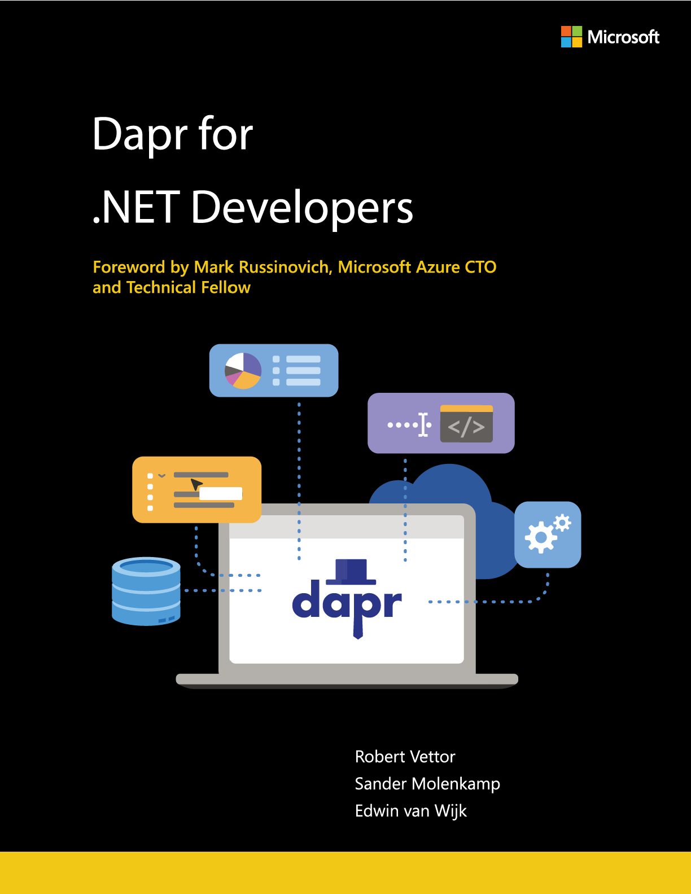
EDITION v1.2 PUBLISHED BY Microsoft Developer Division, .NET, and Azure Incubations teams A division of Microsoft Corporation One Microsoft Way Redmond, Washington 98052-6399 Copyright © 2023 by Microsoft Corporation All rights reserved. No part of the contents of this book may be reproduced or transmitted in any form or by any means without the written permission of the publisher.
This book is provided “as-is” and expresses the author’s views and opinions. The views, opinions, and information expressed in this book, including URL and other Internet website references, may change without notice.
Some examples depicted herein are provided for illustration only and are fictitious. No real association or connection is intended or should be inferred.
Microsoft and the trademarks listed at https://www.microsoft.com on the “Trademarks” webpage are trademarks of the Microsoft group of companies.
Mac and macOS are trademarks of Apple Inc. The Docker whale logo is a registered trademark of Docker, Inc. Used by permission. All other marks and logos are property of their respective owners. Authors: Rob Vettor, Principal Cloud Solution Architect - thinkingincloudnative.com, Microsoft Sander Molenkamp, Principal Cloud Architect/Microsoft MVP - sandermolenkamp.com, Info Support Edwin van Wijk, Principal Solution Architect/Microsoft MVP - defaultconstructor.com, Info Support Participants and Reviewers: Mark Russinovich, Azure CTO and Technical Fellow, Azure Office of CTO, Microsoft Nish Anil, Senior Program Manager, .NET team, Microsoft Mark Fussell, Principal Program Manager, Azure Incubations, Microsoft Yaron Schneider, Principal Software Engineer, Azure Incubations, Microsoft Ori Zohar, Senior Program Manager, Azure Incubations, Microsoft Editors: David Pine, Senior Content Developer, .NET team, Microsoft Maira Wenzel, Senior Program Manager, .NET team, Microsoft
Steve “ardalis” Smith, Senior Architect and Trainer, NimblePros
This guide has been written to cover the Dapr 1.9 version. .NET samples are based on .NET 7.
The audience for this guide is mainly developers, development leads, and architects who are interested in learning how to build applications designed for the cloud.
A secondary audience is technical decision-makers who plan to choose whether to build their applications using a cloud-native approach.
This guide is available both in PDF form and online. Feel free to forward this document or links to its online version to your team to help ensure common understanding of these topics. Most of these topics benefit from a consistent understanding of the underlying principles and patterns, as well as the trade-offs involved in decisions related to these topics. Our goal with this document is to equip teams and their leaders with the information they need to make well-informed decisions for their applications’ architecture, development, and hosting.
Foreword - Dapr for .NET Developers................................................................................... 1 The world is distributed.......................................................................................................... 3
Summary .....................................................................................................................................................................................7
Dapr at 20,000 feet ................................................................................................................. 8 Dapr and the problem it solves..........................................................................................................................................8 Dapr architecture .....................................................................................................................................................................9
Building blocks.....................................................................................................................................................................9 Components....................................................................................................................................................................... 11 Sidecar architecture......................................................................................................................................................... 13 Hosting environments.................................................................................................................................................... 14
Dapr performance considerations ................................................................................................................................. 15 Dapr and service meshes................................................................................................................................................... 16 Summary .................................................................................................................................................................................. 18
References........................................................................................................................................................................... 18
Get started with Dapr ........................................................................................................... 19 Install Dapr into your local environment..................................................................................................................... 19 Build your first Dapr application..................................................................................................................................... 19
Create the application.................................................................................................................................................... 19 Add Dapr State Management..................................................................................................................................... 20
Component configuration files ....................................................................................................................................... 21 Build a multi-container Dapr application.................................................................................................................... 23
Create the application.................................................................................................................................................... 23 Add Dapr service invocation........................................................................................................................................ 27 Add container support................................................................................................................................................... 29
Summary .................................................................................................................................................................................. 35 References........................................................................................................................................................................... 35 Traffic Control sample application...................................................................................... 36 Using Dapr building blocks............................................................................................................................................... 39
Hosting...................................................................................................................................................................................... 40 Self-hosted mode ............................................................................................................................................................ 40 Kubernetes.......................................................................................................................................................................... 41
Summary .................................................................................................................................................................................. 41 References........................................................................................................................................................................... 41
The Dapr state management building block...................................................................... 42 What it solves......................................................................................................................................................................... 42 How it works........................................................................................................................................................................... 43
Consistency......................................................................................................................................................................... 43 Concurrency ....................................................................................................................................................................... 45 Transactions ....................................................................................................................................................................... 45
Use the Dapr .NET SDK....................................................................................................................................................... 46 ASP.NET Core integration............................................................................................................................................. 47
State store components..................................................................................................................................................... 47 Configuration..................................................................................................................................................................... 48 Key prefix strategies........................................................................................................................................................ 49
Sample application: Dapr Traffic Control .................................................................................................................... 50 Summary .................................................................................................................................................................................. 51
References........................................................................................................................................................................... 52
The Dapr service invocation building block ....................................................................... 53 What it solves......................................................................................................................................................................... 53 How it works........................................................................................................................................................................... 53 Use the Dapr .NET SDK....................................................................................................................................................... 55
Invoke HTTP services using HttpClient.................................................................................................................... 55 Invoke HTTP services using DaprClient................................................................................................................... 57 Invoke gRPC services using DaprClient................................................................................................................... 58
Name resolution components......................................................................................................................................... 58
Configuration..................................................................................................................................................................... 58 Sample application: Dapr Traffic Control .................................................................................................................... 59 Summary .................................................................................................................................................................................. 60
References........................................................................................................................................................................... 60
The Dapr publish & subscribe building block.................................................................... 61 What it solves......................................................................................................................................................................... 61 How it works........................................................................................................................................................................... 62
Competing consumers................................................................................................................................................... 66 Use the Dapr .NET SDK....................................................................................................................................................... 66 Pub/sub components.......................................................................................................................................................... 68
Configuration..................................................................................................................................................................... 68 Sample application: Dapr Traffic Control .................................................................................................................... 69 Summary .................................................................................................................................................................................. 71
References........................................................................................................................................................................... 71
The Dapr bindings building block ....................................................................................... 72 What it solves......................................................................................................................................................................... 72 How it works........................................................................................................................................................................... 73
Input bindings ................................................................................................................................................................... 73 Output bindings ............................................................................................................................................................... 74
Use the Dapr .NET SDK....................................................................................................................................................... 76 Binding components ........................................................................................................................................................... 76
Cron binding ...................................................................................................................................................................... 77
Sample application: Dapr Traffic Control .................................................................................................................... 78 MQTT input binding........................................................................................................................................................ 79 SMTP output binding ..................................................................................................................................................... 81
Summary .................................................................................................................................................................................. 83 References........................................................................................................................................................................... 83
The Dapr actors building block............................................................................................ 84 What it solves......................................................................................................................................................................... 84 How it works........................................................................................................................................................................... 85
Turn-based access model............................................................................................................................................. 88 Timers and reminders..................................................................................................................................................... 89 State persistence .............................................................................................................................................................. 89
Use the Dapr .NET SDK....................................................................................................................................................... 90 Call actors from ASP.NET Core clients ..................................................................................................................... 93
Call non-.NET actors........................................................................................................................................................ 94 Timers and reminders..................................................................................................................................................... 95
Sample application: Dapr Traffic Control .................................................................................................................... 97 Summary .................................................................................................................................................................................. 98
References........................................................................................................................................................................... 99
The Dapr observability building block.............................................................................. 100 What it solves.......................................................................................................................................................................101 How it works.........................................................................................................................................................................101
Distributed tracing.........................................................................................................................................................102 Metrics................................................................................................................................................................................109 Logging..............................................................................................................................................................................111 Health status ....................................................................................................................................................................113 Dapr dashboard..............................................................................................................................................................114
Use the Dapr .NET SDK.....................................................................................................................................................115 Sample application: Dapr Traffic Control ..................................................................................................................115 Summary ................................................................................................................................................................................117 References .............................................................................................................................................................................118
The Dapr secrets management building block ................................................................ 119 What it solves.......................................................................................................................................................................119 How it works.........................................................................................................................................................................120 Use the Dapr .NET SDK.....................................................................................................................................................121 Secret store components.................................................................................................................................................122
Configuration...................................................................................................................................................................123 Indirectly consume Dapr secrets..............................................................................................................................123 Local file.............................................................................................................................................................................124 Kubernetes secret ..........................................................................................................................................................126 Azure Key Vault...............................................................................................................................................................126 Scope secrets...................................................................................................................................................................129
Sample application: Dapr Traffic Control ..................................................................................................................129 Secrets ................................................................................................................................................................................131 SMTP server credentials ..............................................................................................................................................132 Redis server credentials...............................................................................................................................................133
FineCalculator component license key..................................................................................................................134 Summary ................................................................................................................................................................................135 References .............................................................................................................................................................................135
Dapr reference application................................................................................................. 137 eShopOnContainers...........................................................................................................................................................137 eShopOnDapr.......................................................................................................................................................................138 Application of Dapr building blocks............................................................................................................................139
State management ........................................................................................................................................................140 Service invocation..........................................................................................................................................................142 Publish & subscribe.......................................................................................................................................................147 Bindings .............................................................................................................................................................................150 Actors..................................................................................................................................................................................152 Observability ....................................................................................................................................................................158 Secrets ................................................................................................................................................................................159
Benefits of applying Dapr to eShop............................................................................................................................160 Summary ................................................................................................................................................................................161
References.........................................................................................................................................................................161 Summary and the road ahead............................................................................................ 162 The road ahead....................................................................................................................................................................165
Foreword - Dapr for .NET Developers
With the wave of cloud adoption underway, there is a major shift happening towards “cloud native” development, often built with microservice-architectures. These microservices are both stateless and stateful, and run on the cloud and edge, embracing the diversity of languages and frameworks available today. This enterprise shift is driven by both the market forces of faster time to market, and the scale and efficiencies of building services for the cloud. Even before COVID-19, cloud adoption was accelerating for enterprises, and developers were being asked to do even more to deliver on building these distributed system applications. That has only accelerated since COVID-19. Developers in enterprises seek to focus on business logic, while leaning on platforms to imbue their applications with scale, resiliency, maintainability, elasticity, and the other attributes of cloud-native architectures, which is why there is also shift towards serverless platforms that hide the underlying infrastructure. Developers should not be expected to become distributed systems experts. This is where Dapr steps in to help you, whether you are building on infrastructure such as Kubernetes, or on a serverless platform.
Dapr is designed as an enterprise, developer-focused, microservices programming model platform with the mantra “any language, any framework, run anywhere”. It makes building distributed applications easy and portable across any infrastructure, from public-cloud, through hierarchical edge, and even down to single node IoT devices. It emerged from both our experiences building services in Azure and time spent working with customers building applications on Azure Kubernetes Service and Azure Service Fabric. Over and over, we saw common problems that they had to address. It became clear that there was a need to provide a “library” of common microservice best practices that developers could use, not only in new green field applications, but also to aid in the modernization of existing applications. In the containerized, distributed, and networked cloud native world, the sidecar model has emerged as the preferred approach, in the same way DLLs are preferred in the client/server generation. Using Dapr’s sidecar and APIs give you, as a developer, all the power of distributed systems functionality, with the ease of a single HTTP or gRPC local call.
To address the wide range of scenarios that developers face, Dapr provides features such as state management, service-to-service invocation, pub/sub, and integration to external systems with I/O bindings, which are based on the triggers and bindings of Azure Functions. These in turn take advantage of Dapr’s component model, which allows you to “swap out”, say different underlying state stores, without having to change any code. This component model makes code more portable, more flexible, and allows for experimentation of what best suits your needs. Developers don’t need to learn
and incorporate service SDKs into their code, or worry about authentication, secret management, retries, or conditional code that targets specific deployment environments.
This book shows how Dapr reduces your development time and overall code maintenance by incrementally “Daperizing” the canonical .NET reference application, eShop. For example, in the original eShop implementation, significant amounts of code were written to abstract between Azure Service Bus and RabbitMQ for publishing events between services. All this code can be discarded and simply replaced with Dapr’s pub/sub API and component model, which had an even wider range of pub/sub brokers, rather than just two. Dapr’s actor model, when used in the reworked eShop application, shows the ease of building long running, stateful, event driven, workflow applications with all the difficulties of concurrency and multi-threading removed. By the end of this book, you will see the drastic simplification that Dapr brings to your application development, and I firmly believe all developers embarking on a cloud native app building journey should use Dapr.
We publicly announced Dapr with the v0.1 release in Oct 2019 and now, a year and half later, I am thrilled to say that Dapr is ready for production usage with the v1.0 release. Getting Dapr to v1.0 has truly been a community effort. It has been amazing to see the open-source community coalesce around Dapr and grow since it was first announced – from 114 contributors in October 2019 to over 700 in early 2021 - a six-fold increase in 16 months! Contributions to the project have gone to every Dapr repo and have ranged from opening issues, commenting on feature proposals, providing samples, and, of course, contributing code. The parts of the project community members have contributed to the most include the Dapr runtime, docs, CLI, SDKs, and the creation of a rich ecosystem of components. Maintaining this openness is critical to Dapr’s future.
Dapr is just getting started, though, and you should expect to see more Dapr capabilities and more support for Dapr in Azure services. I hope that you will take advantage of Dapr to enable you to focus on your core business logic and accelerate your microservices development. I am excited to have you join us in the Dapr community on this journey at https://github.com/dapr/ and on Discord https://aka.ms/dapr-discord.
Modern distributed systems are complex. You start with small, loosely coupled, independently deployable services. These services cross process and server boundaries. They then consume different kinds of infrastructure backing services (databases, message brokers, key vaults). Finally, these disparate pieces compose together to form an application. Mark Russinovich Azure CTO and Technical Fellow Microsoft
The world is distributed
Just ask any ‘cool kid’: Modern, distributed systems are in, and monolithic apps are out!
But, it’s not just “cool kids.” Progressive IT Leaders, corporate architects, and astute developers are echoing these same thoughts as they explore and evaluate modern distributed applications. Many have bought in. They’re designing new and replatforming existing enterprise applications following the principles, patterns, and practices of distributed microservice applications.
But, this evolution raises many questions…
• What exactly is a distributed application?
• Why are they gaining popularity?
• What are the costs?
• And, importantly, what are the tradeoffs?
To start, let’s rewind and look at the past 15 years. During this period, we typically constructed applications as a single, monolithic unit. Figure 1-1 shows the architecture.
Figure 1-1. Monolithic architecture.
Note how the modules for Ordering, Identity, and Marketing execute in a single-server process. Application data is stored in a shared database. Business functionality is exposed via HTML and RESTful interfaces.
In many ways, monolithic apps are straightforward. They’re straightforward to:
• Build
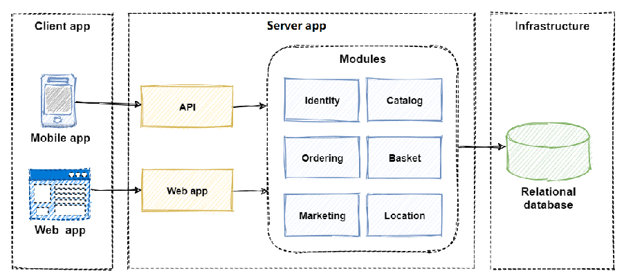
• Test
• Deploy
• Troubleshoot
• Scale vertically (scale up) However, monolithic architectures can present significant challenges. Over time, you may reach a point where you begin to lose control…
• The monolith has become so overwhelmingly complicated that no single person understands it.
• You fear making changes as each brings unintended and costly side effects.
• New features/fixes become time-consuming and expensive to implement.
• Even the smallest change requires full deployment of the entire application - expensive and risky.
• One unstable component can crash the entire system.
• Adding new technologies and frameworks aren’t an option.
• Implementing agile delivery methodologies are difficult.
• Architectural erosion sets in as the code base deteriorates with never-ending “special cases.”
• Eventually the consultants come in and tell you to rewrite it.
IT practitioners call this condition the Fear Cycle. If you’ve been in the technology business for any length of time, good chance you’ve experienced it. It’s stressful and exhausts your IT budget. Instead of building new and innovative solutions, most of your budget is spent maintaining legacy apps.
Instead of fear, businesses require speed and agility. They seek an architectural style with which they can rapidly respond to market conditions. They need to instantaneously update and individually scale small areas of a live application.
An early attempt to gain speed and agility came in the form of Service Oriented Architecture, or SOA. In this model, service consumers and service providers collaborated via middleware messaging components, often referred to as an Enterprise Service Bus, or ESB. Figure 1-2 shows the architecture.
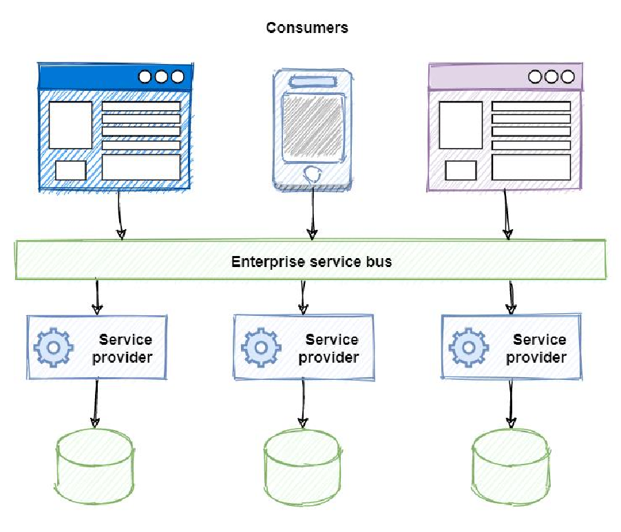
Figure 1-2. SOA architecture.
With SOA, centralized service providers registered with the ESB. Business logic would be built into the ESB to integrate providers and consumers. Service consumers could then find and communicate with these providers using the ESB.
Despite the promises of SOA, implementing this approach often increased complexity and introduced bottlenecks. Maintenance costs became high and ESB middleware expensive. Services tended to be large. They often shared dependencies and data storage. In the end, SOAs often resulted in a ‘distributed monolithic’ structure with centralized services that were resistant to change.
Nowadays, many organizations have realized speed and agility by adopting a distributed microservice architectural approach to building systems. Figure 1-3 shows the same system built using distributed techniques and practices.
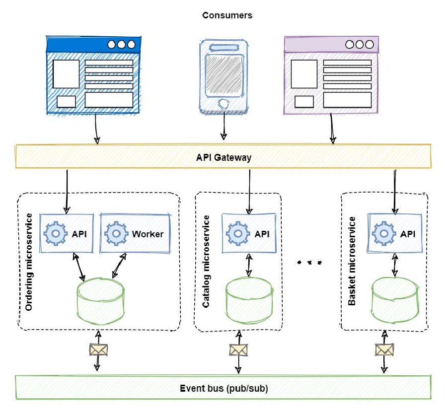
Figure 1-3. Distributed architecture.
Note how the same application is decomposed across a set of distributed services. Each is selfcontained and encapsulates its own code, data, and dependencies. Each is deployed in a software container and managed by a container orchestrator. Instead of a single database shared by multiple services, each service owns a private database. Other services can’t access this database directly and can only get to data that is exposed through the public API of the service that owns it. Note how some services require a full relational database, but others, a NoSQL datastore. The basket service stores its state in a distributed key/value cache. Note how inbound traffic routes through an API Gateway service. It’s responsible for directing calls to services and enforcing cross-cutting concerns. Most importantly, the application takes full advantage of the scalability, availability, and resiliency features found in modern cloud platforms.
But, while distributed services can provide agility and speed, they present a different set of challenges. Consider the following…
• How can distributed services discover each other and communicate synchronously?
• How can they implement asynchronous messaging?
• How can they maintain contextual information across a transaction?
• How can they become resilient to failure?
• How can they scale to meet fluctuating demand?
• How are they monitored and observed?
For each of these challenges, multiple products are often available. But, shielding your application from product differences and keeping code maintainable and portable become a challenge.
This book introduces Dapr. Dapr is a distributed application runtime. It directly addresses many of the challenges found that come along with distributed applications. Looking ahead, Dapr has the potential to have a profound impact on distributed application development.
In this chapter, we discussed the adoption of distributed applications. We contrasted a monolithic system approach with that of distributed services. We pointed out many of the common challenges when considering a distributed approach.
Now, sit back, relax, and let us introduce you the new world of Dapr.
CHAPTER |
|---|
3
Dapr at 20,000 feet
In chapter 1, we discussed the appeal of distributed microservice applications. But, we also pointed out that they dramatically increase architectural and operational complexity. With that in mind, the question becomes, how can you “have your cake” and “eat it too?”. That is, how can you take advantage of the agility of distributed architecture, and minimize its complexity?
Dapr, or Distributed Application Runtime, is a new way to build modern distributed applications. What started as a prototype has evolved into a highly successful open-source project. Its sponsor, Microsoft, has closely partnered with customers and the open-source community to design and build Dapr. The Dapr project brings together developers from all backgrounds to solve some of the toughest challenges of developing distributed applications.
This book looks at Dapr from the viewpoint of a .NET developer. In this chapter, you’ll build a conceptual understanding of Dapr and how it works. Later on, we present practical, hands-on instruction on how you can use Dapr in your applications.
Imagine flying in a jet at 20,000 feet. You look out the window and see the landscape below from a wide perspective. Let’s do the same for Dapr. Visualize yourself flying over Dapr at 20,000 feet. What would you see?
Dapr and the problem it solves Dapr addresses a large challenge inherent in modern distributed applications: Complexity. Through an architecture of pluggable components, Dapr greatly simplifies the plumbing behind distributed applications. It provides a dynamic glue that binds your application with infrastructure capabilities from the Dapr runtime. Consider a requirement to make one of your services stateful? What would be your design. You could write custom code that targets a state store such as Redis Cache. However, Dapr provides state management capabilities out-of-the-box. Your service invokes the Dapr state management building block that dynamically binds to a state store component via a Dapr component configuration yaml file. Dapr ships with several pre-built state store components, including Redis. With this model, your service delegates state management to the Dapr runtime. Your service has no SDK, library, or direct reference to the underlying component. You can even change state stores, say, from Redis to MySQL or Cassandra, with no code changes. Figure 2-1 shows Dapr from 20,000 feet.
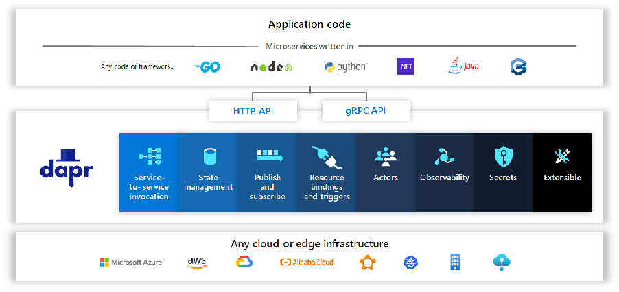
Figure 2-1. Dapr at 20,000 feet.
In the top row of the figure, note how Dapr provides language-specific SDKs for popular development platforms. Dapr v1.0 includes support for Go, Node.js, Python, .NET, Java, and JavaScript. This book focuses on the Dapr .NET SDK, which also provides direct support for ASP.NET Core integration.
While language-specific SDKs enhance the developer experience, Dapr is platform agnostic. Under the hood, Dapr’s programming model exposes capabilities through standard HTTP/gRPC communication protocols. Any programming platform can call Dapr via its native HTTP and gRPC APIs.
The blue boxes across the center of the figure represent the Dapr building blocks. Each exposes a distributed application capability that your application can consume.
The bottom row highlights the portability of Dapr and the diverse environments across which it can run.
At this point, the jet turns around and flies back over Dapr, descending in altitude, giving you a closer look at how Dapr works.
Building blocks From the new perspective, you see a more detailed view of the Dapr building blocks. A building block encapsulates a distributed infrastructure capability. You can access the functionality through the HTTP or gRPC APIs. Figure 2-2 shows the available blocks for Dapr v 1.0.
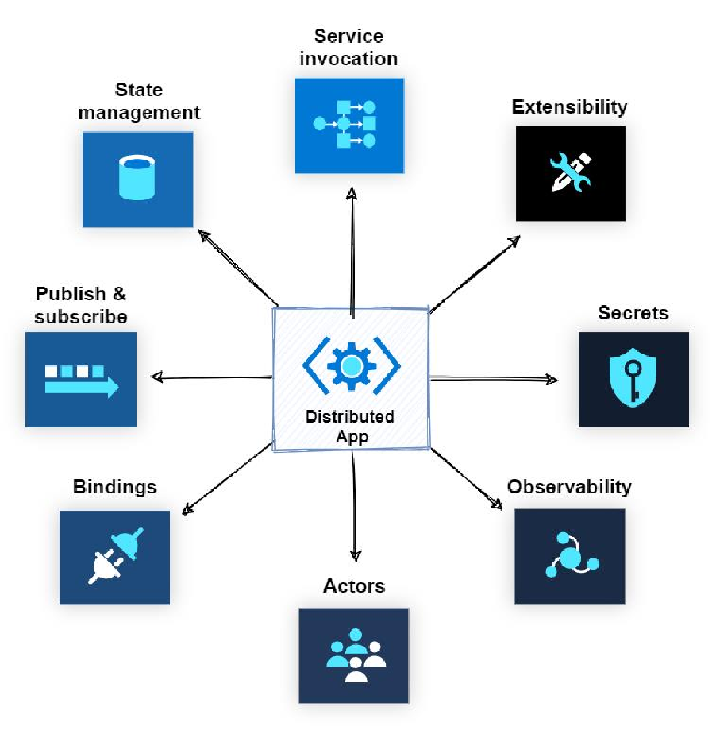
Building block |
Description |
|---|---|
State management |
Support contextual information for long running stateful services. |
Service invocation |
Invoke direct, secure service-to-service calls using platform agnostic protocols and well-known endpoints. |
Publish and subscribe |
Implement secure, scalable pub/sub messaging between services. |
Building block |
Description |
|---|---|
Bindings |
Trigger code from events raised by external resources with bi-directional communication. |
Observability |
Monitor and measure message calls across networked services. |
Secrets |
Securely access external secret stores. |
Actors |
Encapsulate logic and data in reusable actor objects. |
Figure 2-3 shows this interaction.
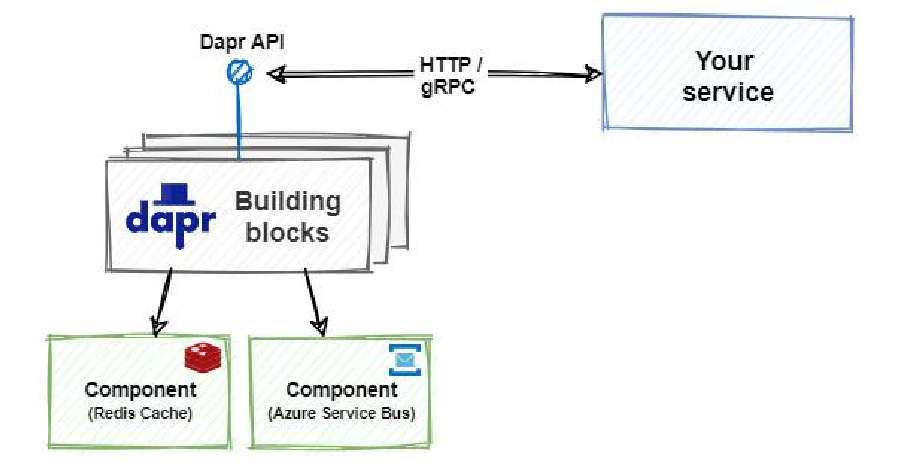
Figure 2-3. Dapr building block integration.
Building blocks invoke Dapr components that provide the concrete implementation for each resource. The code for your service is only aware of the building block. It takes no dependencies on external SDKs or libraries - Dapr handles the plumbing for you. Each building block is independent. You can use one, some, or all of them in your application. As a value-add, Dapr building blocks bake in industry best practices including comprehensive observability.
We provide detailed explanation and code samples for each Dapr building block in the upcoming chapters. At this point, the jet descends even more. From the new perspective, you now have a closer look at the Dapr components layer.
While building blocks expose an API to invoke distributed application capabilities, Dapr components provide the concrete implementation to make it happen.
Consider, the Dapr state store component. It provides a uniform way to manage state for CRUD operations. Without any change to your service code, you could switch between any of the following Dapr state components:
• AWS DynamoDB
• Aerospike
• Azure Blob Storage
• Azure CosmosDB
• Azure Table Storage
• Cassandra
• Cloud Firestore (Datastore mode)
• CloudState
• Couchbase
• Etcd
• HashiCorp Consul
• Hazelcast
• Memcached
• MongoDB
• PostgreSQL
• Redis
• RethinkDB
• SQL Server
• Zookeeper
Each component provides the necessary implementation through a common state management interface:
type Store interface { Init(metadata Metadata) error Delete(req *DeleteRequest) error BulkDelete(req []DeleteRequest) error Get(req *GetRequest) (*GetResponse, error) Set(req *SetRequest) error BulkSet(req []SetRequest) error } |
|---|
TipThe Dapr runtime as well as all of the Dapr components have been written in the Golang, or Go, language. Go is a popular language across the open source community and attests to cross-platform commitment of Dapr. |
|---|
Perhaps you start with Azure Redis Cache as your state store. You specify it with the following configuration:
:::{custom-style=CodeBox} yaml apiVersion: dapr.io/v1alpha1 kind: Component metadata: name: statestore namespace: default spec: type: state.redis version: v1 metadata: - name: redisHost value:
In the spec section, you configure Dapr to use the Redis Cache for state management. The section also contains component-specific metadata. In this case, you can use it to configure additional Redis settings.
At a later time, the application is ready to go to production. For the production environment, you may want to change your state management to Azure Table Storage. Azure Table Storage provides state management capabilities that are affordable and highly durable.
Component |
Description |
|---|---|
Service discovery |
Used by the service invocation building block to integrate with the hosting environment to provide service-to-service discovery. |
State |
Provides a uniform interface to interact with a wide variety of state store implementations. |
Pub/sub |
Provides a uniform interface to interact with a wide variety of message bus implementations. |
Bindings |
Provides a uniform interface to trigger application events from external systems and invoke external systems with optional data payloads. |
Middleware |
Allows custom middleware to plug into the request processing pipeline and invoke additional actions on a request or response. |
Secret stores |
Provides a uniform interface to interact with external secret stores, including cloud, edge, commercial, open-source services. |
As the jet completes its fly over of Dapr, you look back once more and can see how it connects together.
Dapr exposes its building blocks and components through a sidecar architecture. A sidecar enables Dapr to run in a separate memory process or separate container alongside your service. Sidecars provide isolation and encapsulation as they aren’t part of the service, but connected to it. This separation enables each to have its own runtime environment and be built upon different programming platforms. Figure 2-4 shows a sidecar pattern.
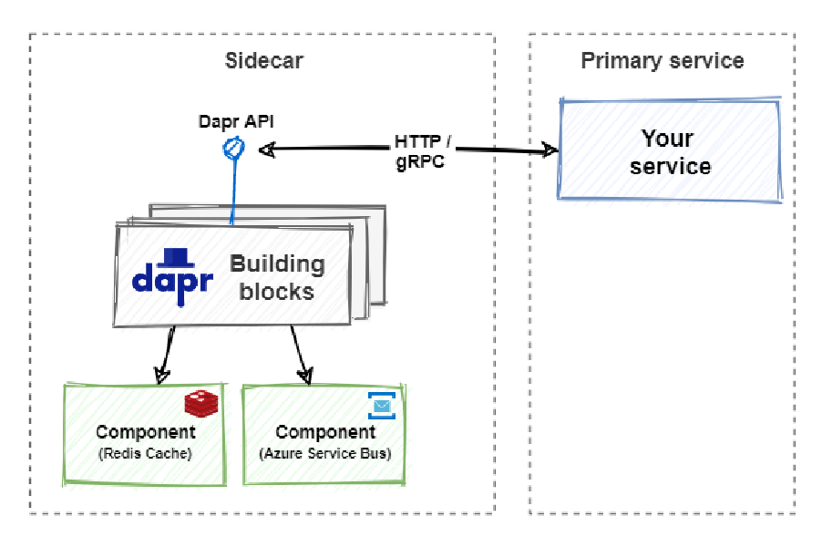
This pattern is named Sidecar because it resembles a sidecar attached to a motorcycle. In the previous figure, note how the Dapr sidecar is attached to your service to provide distributed application capabilities.
Hosting environments
Dapr has cross-platform support and can run in many different environments. These environments include Kubernetes, a group of VMs, or edge environments such as Azure IoT Edge.
For local development, the easiest way to get started is with self-hosted mode. In self-hosted mode, the microservices and Dapr sidecars run in separate local processes without a container orchestrator such as Kubernetes. For more information, see download and install the Dapr CLI.
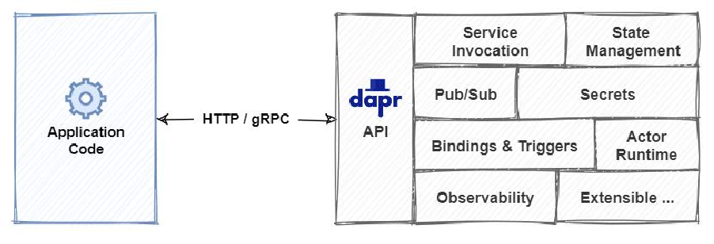
By default, Dapr installs Docker containers for Redis and Zipkin to provide default state management and observability. If you don’t want to install Docker on your local machine, you can even run Dapr in self-hosted mode without any Docker containers. However, you must install default components such as Redis for state management and pub/sub manually.
Dapr also runs in containerized environments, such as Kubernetes. Figure 2-6 shows Dapr running in a separate side-car container along with the application container in the same Kubernetes pod.
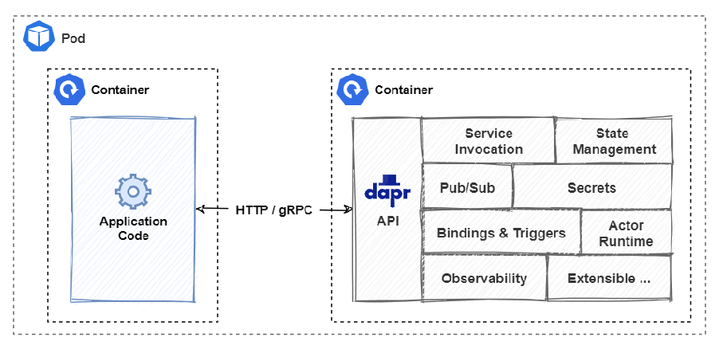
Dapr performance considerations
As you’ve seen, Dapr exposes a sidecar architecture to decouple your application from distributed application capabilities. Invoking a Dapr operation requires at least one out-of-process network call.
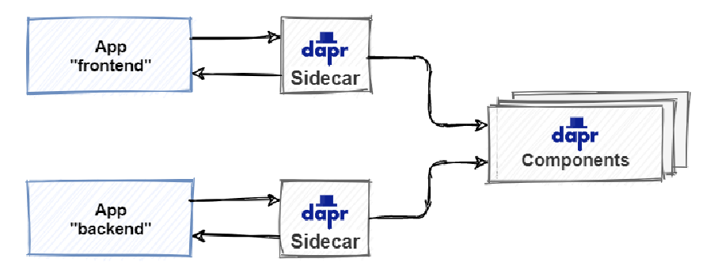
The Dapr team has invested heavily in performance. A tremendous amount of engineering effort has gone into making Dapr efficient. Calls between Dapr sidecars are always made with gRPC, which delivers high performance and small binary payloads. In most cases, the additional overhead should be sub-millisecond.
To increase performance, developers can call the Dapr building blocks with gRPC. gRPC is a modern, high-performance framework that evolves the age-old remote procedure call (RPC) protocol. gRPC uses HTTP/2 for its transport protocol, which provides significant performance enhancements over HTTP RESTFul service, including:
• Multiplexing support for sending multiple parallel requests over the same connection - HTTP 1.1 limits processing to one request/response message at a time.
• Bidirectional full-duplex communication for sending both client requests and server responses simultaneously.
• Built-in streaming enabling requests and responses to asynchronously stream large data sets.
To learn more, check out the gRPC overview from the Architecting Cloud-Native .NET Apps for Azure eBook.
Dapr and service meshes Service mesh is another rapidly evolving technology for distributed applications. A service mesh is a configurable infrastructure layer with built-in capabilities to handle service-toservice communication, resiliency, load balancing, and telemetry capture. It moves the responsibility for these concerns out of the services and into the service mesh layer. Like Dapr, a service mesh also follows a sidecar architecture.
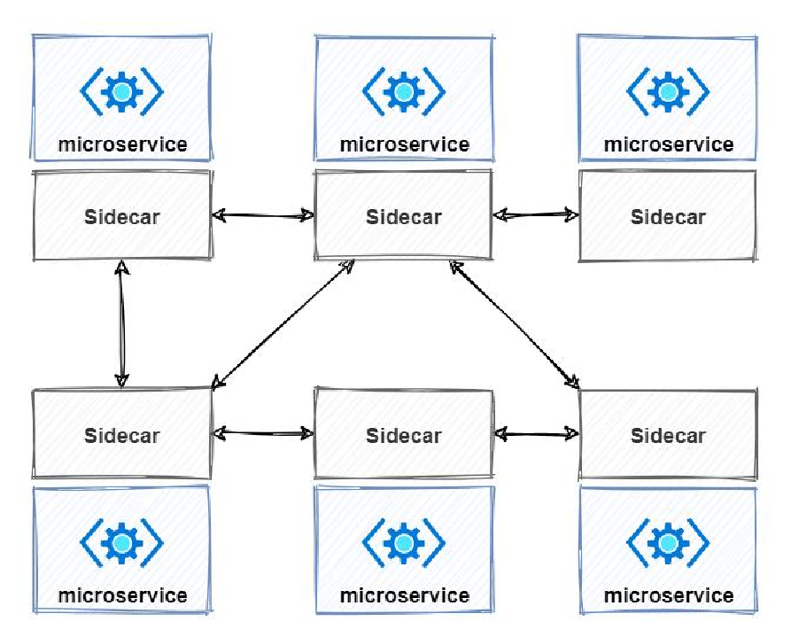
The previous figure shows how messages are intercepted by a sidecar proxy that runs alongside each service. Each proxy can be configured with traffic rules specific to the service. It understands messages and can route them across your services and the outside world.
So the question becomes, “Is Dapr a service mesh?”. While both use a sidecar architecture, each technology has a different purpose. Dapr provides distributed application features. A service mesh provides a dedicated network infrastructure layer.
As each works at a different level, both can work together in the same application. For example, a service mesh could provide networking communication between services. Dapr could provide application services such as state management or actor services.
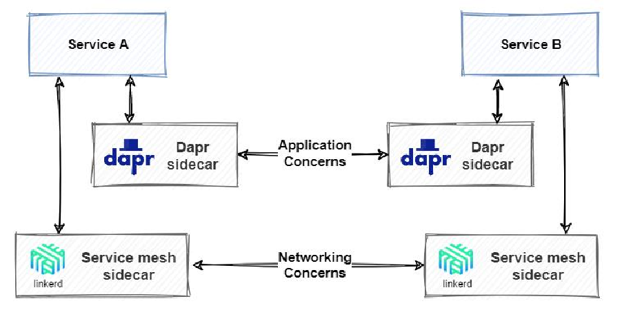
Figure 2-9. Dapr and service mesh together. The Dapr online documentation cover Dapr and service mesh integration.
Summary This chapter introduced you to Dapr, a Distributed Application Runtime. Dapr is an open-source project sponsored by Microsoft with close collaboration from customers and the open-source community.
At its core, Dapr helps reduce the inherent complexity of distributed microservice applications. It’s built upon a concept of building block APIs. Dapr building blocks expose common distributed application capabilities, such as state management, service-to-service invocation, and pub/sub messaging. Dapr components lie beneath the building blocks and provide the concrete implementation for each capability. Applications bind to various components through configuration files.
In the next chapters, we present practical, hands-on instruction on how to use Dapr in your applications.
• Dapr documentation
• Learning Dapr
• .NET Microservices: Architecture for Containerized .NET applications
• Architecting Cloud-Native .NET Apps for Azure
CHAPTER |
|---|
4
Get started with Dapr
In the first two chapters, you learned basic concepts about Dapr. It’s time to take it for a test drive. This chapter will guide you through preparing your local development environment and building two Dapr
.NET applications.
You’ll start by installing Dapr on your development computer. Once complete, you can build and run Dapr applications in self-hosted mode.
1. Install the Dapr CLI. It enables you to launch, run, and manage Dapr instances. It also provides debugging support.
2. Install Docker Desktop. If you’re running on Windows, make sure that Docker Desktop for Windows is configured to use Linux containers.
[!NOTE] By default, Dapr uses Docker containers to provide you the best out-of-the-box experience. To run Dapr outside of Docker, you can skip this step and execute a slim initialization. The examples in this chapter require you use Docker containers.
3. Initialize Dapr. This step sets up your development environment by installing the latest Dapr binaries and container images.
4. Install the .NET 7 SDK. Now that Dapr is installed, it’s time to build your first Dapr application!
You’ll start by building a simple .NET Console application that consumes the Dapr state management building block.
1. Open up the command shell or terminal of your choice. You might consider the terminal capabilities in Visual Studio Code. Navigate to the root folder in which you want to build your application. Once there, enter the following command to create a new .NET Console application:
dotnet new console -o DaprCounter |
|---|
The command scaffolds a simple "Hello World" .NET application.
1. Then, navigate into the new directory created by the previous command:
cd DaprCounter |
|---|
1. Run the newly created application using the dotnet run command. Doing so writes “Hello World!” to the console screen:
dotnet run |
|---|
Next, you’ll use the Dapr state management building block to implement a stateful counter in the program.
You can invoke Dapr APIs across any development platform using Dapr’s native support for HTTP and gRPC. However, .NET Developers will find the Dapr .NET SDK more natural and intuitive. It provides a strongly typed .NET client to call the Dapr APIs. The .NET SDK also tightly integrates with ASP.NET Core.
1. From the terminal window, add the Dapr.Client NuGet package to your application:
dotnet add package Dapr.Client |
|---|
1. Open the Program.cs file in your favorite editor and update its contents to the following code:
using Dapr.Client const string storeName = "statestore"; const string key = "counter" var daprClient = new DaprClientBuilder().Build(); var counter = await daprClient.GetStateAsync Console.WriteLine($"Counter = {counter++}") await daprClient.SaveStateAsync(storeName, key, counter); await Task.Delay(1000); } |
|---|
The updated code implements the following steps:
- First a new [`DaprClient`]{custom-style=Code} instance is instantiated. This class enables you to interact with the Dapr sidecar.
- From the state store, [`DaprClient.GetStateAsync`]{custom-style=Code} fetches the value for the [`counter`]{custom-style=Code} key. If the key doesn't exist, the default value for [`int`]{custom-style=Code} (which is [`0`]{custom-style=Code}) is returned.
- The code then iterates, writing the [`counter`]{custom-style=Code} value to the console and saving an incremented value to the state store.
1. The Dapr CLI run command starts the application. It invokes the underlying Dapr runtime and enables both the application and Dapr sidecar to run together. If you omit the app-id, Dapr will generate a unique name for the application. The final segment of the command, dotnet run, instructs the Dapr runtime to run the .NET application.
[!IMPORTANT] Care must be taken to always pass an explicit app-id parameter when consuming the state management building block. The block uses the application id value as a prefix for its
state key for each key/value pair. If the application id changes, you can no longer access the previously stored state.
Now run the application with the following command:
dapr run --app-id DaprCounter dotnet run |
|---|
Try stopping and restarting the application. You'll see that the counter doesn't reset. Instead it continues from the previously saved state. The Dapr building block makes the application stateful.
ImportantIt’s important to understand your sample application communicates with a pre-configured state component, but has no direct dependency on it. Dapr abstracts away the dependency. As you’ll shortly see, the underlying state store component can be changed with a simple configuration update. |
|---|
You might be wondering, where exactly is the state stored?
When you first initialized Dapr for your local environment, it automatically provisioned a Redis container. Dapr then configured the Redis container as the default state store component with a component configuration file, entitled statestore.yaml. Here’s a look at its contents:
apiVersion: dapr.io/v1alpha1 kind: Component metadata: name: statestore spec: type: state.redis version: v1 metadata:
|
|---|
NoteDefault component configuration files are stored in the $HOME/.dapr/components folder on Linux/macOS, and in the %USERPROFILE%\.dapr\components folder on Windows. |
|---|
Note the format of the previous component configuration file:
• Each component has a name. In the sample above, the component is named statestore. We used that name in our first code example to tell the Dapr sidecar which component to use.
• Each component configuration file has a spec section. It contains a type field that specifies the component type. The version field specifies the component version. The metadata field
contains information that the component requires, such as connection details and other settings. The metadata values will vary for the different types of components.
A Dapr sidecar can consume any Dapr component configured in your application. But, what if you had an architectural justification to limit the accessibility of a component? How could you restrict the Redis component to Dapr sidecars running only in a production environment?
To do so, you could define a namespace for the production environment. You might name it production. In self-hosted mode, you specify the namespace of a Dapr sidecar by setting the NAMESPACE environment variable. When configured, the Dapr sidecar will only load the components that match the namespace. For Kubernetes deployments, the Kubernetes namespace determines the components that are loaded. The following sample shows the Redis component placed in a production namespace. Note the namespace declaration in the metadata element:
apiVersion: dapr.io/v1alpha1 kind: Component metadata: name: statestore namespace: production spec: type: state.redis version: v1 metadata:
|
|---|
ImportantA namespaced component is only accessible to applications running in the same namespace. If your Dapr application fails to load a component, make sure that the application namespace matches the component namespace. This can be especially tricky in self-hosted mode where the application namespace is stored in a NAMESPACE environment variable. |
|---|
If needed, you could further restrict a component to a particular application. Within the production namespace, you may want to limit access of the Redis cache to only the DaprCounter application. You do so by specifying scopes in the component configuration. The following example shows how to restrict access to the Redis statestore component to the application DaprCounter in the production namespace:
apiVersion: dapr.io/v1alpha1 kind: Component metadata:
name: statestore namespace: production
spec: type: state.redis version: v1 metadata:
- name: redisHost
value: localhost:6379
- name: redisPassword value: ""
- name: actorStateStore value: "true"
scopes:
- DaprCounter
In the first example, you created a simple .NET console application that ran side-by-side with a Dapr sidecar. Modern distributed applications, however, often consist of many moving parts. They can simultaneously run independent microservices. These modern applications are typically containerized and require container orchestration tools such as Docker Compose or Kubernetes.
In the next example, you’ll create a multi-container application. You’ll also use the Dapr service invocation building block to communicate between services. The solution will consist of a web application that retrieves weather forecasts from a web API. They will each run in a Docker container. You’ll use Docker Compose to run the container locally and enable debugging capabilities.
Make sure you’ve configured your local environment for Dapr and installed the .NET 7 Development Tools (instructions are available at the beginning of this chapter).
Additionally, you’ll need to complete this sample using Visual Studio 2022 with the ASP.NET and web development workload installed.
1. In Visual Studio 2022, create an ASP.NET Core Web App project:
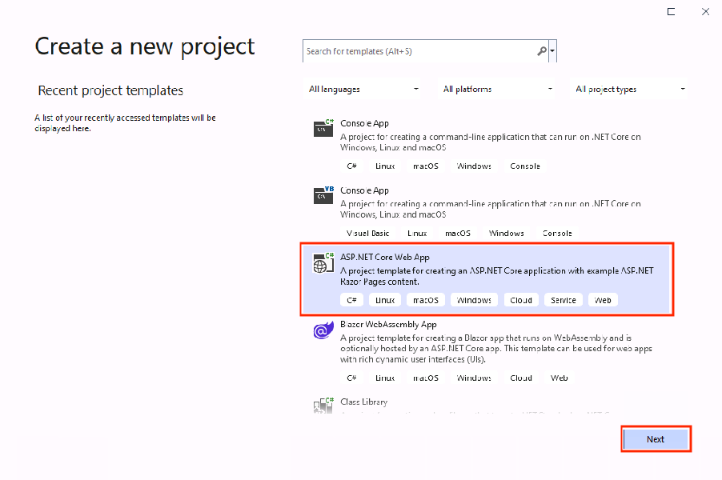
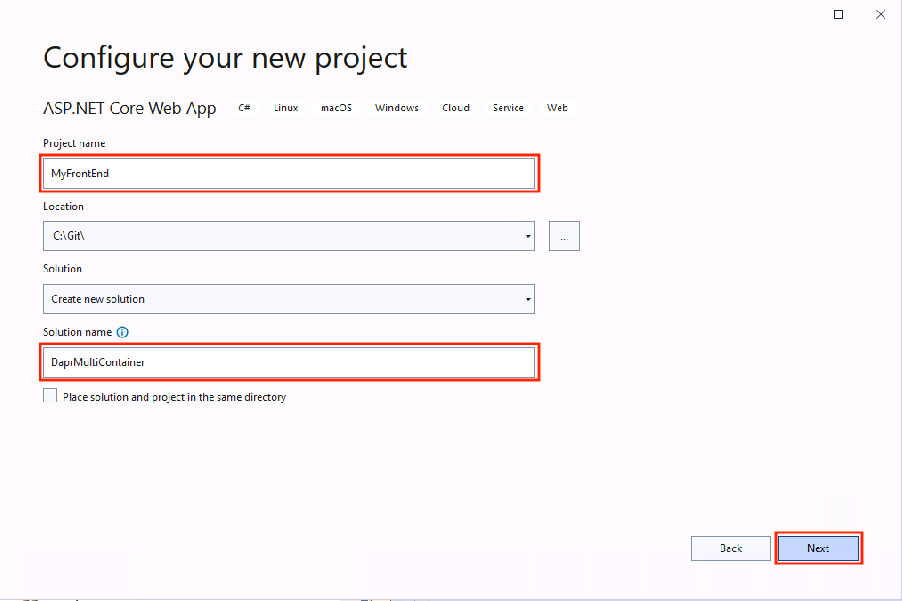
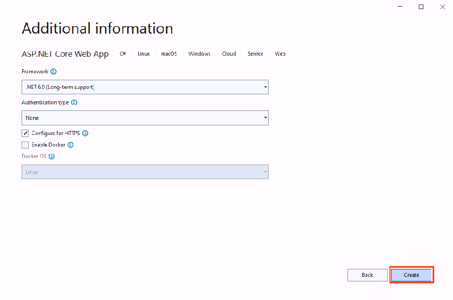
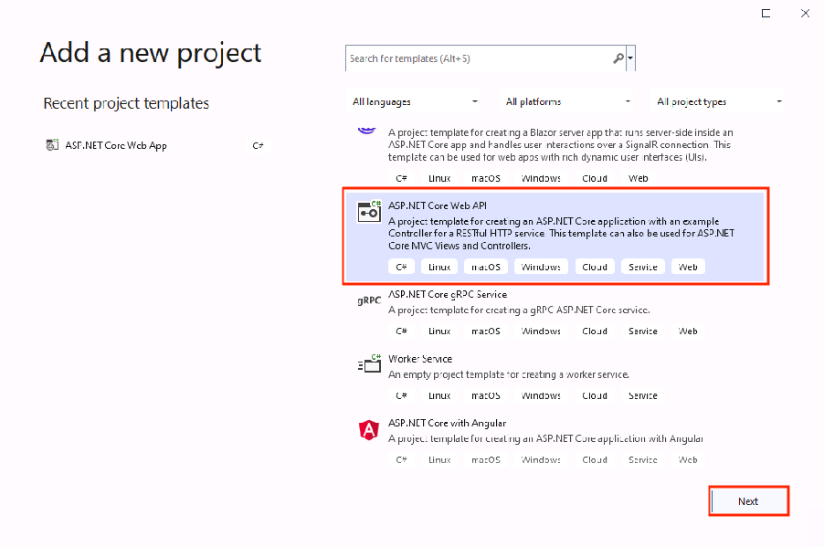
1. Name the project MyBackEnd:
1. By default, a Dapr sidecar relies on the network boundary to limit access to its public API. So, clear the checkbox for Configure for HTTPS:
> [!IMPORTANT] > If you leave the **Configure for HTTPS** checkbox checked, the generated ASP.NET Core API project includes middleware to redirect client requests to the HTTPS endpoint. This breaks communication between the Dapr sidecar and your application, unless you explicitly configure the use of HTTPS when running your Dapr application. To enable the Dapr sidecar to communicate over HTTPS, include the [`--appssl`]{custom-style=Code} flag in the Dapr command to start the application. Also specify the HTTPS port using the [`--app-port`]{custom-style=Code} parameter. The remainder of this walkthrough uses plain HTTP communication between the sidecar and the application, and requires you to clear the **Configure for HTTPS** checkbox.
Now, you’ll configure communication between the services using Dapr service invocation building block. You’ll enable the web app to retrieve weather forecasts from the web API. The service invocation building block features many benefits. It includes service discovery, automatic retries, message encryption (using mTLS), and improved observability. You’ll use the Dapr .NET SDK to invoke the service invocation API on the Dapr sidecar.
1. In Visual Studio, open the Package Manager Console (Tools > NuGet Package Manager > Package Manager Console) and make sure that MyFrontEnd is the default project. From the console, add the Dapr.AspNetCore NuGet package to the project:
Install-Package Dapr.AspNetCore |
|---|
1. In the MyFrontEnd project, open the Program.cs file and add a call to builder.Services.AddDaprClient:
var builder = WebApplication.CreateBuilder(args) // Add services to the container. builder.Services.AddDaprClient(); builder.Services.AddRazorPages() // ... |
|---|
The [`AddDaprClient`]{custom-style=Code} call registers the [`DaprClient`]{customstyle=Code} class with the ASP.NET Core dependency injection system. With the client registered, you can now inject an instance of [`DaprClient`]{custom-style=Code} into your service code to communicate with the Dapr sidecar, building blocks, and components.
1. Add a new C# class file named WeatherForecast to the MyFrontEnd project:
namespace MyFrontEnd public class WeatherForecast { public DateTime Date { get; set; public int TemperatureC { get; set; public int TemperatureF { get; set; public string Summary { get; set; } = string.Empty; } |
|---|
1. Open the Index.cshtml.cs file in the Pages folder, and replace its contents with the following code:
using Dapr.Client; using Microsoft.AspNetCore.Mvc.RazorPages namespace MyFrontEnd.Pages public class IndexModel : PageModel { private readonly DaprClient _daprClient public IndexModel(DaprClient daprClient) { _daprClient = daprClient; public async Task OnGet() { var forecasts = await _daprClient.InvokeMethodAsync ViewData["WeatherForecastData"] = forecasts; } } |
|---|
You add Dapr capabilities into the web app by injecting the [`DaprClient`]{customstyle=Code} class into [`IndexModel`]{custom-style=Code} constructor. In the [`OnGet`]{custom-style=Code} method, you call the backend API service with the Dapr service invocation building block. The [`OnGet`]{custom-style=Code} method is invoked
whenever a user visits the home page. You use the [`DaprClient.InvokeMethodAsync`]{custom-style=Code} method to invoke the [`weatherforecast`]{custom-style=Code} method of the [`MyBackEnd`]{custom-style=Code} service. You'll configure the web API to use [`MyBackEnd`]{custom-style=Code} as its application ID later on when configuring it to run with Dapr. Finally, the service response is saved in view data.
1. Replace the contents of the Index.cshtml file in the Pages folder, with the following code. It displays the weather forecasts stored in the view data to the user:
@page @model IndexModel @{ ViewData["Title"] = "Home page"; WelcomeLearn about building Web apps with ASP.NECore. @foreach (var forecast in (IEnumerableThe forecast for @forecast.Date is @forecast.Summary! } |
|---|
In the final part of this example, you’ll add container support and run the solution using Docker Compose.
1. Right-click the MyFrontEnd project, and choose Add > Container Orchestrator Support…. The
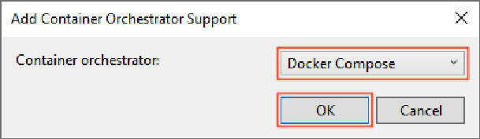
Choose **Docker Compose**.
1. In the next dialog, select Linux as the Target OS:
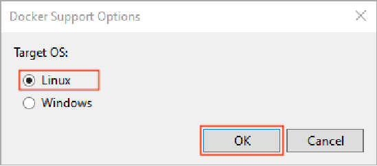
Visual Studio creates a *docker-compose.yml*file and a *.dockerignore* file in the
**docker-compose** folder in the solution:
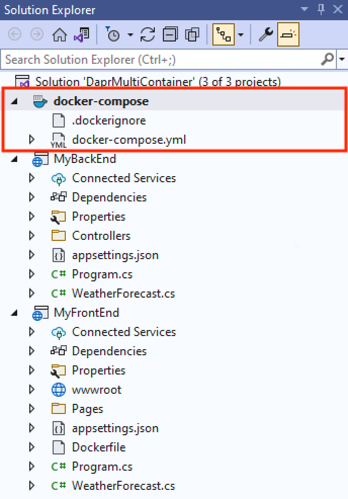
The *docker-compose.yml* file has the following content:
version: '3.4 services: myfrontend: image: ${DOCKER_REGISTRY-}myfrontend build: context: . dockerfile: MyFrontEnd/Dockerfile |
|---|
The *.dockerignore* file contains file types and extensions that you don't want Docker to include in the container. These files are associated with the development environment and source control and not the app or service you're deploying.
In the root of the *MyFrontEnd* project directory, a new *Dockerfile* was created. A
*Dockerfile* is a sequence of commands that are used to build an image. For more information, see [Dockerfile reference](https://docs.docker.com/engine/reference/builder).
The *Dockerfile* contains the following commands:
FROM mcr.microsoft.com/dotnet/aspnet:7.0 AS base WORKDIR /app EXPOSE 80 EXPOSE 44 FROM mcr.microsoft.com/dotnet/sdk:7.0 AS build WORKDIR /src COPY ["MyFrontEnd/MyFrontEnd.csproj", "MyFrontEnd/"] RUN dotnet restore "MyFrontEnd/MyFrontEnd.csproj" COPY . . WORKDIR "/src/MyFrontEnd" RUN dotnet build "MyFrontEnd.csproj" -c Release -o /app/buil FROM build AS publish RUN dotnet publish "MyFrontEnd.csproj" -c Release -o /app/publis FROM base AS final WORKDIR /app COPY --from=publish /app/publish . ENTRYPOINT ["dotnet", "MyFrontEnd.dll"] |
|---|
The preceding *Dockerfile* sequentially performs the following steps when invoked:
1. Pulls the [`mcr.microsoft.com/dotnet/aspnet:7.0`]{custom-style=Code} image and names it [`base`]{custom-style=Code}.
2. Sets the working directory to */app*.
3. Exposes port [`80`]{custom-style=Code} and [`443`]{custom-style=Code}.
4. Pulls the [`mcr.microsoft.com/dotnet/sdk:7.0`]{custom-style=Code} image and names it [`build`]{custom-style=Code}.
5. Sets the working directory to */src*.
6. Copies the _MyFrontEnd/MyFrontEnd.csproj_ to a new directory named *MyFrontEnd/*.
7. Calls [[`dotnet restore`]{custom-style=Code}](https://docs.microsoft.com/enus/dotnet/core/tools/dotnet-restore) on the project.
8. Copies everything from the root directory into the image's root.
9. Sets the working directory to _/src/MyFrontEnd_.
10. Calls [[`dotnet build`]{custom-style=Code}](https://docs.microsoft.com/enus/dotnet/core/tools/dotnet-build) on the project.
- Targeting the **Release** configuration and outputs to */app/build*.
11. Initializes a new build stage from the existing [`build`]{custom-style=Code} base image and names it [`publish`]{custom-style=Code}.
12. Calls [`dotnet publish`]{custom-style=Code} on the project.
- Targeting the **Release** configuration and outputs to */app/publish*.
13. Initializes a new build stage from the existing [`publish`]{custom-style=Code} base image and names it [`final`]{custom-style=Code}.
14. Sets the working directory to */app*.
15. Copies the [`/app/publish`]{custom-style=Code} directory from the [`publish`]{custom-style=Code} image into the root of the [`final`]{custom-style=Code} image.
16. Sets the entry point as the image to [`dotnet`]{custom-style=Code} and passes the [`MyFrontEnd.dll`]{custom-style=Code} as an arg.
1. In the MyBackEnd web API project, right-click on the project node, and choose Add > Container Orchestrator Support…. Choose Docker Compose, and then select Linux again as the target OS. In the root of the MyBackEnd project directory, a new Dockerfile was created. The Dockerfile contains the following commands:
FROM mcr.microsoft.com/dotnet/aspnet:7.0 AS base WORKDIR /app EXPOSE 8 FROM mcr.microsoft.com/dotnet/sdk:7.0 AS build WORKDIR /src COPY ["MyBackEnd/MyBackEnd.csproj", "MyBackEnd/"] RUN dotnet restore "MyBackEnd/MyBackEnd.csproj" COPY . . WORKDIR "/src/MyBackEnd" RUN dotnet build "MyBackEnd.csproj" -c Release -o /app/buil FROM build AS publish RUN dotnet publish "MyBackEnd.csproj" -c Release -o /app/publis FROM base AS final WORKDIR /app COPY --from=publish /app/publish . ENTRYPOINT ["dotnet", "MyBackEnd.dll"] |
|---|
Open the *docker-compose.yml* file again and examine its contents. Visual Studio has updated the **Docker Compose** file. Now both services are included:
version: '3.4 services: myfrontend: image: ${DOCKER_REGISTRY-}myfrontend build: context: . dockerfile: MyFrontEnd/Dockerfil mybackend: image: ${DOCKER_REGISTRY-}mybackend build: context: . dockerfile: MyBackEnd/Dockerfile |
|---|
1. To use Dapr building blocks from inside a containerized application, you’ll need to add the Dapr sidecars containers to your Compose file. Carefully update the content of the dockercompose.yml file to match the following example. Pay close attention to the formatting and spacing and don’t use tabs.
version: '3.4 services:
myfrontend: image: ${DOCKER_REGISTRY-}myfrontend build:
context: . dockerfile: MyFrontEnd/Dockerfile
ports:
- "51000:50001
myfrontend-dapr: image: "daprio/daprd:latest" command: [ "./daprd", "-app-id", "MyFrontEnd", "-app-port", "80" ] depends_on:
- myfrontend network_mode: "service:myfrontend
mybackend: image: ${DOCKER_REGISTRY-}mybackend build:
context: . dockerfile: MyBackEnd/Dockerfile
ports:
- "52000:50001
mybackend-dapr: image: "daprio/daprd:latest" command: [ "./daprd", "-app-id", "MyBackEnd", "-app-port", "80" ] depends_on:
- mybackend network_mode: "service:mybackend"
In the updated file, we've added [`myfrontend-dapr`]{custom-style=Code} and [`mybackend-dapr`]{custom-style=Code} sidecars for the [`myfrontend`]{customstyle=Code} and [`mybackend`]{custom-style=Code} services respectively. In the updated file, pay close attention to the following changes:
- The sidecars use the [`daprio/daprd:latest`]{custom-style=Code} container image. The use of the [`latest`]{custom-style=Code} tag isn't recommended for production scenarios. For production, it's better to use a specific version number.
- Each service defined in the Compose file has its own network namespace for network isolation purposes. The sidecars use [`network_mode: "service:..."`]{customstyle=Code} to ensure they run in the same network namespace as the application. Doing so allows the sidecar and the application to communicate using [`localhost`]{customstyle=Code}.
- The ports on which the Dapr sidecars are listening for gRPC communication (by default 50001) must be exposed to allow the sidecars to communicate with each other.
1. Run the solution (F5 or Ctrl+F5) to verify that it works as expected. If everything is configured correctly, you should see the weather forecast data:
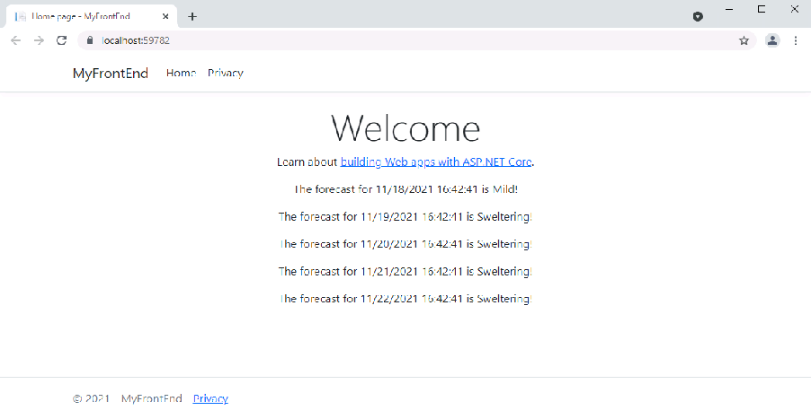
Running locally with Docker Compose and Visual Studio, you can set breakpoints and debug into the application. For production scenarios, it's recommended to host your application in Kubernetes. This book includes an accompanying reference application, [eShopOnDapr](https://github.com/dotnet-architecture/eShopOnDapr), that contains scripts to deploy to Kubernetes.
To learn more about the Dapr service invocation building block used in this walkthrough, refer to [chapter 6](#the-dapr-service-invocation-building-blo).
In this chapter, you had an opportunity to test drive Dapr. Using the Dapr .NET SDK, you saw how Dapr integrates with the .NET application platform.
The first example was a simple, stateful, .NET Console application that used the Dapr state management building block.
The second example involved a multi-container application running in Docker. By using Visual Studio with Docker Compose, you experienced the familiar F5 debugging experience available across all .NET apps.
You also got a closer look at Dapr component configuration files. They configure the actual infrastructure implementation used by the Dapr building blocks. You can use namespaces and scopes to restrict component access to particular environments and applications.
In the upcoming chapters, you’ll dive deep into the building blocks offered by Dapr.
• Dapr documentation - Getting started
• eShopOnDapr
CHAPTER |
|---|
5
Traffic Control sample application
In the first chapters, you’ve learned about basic Dapr concepts. You saw how Dapr can help you and your team construct distributed applications while reducing architectural and operational complexity. This chapter introduces the sample application that you’ll use to explore the Dapr building blocks. The application targets .NET 7 and uses the latest C# 11 language features.
NoteDownload the sample application code from the Dapr Traffic Control GitHub repo. This repository contains a detailed description on how you can run the sample application on your machine. |
|---|
The Traffic Control sample application simulates a highway traffic control system. Its purpose is to detect speeding vehicles and send the offending driver a fine notice. These systems actually exist in real life and here’s how they work. A set of cameras (one above each lane) is placed at the beginning and end of a highway stretch (say 10 kilometers) without on- or off-ramps. As a vehicle passes underneath a camera, it takes a photograph of the vehicle. Using Optical Character Recognition (OCR) software, it extracts the license number of the vehicle from the photo. Using the entry- and exittimestamp of each vehicle, the system calculates the average speed of that vehicle. If the average speed is above the maximum speed limit for that highway stretch, the system retrieves the driver information and automatically sends a fine notice.
Although the simulation is simple, responsibilities within the system are separated into several microservices. Figure 4.1 shows an overview of the services that are part of the application:
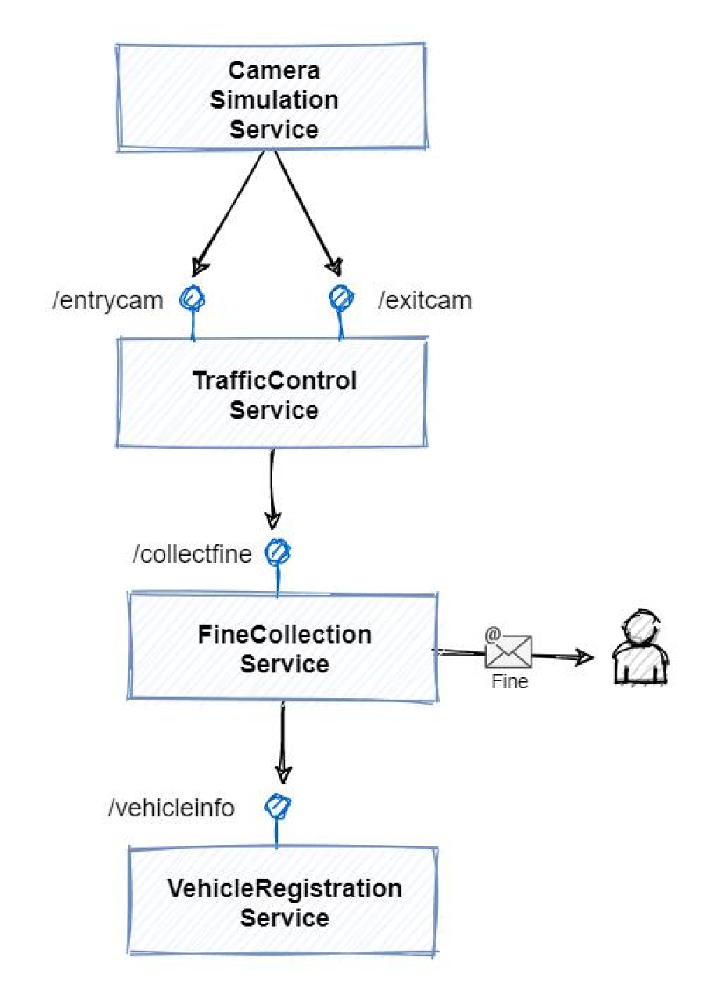
Figure 4-1. The services in the sample application.
• The Camera Simulation is a console application that simulates vehicles and sends messages to the TrafficControl service. Every simulated car invokes both the entry and exit service endpoints.
• The TrafficControl service is an ASP.NET Core Web API application that exposes the /entrycam and /exitcam endpoints. Invoking an endpoint simulates a car passing under one of the entryor exit-cameras respectively. The request message payload simply contains the license plate of the car (no actual OCR is implemented).
• The FineCollection service is an ASP.NET Core Web API application that offers 1 endpoint: /collectfine. Invoking this endpoint will send a fine notice to the driver of the speeding vehicle. The payload of the request contains all the information about the speeding violation.
• The VehicleRegistration service is an ASP.NET Core Web API application that offers 1 endpoint: /vehicleinfo/{licensenumber}. It’s used for obtaining vehicle- and owner-information for a speeding vehicle based on the license number sent in the URL (for example, /vehicleinfo/RV752-S).
The sequence diagram in figure 4.2 shows the simulation flow:
Figure 4-2. Sequence diagram of the simulation flow.
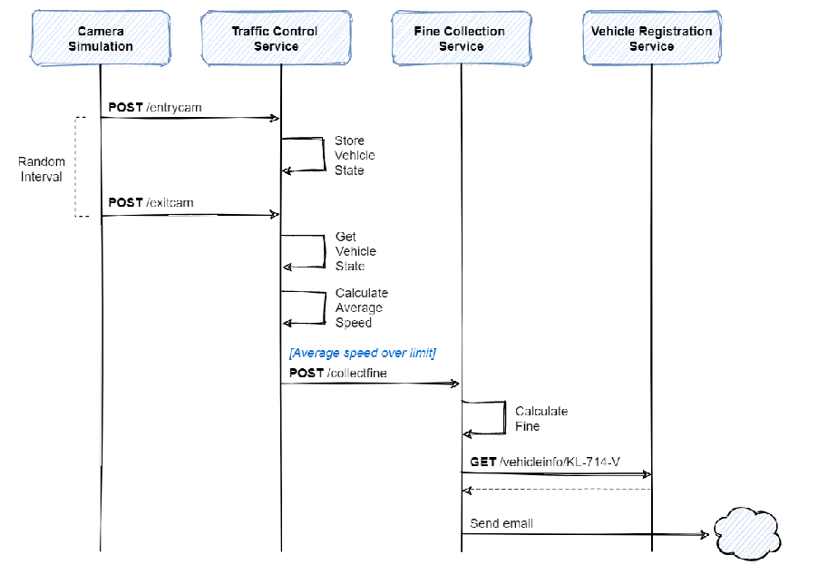
The biggest challenge is that the call-chain will break if one of the services is off-line. Decoupling services by replacing direct calls with asynchronous messaging would solve this issue. Asynchronous messaging is typically implemented with a message broker like RabbitMQ or Azure Service Bus.
Another drawback is that the vehicle state for every vehicle is stored in memory in the TrafficControl service. This state is lost when the service is restarted after an update or a crash. To increase system durability, state should be stored outside the service.
Figure 4-3. Traffic Control application with Dapr building blocks.
1. Service invocation The Dapr service invocation building block handles request/response communication between the FineCollectionService and the VehicleRegistrationService. Because the call is a query to retrieve required data to complete the operation, a synchronous call is acceptable here. The service invocation building block provides service discovery. The FineCollection service no longer has to know where the VehicleRegistration service lives. It also implements automatic retries if the VehicleRegistration service is off-line.
2. Publish & subscribe The publish and subscribe building block handles asynchronous messaging for sending speeding violations from the TrafficControl service to the FineCollectionService. This implementation decouples the TrafficControl and FineCollection service. If the FineCollectionService were to become temporarily unavailable, data would accumulate in the queue and resume processing at a later time. RabbitMQ is the current message broker that transports messages from the producers to the consumers. As the Dapr pub/sub building block abstracts the message broker, developers don’t need to learn the details of the RabbitMQ client library. Switching to another message broker doesn’t require code changes, only configuration.
3. State management The TrafficControl service uses the state management building block to persist vehicle state outside of the service in a Redis cache. As with pub/sub, developers don’t need to learn Redis specific APIs. Switching to another data store requires no code changes.
4. Output binding The FineCollection service sends fines to the owners of speeding vehicles by email. The Dapr output binding for SMTP abstracts the email transmission using the SMTP protocol.
5. Input binding The CameraSimulation sends messages with simulated car info to the TrafficControl service using the MQTT protocol. It uses a .NET MQTT library for sending messages to Mosquitto - a lightweight MQTT broker. The TrafficControl service uses the Dapr input binding for MQTT to subscribe to the MQTT broker and receive messages.
6. Secrets management The FineCollectionService needs credentials for connecting to the smtp server and a license-key for a fine calculator component it uses internally. It uses the secrets management building block to obtain the credentials and the license-key.
7. Actors The TrafficControlService has an alternative implementation based on Dapr actors. In this implementation, the TrafficControl service creates a new actor for every vehicle that is registered by the entry camera. The license number of the vehicle forms the unique actor Id. The actor encapsulates the vehicle state, which it persists in the Redis cache. When a vehicle is registered by the exit camera, it invokes the actor. The actor then calculate the average speed and possibly issue a speeding violation.
Figure 4.4 shows a sequence diagram of the flow of the simulation with all the Dapr building blocks in place:
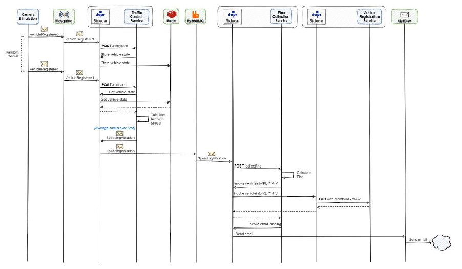
Figure 4-4. Sequence diagram of simulation flow with Dapr building blocks.
The rest of this book features a chapter for each of the Dapr building blocks. Each chapter explains in detail how the building block works, its configuration, and how to use it. Each chapter explains how the Traffic Control sample application uses the building block.
The Traffic Control sample application can run in self-hosted mode or in Kubernetes.
The sample repository contains PowerShell scripts to start the infrastructure services (Redis, RabbitMQ, and Mosquitto) as Docker containers on your machine. They’re located in the src/Infrastructure folder. For every application service in the solution, the repository contains a separate folder. Each of these folders contains a start-selfhosted.ps1 PowerShell script to start the service with Dapr.
The src/k8s folder in the sample repository contains the Kubernetes manifest files to run the application (including the infrastructure services) with Dapr in Kubernetes. This folder also contains a start.ps1 and stop.ps1 PowerShell script to start and stop the solution in Kubernetes. All services will run in the dapr-trafficcontrol namespace.
The Traffic Control sample application is a microservices application that simulates a highway speed trap.
The application uses several Dapr building blocks to make it robust and cloud-native. The domain is kept simple to keep the focus on Dapr.
The application will be used in the following chapters that focus on Dapr building block.
• Dapr Traffic Control Sample
CHAPTER |
|---|
6
The Dapr state management building block
Distributed applications are composed of independent services. While each service should be stateless, some services must track state to complete business operations. Consider a shopping basket service for an e-Commerce site. If the service can’t track state, the customer could lose the shopping basket content by leaving the website, resulting in a lost sale and an unhappy customer experience. For these scenarios, state needs to be persisted to a distributed state store. The Dapr state management building block simplifies state tracking and offers advanced features across various data stores. To try out the state management building block, have a look at the counter application sample in chapter 3.
Tracking state in a distributed application can be challenging. For example:
• The application may require different types of data stores.
• Different consistency levels may be required for accessing and updating data.
• Multiple users may update data at the same time, requiring conflict resolution.
• Services must retry any short-lived transient errors that occur while interacting with the data store.
The Dapr state management building block addresses these challenges. It streamlines tracking state without dependencies or a learning curve on third-party storage SDKs.
ImportantDapr state management offers a key/value API. The feature doesn’t support relational or graph data storage. |
|---|
The application interacts with a Dapr sidecar to store and retrieve key/value data. Under the hood, the sidecar API consumes a configurable state store component to persist data. Developers can choose from a growing collection of supported state stores that include Azure Cosmos DB, SQL Server, and Cassandra.
The API can be called with either HTTP or gRPC. Use the following URL to call the HTTP API:
http://localhost: |
|---|
•
•
Figure 5-1 shows how a Dapr-enabled shopping basket service stores a key/value pair using the Dapr state store component named statestore.
:::image type=“content” source=“./media/state-management/state-management-flow.png” alttext=“Diagram of storing a key/value pair in a Dapr state store.”:::
Figure 5-1. Storing a key/value pair in a Dapr state store. Note the steps in the previous figure:
1. The basket service calls the state management API on the Dapr sidecar. The body of the request encloses a JSON array that can contain multiple key/value pairs.
2. The Dapr sidecar determines the state store based on the component configuration file. In this case, it’s a Redis cache state store.
3. The sidecar persists the data to the Redis cache.
Retrieving the stored data is a similar API call. In the example below, a curl command retrieves the data by calling the Dapr sidecar API:
curl http://localhost:3500/v1.0/state/statestore/basket1 |
|---|
The command returns the stored state in the response body:
{ "items": [ { "itemId": "DaprHoodie", "quantity": 1 } ], "customerId": 1 } |
|---|
The following sections explain how to use the more advanced features of the state management building block.
The CAP theorem is a set of principles that apply to distributed systems that store state. Figure 5-2 shows the three properties of the CAP theorem.
Figure 5-2. The CAP theorem.
The theorem states that distributed data systems offer a trade-off between consistency, availability, and partition tolerance. And, that any datastore can only guarantee two of the three properties:
• Consistency (C). Every node in the cluster responds with the most recent data, even if the system must block the request until all replicas update. If you query a “consistent system” for an item that is currently updating, you won’t get a response until all replicas successfully update. However, you’ll always receive the most current data.
• Availability (A). Every node returns an immediate response, even if that response isn’t the most recent data. If you query an “available system” for an item that is updating, you’ll get the best possible answer the service can provide at that moment.
• Partition Tolerance (P). Guarantees the system continues to operate even if a replicated data node fails or loses connectivity with other replicated data nodes.
Distributed applications must handle the P property. As services communicate among each other with network calls, network disruptions (P) will occur. With that in mind, distributed applications must either be AP or CP.
AP applications choose availability over consistency. Dapr supports this choice with its eventual consistency strategy. Consider an underlying data store, such as Azure CosmosDB, which stores redundant data on multiple replicas. With eventual consistency, the state store writes the update to one replica and completes the write request with the client. After this time, the store will asynchronously update its replicas. Read requests can return data from any of the replicas, including those replicas that haven’t yet received the latest update.
CP applications choose consistency over availability. Dapr supports this choice with its strong consistency strategy. In this scenario, the state store will synchronously update all (or, in some cases, a quorum of) required replicas before completing the write request. Read operations will return the most up-to-date data consistently across replicas.
The consistency level for a state operation is specified by attaching a consistency hint to the operation. The following curl command writes a Hello=World key/value pair to a state store using a strong consistency hint:
curl -X POST http://localhost:3500/v1.0/state/
"key": "Hello", "value": "World", "options": { "consistency": "strong" } } ]' |
|---|
ImportantIt is up to the Dapr state store component to fulfill the consistency hint attached to the operation. Not all data stores support both consistency levels. If no consistency hint is set, the default behavior is eventual. |
|---|
In a multi-user application, there’s a chance that multiple users will update the same data concurrently (at the same time). Dapr supports optimistic concurrency control (OCC) to manage conflicts. OCC is based on an assumption that update conflicts are uncommon because users work on different parts of the data. It’s more efficient to assume an update will succeed and retry if it doesn’t. The alternative, implementing pessimistic locking, can affect performance with long-running locking causing data contention.
Dapr supports optimistic concurrency control (OCC) using ETags. An ETag is a value associated with a specific version of a stored key/value pair. Each time a key/value pair updates, the ETag value updates as well. When a client retrieves a key/value pair, the response includes the current ETag value. When a client updates or deletes a key/value pair, it must send that ETag value back in the request body. If another client has updated the data in the meantime, the ETags won’t match and the request will fail.
At this point, the client must retrieve the updated data, make the change again, and resubmit the update. This strategy is called first-write-wins.
Dapr also supports a last-write-wins strategy. With this approach, the client doesn’t attach an ETag to the write request. The state store component will always allow the update, even if the underlying value has changed during the session. Last-write-wins is useful for high-throughput write scenarios with low data contention. As well, overwriting an occasional user update can be tolerated.
Dapr can write multi-item changes to a data store as a single operation implemented as a transaction. This functionality is only available for data stores that support ACID transactions. At the time of this writing, these stores include Redis, MongoDB, PostgreSQL, SQL Server, and Azure CosmosDB.
In the example below, a multi-item operation is sent to the state store in a single transaction. All operations must succeed for the transaction to commit. If one or more of the operations fail, the entire transaction rolls back.
curl -X POST http://localhost:3500/v1.0/state/
-H "Content-Type: application/json" \
-d '{ "operations": [
{
"operation": "upsert", "request": { "key": "Key1", "value": "Value1" }
}, {
"operation": "delete", "request": { "key": "Key2" }
}
] }'
For data stores that don’t support transactions, multiple keys can still be sent as a single request. The following example shows a bulk write operation:
curl -X POST http://localhost:3500/v1.0/state/
]' |
|---|
For bulk operations, Dapr will submit each key/value pair update as a separate request to the data store.
The Dapr .NET SDK provides language-specific support for the .NET platform. Developers can use the DaprClient class introduced in chapter 3 to read and write data. The following example shows how to use the DaprClient.GetStateAsync
var weatherForecast = await daprClient.GetStateAsync |
|---|
If the state store contains no data for key AMS, the result will be default(WeatherForecast). To write data to the data store, use the DaprClient.SaveStateAsync
daprClient.SaveStateAsync("statestore", "AMS", weatherForecast); |
|---|
The example uses the last-write-wins strategy as an ETag value isn’t passed to the state store component. To use optimistic concurrency control (OCC) with a first-write-wins strategy, first retrieve the current ETag using the DaprClient.GetStateAndETagAsync method. Then write the updated value and pass along the retrieved ETag using the DaprClient.TrySaveStateAsync method.
var (weatherForecast, etag) = await daprClient.GetStateAndETagAsync // ... make some changes to the retrieved weather forecast var result = await daprClient.TrySaveStateAsync("statestore", city, weatherForecast, etag); |
|---|
The DaprClient.TrySaveStateAsync method fails when the data (and associated ETag) has been changed in the state store after the data was retrieved. The method returns a boolean value to indicate whether the call succeeded. A strategy to handle the failure is to simply reload the updated data from the state store, make the change again, and resubmit the update.
If you always want a write to succeed regardless of other changes to the data, use the last-write-wins strategy.
The SDK provides other methods to retrieve data in bulk, delete data, and execute transactions. For more information, see the Dapr .NET SDK repository.
Dapr also supports ASP.NET Core, a cross-platform framework for building modern cloud-based web applications. The Dapr SDK integrates state management capabilities directly into the ASP.NET Core model binding capabilities. Configuration is simple. In the Program.cs file, call the following extension method on the WebApplication builder:
var builder = WebApplication.CreateBuilder(args); builder.Services.AddControllers().AddDapr(); |
|---|
Once configured, Dapr can inject a key/value pair directly into a controller action using the ASP.NET Core FromState attribute. Referencing the DaprClient object is no longer necessary. The next example shows a Web API that returns the weather forecast for a given city:
[HttpGet("{city}")] public ActionResult if (forecast.Value == null) { return NotFound(); } return forecast.Value; } |
|---|
In the example, the controller loads the weather forecast using the FromState attribute. The first attribute parameter is the state store, statestore. The second attribute parameter, city, is the name of the route template variable to get the state key. If you omit the second parameter, the name of the bound method parameter (forecast) is used to look up the route template variable.
The StateEntry class contains properties for all the information that is retrieved for a single key/value pair: StoreName, Key, Value, and ETag. The ETag is useful for implementing optimistic concurrency control (OCC) strategy. The class also provides methods to delete or update retrieved key/value data without requiring a DaprClient instance. In the next example, the TrySaveAsync method is used to update the retrieved weather forecast using OCC.
[HttpPut("{city}")] public async Task Put(WeatherForecast updatedForecast, [FromState("statestore", "city")] StateEntry // update cached current forecast with updated forecast passed into service endpoint currentForecast.Value = updatedForecast; // update state store var success = await currentForecast.TrySaveAsync(); // ... check result } |
|---|
At the time of this writing, Dapr provides support for the following transactional state stores:
• Azure CosmosDB
• Azure SQL Server
• CockroachDB
• In Memory
• MongoDB
• MySQL
• Oracle Database
• PostgreSQL
• Redis
• RethinkDB
Dapr also includes support for state stores that support CRUD operations, but not transactional capabilities:
• Aerospike
• Apache Cassandra
• AWS DynamoDB
• Azure Blob Storage
• Azure Table Storage
• Couchbase
• GCP Firestore
• Hashicorp Consul
• Hazelcast
• JetStream KV
• Memcached
• Oracle Object Storage
• Zookeeper
When initialized for local, self-hosted development, Dapr registers Redis as the default state store. Here’s an example of the default state store configuration. Note the default name, statestore:
apiVersion: dapr.io/v1alpha1 kind: Component metadata: name: statestore spec: type: state.redis version: v1 metadata:
|
|---|
[!NOTE] Many state stores can be registered to a single application each with a different name. The Redis state store requires redisHost and redisPassword metadata to connect to the Redis instance. In the example above, the Redis password (which is an empty string by default) is stored as a plain string. The best practice is to avoid clear-text strings and always use secret references. To learn more about secret management, see chapter 10. The other metadata field, actorStateStore, indicates whether the state store can be consumed by the actors building block.
State store components enable different strategies to store key/value pairs in the underlying store. Recall the earlier example of a shopping basket service storing items a customer wishes to purchase:
curl -X POST http://localhost:3500/v1.0/state/statestore \
"customerId": 1, "items": [ { "itemId": "DaprHoodie", "quantity": 1 } ] } }]' |
|---|
Using the Redis Console tool, look inside the Redis cache to see how the Redis state store component persisted the data:
127.0.0.1:6379> KEYS * 1) "basketservice||basket1" 127.0.0.1:6379> HGETALL basketservice||basket1
|
|---|
The output shows the full Redis key for the data as basketservice||basket1. By default, Dapr uses the application id of the Dapr instance (basketservice) as a prefix for the key. This naming convention enables multiple Dapr instances to share the same data store without key name collisions. For the developer, it’s critical always to specify the same application id when running the application with Dapr. If omitted, Dapr will generate a unique application ID. If the application id changes, the application can no longer access the state stored with the previous key prefix.
That said, it’s possible to configure a constant value for the key prefix in the keyPrefix metadata field in the state store component file. Consider the following example:
spec: metadata:
|
|---|
A constant key prefix enables the state store to be accessed across multiple Dapr applications. What’s more, setting the keyPrefix to none omits the prefix completely.
In the Dapr Traffic Control sample app, the TrafficControl service uses the Dapr state management building block to persist the entry and exit timestamps of each passing vehicle. Figure 5-3 shows the conceptual architecture of the Dapr Traffic Control sample application. The Dapr state management building block is used in flows marked with number 3 in the diagram:
:::image type=“content” source=“./media/state-management/dapr-solution-state-management.png” alt-text=“Conceptual architecture of the Dapr Traffic Control sample application.”:::
Figure 5-3. Conceptual architecture of the Dapr Traffic Control sample application.
Entry and exit event logic is handled by the TrafficController class, an ordinary ASP.NET Controller. The TrafficController.VehicleEntry method accepts an incoming VehicleRegistered message and saves the enclosed vehicle state:
// store vehicle state var vehicleState = new VehicleState { LicenseNumber = msg.LicenseNumber, EntryTimestamp = msg.Timestamp }; await _vehicleStateRepository.SaveVehicleStateAsync(vehicleState); |
|---|
In the preceding code snippet, the abstraction _vehicleStateRepository is responsible for saving state to the data store. Its concrete implementation, DaprVehicleStateRepository, is shown below:
public class DaprVehicleStateRepository : IVehicleStateRepository { private const string DAPR_STORE_NAME = "statestore"; private readonly DaprClient _daprClient; public DaprVehicleStateRepository(DaprClient daprClient) { _daprClient = daprClient; } public async Task SaveVehicleStateAsync(VehicleState vehicleState) { await _daprClient.SaveStateAsync } public async Task return await _daprClient.GetStateAsync DAPR_STORE_NAME, licenseNumber); } } |
|---|
As the preceding code snippet shows, the implementation of the DaprVehicleStateRepository class is pretty straightforward. The SaveVehicleStateAsync method uses the injected DaprClient object
to save the state to the configured Dapr state store. It uses the vehicle’s license number as the key. The application can retrieve the saved state by calling the GetVehicleStateAsync method.
The TrafficControl service uses Redis as its underlying data store. Looking at the code, you’d never know it. A service consuming the Dapr state management building block doesn’t directly reference any state components. Instead, a Dapr component configuration file specifies the store:
apiVersion: dapr.io/v1alpha1 kind: Component metadata: name: statestore namespace: dapr-trafficcontrol spec: type: state.redis version: v1 metadata:
name: state.redisPassword key: state.redisPassword scopes: - trafficcontrolservice |
|---|
NoteThe component configuration file includes an element secretKeyRef. The application uses it to reference the Redis password value from the Dapr secrets building block. See chapter 10 to learn more about managing secrets with Dapr. |
|---|
The type element in the configuration, state.redis instructs the building block to manage state with Dapr Redis component.
The scopes element in the configuration constrains application access to the state store component. Only the TrafficControl service can access the state store.
The Dapr state management building block offers an API for storing key/value data across various data stores. The API provides support for:
• Bulk operations
• Strong and eventual consistency
• Optimistic concurrency control
• Multi-item transactions
The .NET SDK provides language-specific support for .NET and ASP.NET Core. Model binding integration simplifies accessing and updating state from ASP.NET Core controller action methods.
In the Dapr Traffic Control sample application, the benefits of using Dapr state management are clear:
1. It abstracts away the complexity of using third-party SDKs, such as StackExchange.Redis.
2. Replacing the underlying Redis cache with a different type of data store only requires changes to the component configuration file.
• Dapr supported state stores
CHAPTER |
|---|
7
The Dapr service invocation building block
Across a distributed system, one service often needs to communicate with another to complete a business operation. The Dapr service invocation building block can help streamline the communication between services.
Making calls between services in a distributed application may appear easy, but there are many challenges involved. For example:
• Where the other services are located.
• How to call a service securely, given the service address.
• How to handle retries when short-lived transient errors occur.
Lastly, as distributed applications compose many different services, capturing insights across service call graphs are critical to diagnosing production issues.
The service invocation building block addresses these challenges by using a Dapr sidecar as a reverse proxy for your service.
Let’s start with an example. Consider two services, “Service A” and “Service B”. Service A needs to call the catalog/items API on Service B. While Service A could take a dependency on Service B and make a direct call to it, Service A instead invokes the service invocation API on the Dapr sidecar. Figure 6-1 shows the operation.
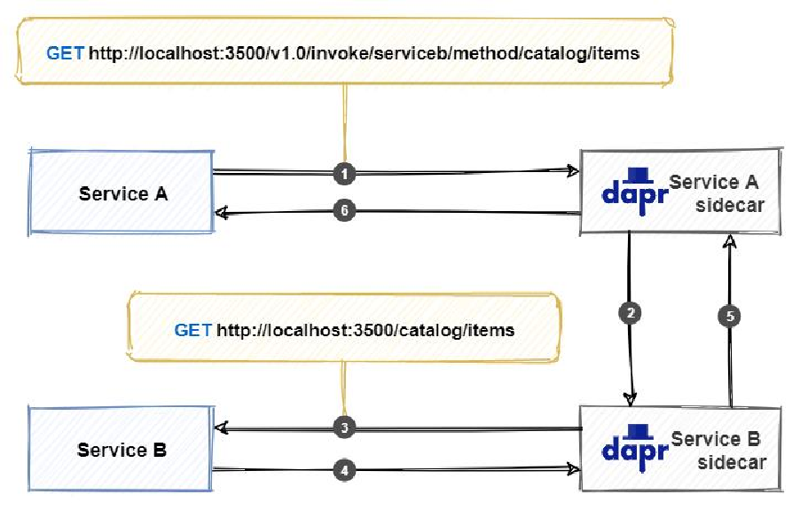
Figure 6-1. How Dapr service invocation works. Note the steps from the previous figure:
1. Service A makes a call to the catalog/items endpoint in Service B by invoking the service invocation API on the Service A sidecar.
[!NOTE] The sidecar uses a pluggable name resolution component to resolve the address of Service B. In self-hosted mode, Dapr uses mDNS to find it. When running in Kubernetes mode, the Kubernetes DNS service determines the address.
2. The Service A sidecar forwards the request to the Service B sidecar.
3. The Service B sidecar makes the actual catalog/items request against the Service B API.
4. Service B executes the request and returns a response back to its sidecar.
5. The Service B sidecar forwards the response back to the Service A sidecar.
6. The Service A sidecar returns the response back to Service A. Because the calls flow through sidecars, Dapr can inject some useful cross-cutting behaviors:
• Automatically retry calls upon failure.
• Make calls between services secure with mutual (mTLS) authentication, including automatic certificate rollover.
• Control what operations clients can do using access control policies.
• Capture traces and metrics for all calls between services to provide insights and diagnostics.
Any application can invoke a Dapr sidecar by using the native invoke API built into Dapr. The API can be called with either HTTP or gRPC. Use the following URL to call the HTTP API:
http://localhost: |
|---|
•
•
•
curl http://localhost:3500/v1.0/invoke/serviceb/method/catalog/items |
|---|
NoteThe Dapr APIs enable any application stack that supports HTTP or gRPC to use Dapr building blocks. Therefore, the service invocation building block can act as a bridge between protocols. Services can communicate with each other using HTTP, gRPC or a combination of both. |
|---|
In the next section, you’ll learn how to use the .NET SDK to simplify service invocation calls.
The Dapr .NET SDK provides .NET developers with an intuitive and language-specific way to interact with Dapr. The SDK offers developers three ways of making remote service invocation calls:
1. Invoke HTTP services using HttpClient
2. Invoke HTTP services using DaprClient
3. Invoke gRPC services using DaprClient
The preferred way to call an HTTP endpoint is to use Dapr’s rich integration with HttpClient. The following example submits an order by calling the submit method of the orderservice application:
var httpClient = DaprClient.CreateInvokeHttpClient(); await httpClient.PostAsJsonAsync("http://orderservice/submit", order); |
|---|
In the example, DaprClient.CreateInvokeHttpClient returns an HttpClient instance that is used to perform Dapr service invocation. The returned HttpClient uses a special Dapr message handler that rewrites URIs of outgoing requests. The host name is interpreted as the application ID of the service to call. The rewritten request that’s actually being called is:
http://127.0.0.1:3500/v1/invoke/orderservice/method/submit |
|---|
This example uses the default value for the Dapr HTTP endpoint, which is http://127.0.0.1:
Alternatively, you can configure a custom endpoint in the call to DaprClient.CreateInvokeHttpClient:
var httpClient = DaprClient.CreateInvokeHttpClient(daprEndpoint: "localhost:4000"); |
|---|
You can also directly set the base address by specifying the application ID. Doing so enables relative URIs when making a call:
var httpClient = DaprClient.CreateInvokeHttpClient("orderservice"); await httpClient.PostAsJsonAsync("/submit"); |
|---|
The HttpClient object is intended to be long-lived. A single HttpClient instance can be reused for the lifetime of the application. The next scenario demonstrates how an OrderServiceClient class reuses a Dapr HttpClient instance:
var builder = WebApplication.CreateBuilder(args); builder.Services.AddSingleton _ => new OrderServiceClient(DaprClient.CreateInvokeHttpClient("orderservice"))); |
|---|
In the snippet above, the OrderServiceClient is registered as a singleton with the ASP.NET Core dependency injection system. An implementation factory creates a new HttpClient instance by calling DaprClient.CreateInvokeHttpClient. It then uses the newly created HttpClient to instantiate the OrderServiceClient object. By registering the OrderServiceClient as a singleton, it will be reused for the lifetime of the application.
The OrderServiceClient itself has no Dapr-specific code. Even though Dapr service invocation is used under the hood, you can treat the Dapr HttpClient like any other HttpClient:
public class OrderServiceClient : IOrderServiceClient { private readonly HttpClient _httpClient; public OrderServiceClient(HttpClient httpClient) { _httpClient = httpClient ?? throw new ArgumentNullException(nameof(httpClient)); } public async Task SubmitOrder(Order order) { var response = await _httpClient.PostAsJsonAsync("submit", order); response.EnsureSuccessStatusCode(); } } |
|---|
Using the HttpClient class with Dapr service invocation has many benefits:
• HttpClient is a well-known class that many developers already use in their code. Using HttpClient for Dapr service invocation allows developers to reuse their existing skills.
• HttpClient supports advanced scenarios, such as custom headers, and full control over request and response messages.
• In .NET 5, HttpClient supports automatic serialization and deserialization using System.Text.Json.
• HttpClient integrates with many existing frameworks and libraries, such as Refit, RestSharp, and Polly.
While HttpClient is the preferred way to invoke services using HTTP semantics, you can also use the DaprClient.InvokeMethodAsync family of methods. The following example submits an order by calling the submit method of the orderservice application:
var daprClient = new DaprClientBuilder().Build(); try { var confirmation = await daprClient.InvokeMethodAsync } catch (InvocationException ex) { // Handle error } |
|---|
The third argument, an order object, is serialized internally (with System.Text.JsonSerializer) and sent as the request payload. The .NET SDK takes care of the call to the sidecar. It also deserializes the response to an OrderConfirmation object. Because no HTTP method is specified, the request is executed as an HTTP POST.
The next example demonstrates how you can make an HTTP GET request by specifying the HttpMethod:
var catalogItems = await daprClient.InvokeMethodAsync |
|---|
For some scenarios, you may require more control over the request message. For example, when you need to specify request headers, or you want to use a custom serializer for the payload. DaprClient.CreateInvokeMethodRequest creates an HttpRequestMessage. The following example demonstrates how to add an HTTP authorization header to a request message:
var request = daprClient.CreateInvokeMethodRequest("orderservice", "submit", order); request.Headers.Authorization = new AuthenticationHeaderValue("bearer", token); |
|---|
The HttpRequestMessage now has the following properties set:
• Url = http://127.0.0.1:3500/v1.0/invoke/orderservice/method/submit
• HttpMethod = POST
• Content = JsonContent object containing the JSON-serialized order
• Headers.Authorization = “bearer
var orderConfirmation = await daprClient.InvokeMethodAsync |
|---|
DaprClient.InvokeMethodAsync deserializes the response to an OrderConfirmation object if the request is successful. Alternatively, you can use DaprClient.InvokeMethodWithResponseAsync to get full access to the underlying HttpResponseMessage:
var response = await daprClient.InvokeMethodWithResponseAsync(request); response.EnsureSuccessStatusCode(); var orderConfirmation = response.Content.ReadFromJsonAsync |
|---|
NoteFor service invocation calls using HTTP, it’s worth considering using the Dapr HttpClient integration presented in the previous section. Using HttpClient gives you additional benefits such as integration with existing frameworks and libraries. |
|---|
DaprClient provides a family of InvokeMethodGrpcAsync methods for calling gRPC endpoints. The main difference with the HTTP methods is the use of a Protobuf serializer instead of JSON. The following example invokes the submitOrder method of the orderservice over gRPC.
var daprClient = new DaprClientBuilder().Build(); try { var confirmation = await daprClient.InvokeMethodGrpcAsync // Handle error } |
|---|
In the example above, DaprClient serializes the given order object using Protobuf and uses the result as the gRPC request body. Likewise, the response body is Protobuf deserialized and returned to the caller. Protobuf typically provides better performance than the JSON payloads used in HTTP service invocation.
At the time of writing, Dapr provides support for the following name resolution components:
• mDNS (default when running self-hosted)
• Kubernetes Name Resolution (default when running in Kubernetes)
• HashiCorp Consul
To use a non-default name resolution component, add a nameResolution spec to the application’s Dapr configuration file. Here’s an example of a Dapr configuration file that enables HashiCorp Consul name resolution:
apiVersion: dapr.io/v1alpha1 kind: Configuration metadata:
name: dapr-config spec:
nameResolution: component: "consul" configuration:
selfRegister: true
In Dapr Traffic Control sample app, the FineCollection service uses the Dapr service invocation building block to retrieve vehicle and owner information from the VehicleRegistration service. Figure 6-2 shows the conceptual architecture of the Dapr Traffic Control sample application. The Dapr service invocation building block is used in flows marked with number 1 in the diagram:
:::image type=“content” source=“./media/service-invocation/dapr-solution-service-invocation.png” alt-text=“Conceptual architecture of the Dapr Traffic Control sample application.”:::
Figure 6-2. Conceptual architecture of the Dapr Traffic Control sample application.
Information is retrieved by the ASP.NET CollectionController class in the FineCollection service. The CollectFine method expects an incoming SpeedingViolation parameter. It invokes a Dapr service invocation building block to call to the VehicleRegistration service. The code snippet is presented below.
:::{custom-style=CodeBox} ```csharp [Topic(“pubsub”, “speedingviolations”)] [Route(“collectfine”)] [HttpPost] public async Task CollectFine(SpeedingViolation speedingViolation, [FromServices] DaprClient daprClient) { // …
// get owner info (Dapr service invocation) var vehicleInfo = _vehicleRegistrationService.GetVehicleInfo(speedingViolation.VehicleId).Result;
// ... } ``` ::: The code uses a proxy of type VehicleRegistrationService to call the VehicleRegistration service. ASP.NET Core injects an instance of the service proxy using constructor injection: :::{custom-style=CodeBox} csharp public CollectionController( ILogger
public async Task
return await _httpClient.GetFromJsonAsync
$"vehicleinfo/{licenseNumber}");
} } ``` ::: The code doesn’t depend on any Dapr classes directly. It instead leverages the Dapr ASP.NET Core integration as described in the Invoke HTTP services using HttpClient section of this module. The following code in the ConfigureService method of the Startup class registers the VehicleRegistrationService proxy:
var builder = WebApplication.CreateBuilder(args); builder.Services.AddSingleton new VehicleRegistrationService(DaprClient.CreateInvokeHttpClient( "vehicleregistrationservice", $"http://localhost:{daprHttpPort}" ))); |
|---|
The DaprClient.CreateInvokeHttpClient creates an HttpClient instance that calls the VehicleRegistration service using the service invocation building block under the covers. It expects both the Dapr app-id of the target service and the URL of its Dapr sidecar. At start time, the daprHttpPort argument contains the port number used for HTTP communication with the Dapr sidecar. Using Dapr service invocation in the Traffic Control sample application provides several benefits:
1. Decouples the location of the target service.
2. Adds resiliency with automatic retry features.
3. Ability to reuse an existing HttpClient based proxy (offered by the ASP.NET Core integration).
In this chapter, you learned about the service invocation building block. You saw how to invoke remote methods both by making direct HTTP calls to the Dapr sidecar, and by using the Dapr .NET SDK.
The Dapr .NET SDK provides multiple ways to invoke remote methods. HttpClient support is great for developers wanting to reuse existing skills and is compatible with many existing frameworks and libraries. DaprClient offers support for directly using the Dapr service invocation API using either HTTP or gRPC semantics.
• Dapr service invocation building block
• Monitoring distributed cloud-native applications
CHAPTER |
|---|
8
The Dapr publish & subscribe building block
The Publish-Subscribe pattern (often referred to as “pub/sub”) is a well-known and widely used messaging pattern. Architects commonly embrace it in distributed applications. However, the plumbing to implement it can be complex. There are often subtle feature differences across different messaging products. Dapr offers a building block that significantly simplifies implementing pub/sub functionality.
The primary advantage of the Publish-Subscribe pattern is loose coupling, sometimes referred to as temporal decoupling. The pattern decouples services that send messages (the publishers) from services that consume messages (the subscribers). Both publishers and subscribers are unaware of each other - both are dependent on a centralized message broker that distributes the messages.
Figure 7-1 shows the high-level architecture of the pub/sub pattern.
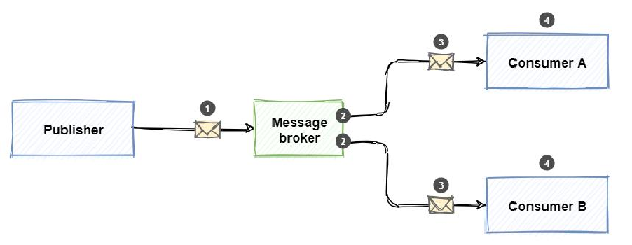
Figure 7-1. The pub/sub pattern. From the previous figure, note the steps of the pattern:
1. Publishers send messages to the message broker.
2. Subscribers bind to a subscription on the message broker.
3. The message broker forwards a copy of the message to interested subscriptions.
4. Subscribers consume messages from their subscriptions.
Most message brokers encapsulate a queueing mechanism that can persist messages once received. With it, the message broker guarantees durability by storing the message. Subscribers don’t need to be immediately available or even online when a publisher sends a message. Once available, the subscriber receives and processes the message. Dapr guarantees At-Least-Once semantics for message delivery. Once a message is published, it will be delivered at least once to any interested subscriber.
TipIf your service can only process a message once, you’ll need to provide an idempotency check to ensure that the same message is not processed multiple times. While such logic can be coded, some message brokers, such as Azure Service Bus, provide built-in duplicate detection messaging capabilities. |
|---|
There are several message broker products available - both commercially and open-source. Each has advantages and drawbacks. Your job is to match your system requirements to the appropriate broker. Once selected, it’s a best practice to decouple your application from message broker plumbing. You achieve this functionality by wrapping the broker inside an abstraction. The abstraction encapsulates the message plumbing and exposes generic pub/sub operations to your code. Your code communicates with the abstraction, not the actual message broker. While a wise decision, you’ll have to write and maintain the abstraction and its underlying implementation. This approach requires custom code that can be complex, repetitive, and error-prone.
The Dapr publish & subscribe building block provides the messaging abstraction and implementation out-of-the-box. The custom code you would have had to write is prebuilt and encapsulated inside the Dapr building block. You bind to it and consume it. Instead of writing messaging plumbing code, you and your team focus on creating business functionality that adds value to your customers.
The Dapr publish & subscribe building block provides a platform-agnostic API framework to send and receive messages. Your services publish messages to a named topic. Your services subscribe to a topic to consume messages.
The service calls the pub/sub API on the Dapr sidecar. The sidecar then makes calls into a pre-defined Dapr pub/sub component that encapsulates a specific message broker product. Figure 7-2 shows the Dapr pub/sub messaging stack.
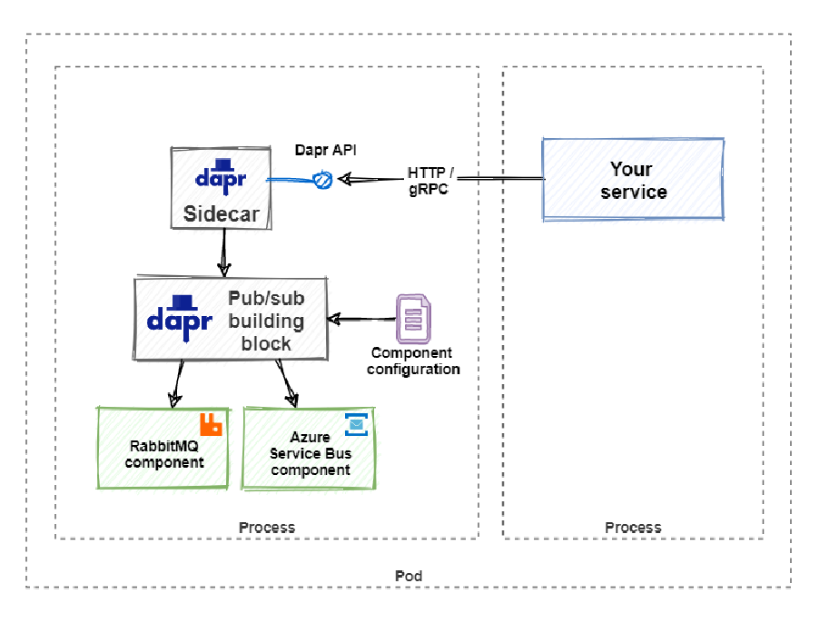
Figure 7-2. The Dapr pub/sub stack. The Dapr publish & subscribe building block can be invoked in many ways.
At the lowest level, any programming platform can invoke the building block over HTTP or gRPC using the Dapr native API. To publish a message, you make the following API call:
http://localhost: |
|---|
There are several Dapr specific URL segments in the above call:
•
•
•
curl -X POST http://localhost:3500/v1.0/publish/pubsub/newOrder \
|
|---|
You receive messages by subscribing to a topic. At startup, the Dapr runtime will call the application on a well-known endpoint to identify and create the required subscriptions:
http://localhost: |
|---|
•
You can implement this endpoint yourself. But Dapr provides more intuitive ways of implementing it. We’ll address this functionality later in this chapter.
The response from the call contains a list of topics to which the applications will subscribe. Each includes an endpoint to call when the topic receives a message. Here’s an example of a response:
[ { "pubsubname": "pubsub", "topic": "newOrder", "route": "/orders" }, { "pubsubname": "pubsub", "topic": "newProduct", "route": "/productCatalog/products" } ] |
|---|
In the JSON response, you can see the application wants to subscribe to topics newOrder and newProduct. It registers the endpoints /orders and /productCatalog/products for each, respectively. For both subscriptions, the application is binding to the Dapr component named pubsub.
Figure 7-3 presents the flow of the example.
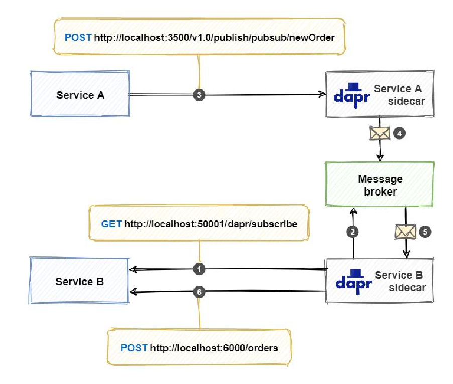
Figure 7-3. Pub/sub flow with Dapr. From the previous figure, note the flow:
1. The Dapr sidecar for Service B calls the /dapr/subscribe endpoint from Service B (the consumer). The service responds with the subscriptions it wants to create.
2. The Dapr sidecar for Service B creates the requested subscriptions on the message broker.
3. Service A publishes a message at the /v1.0/publish/
4. The Service A sidecar publishes the message to the message broker.
5. The message broker sends a copy of the message to the Service B sidecar.
6. The Service B sidecar calls the endpoint corresponding to the subscription (in this case /orders) on Service B. The service responds with an HTTP status-code 200 OK so the sidecar will consider the message as being handled successfully.
In the example, the message is handled successfully. But if something goes wrong while Service B is handling the request, it can use the response to specify what needs to happen with the message. When it returns an HTTP status-code 404, an error is logged and the message is dropped. With any other status-code than 200 or 404, a warning is logged and the message is retried. Alternatively,
Service B can explicitly specify what needs to happen with the message by including a JSON payload in the body of the response:
{ "status": " |
|---|
Status |
Action |
|---|---|
SUCCESS |
The message is considered as processed successfully and dropped. |
RETRY |
The message is retried. |
DROP |
A warning is logged and the message is dropped. |
Any other status |
The message is retried. |
When scaling out an application that subscribes to a topic, you have to deal with competing consumers. Only one application instance should handle a message sent to the topic. Luckily, Dapr handles that problem. When multiple instances of a service with the same application-id subscribe to a topic, Dapr delivers each message to only one of them.
For .NET Developers, the Dapr .NET SDK provides a more productive way of working with Dapr. The SDK exposes a DaprClient class through which you can directly invoke Dapr functionality. It’s intuitive and easy to use.
To publish a message, the DaprClient exposes a PublishEventAsync method.
var data = new OrderData { orderId = "123456", productId = "67890", amount = 2 }; var daprClient = new DaprClientBuilder().Build(); await daprClient.PublishEventAsync |
|---|
• The first argument pubsub is the name of the Dapr component that provides the message broker implementation. We’ll address components later in this chapter.
• The second argument neworder provides the name of the topic to send the message to.
• The third argument is the payload of the message.
• You can specify the .NET type of the message using the generic type parameter of the method.
To receive messages, you bind an endpoint to a subscription for a registered topic. The AspNetCore library for Dapr makes this trivial. Assume, for example, that you have an existing ASP.NET WebAPI action method entitled CreateOrder:
[HttpPost("/orders")] public async Task |
|---|
ImportantYou must add a reference to the Dapr.AspNetCore NuGet package in your project to consume the Dapr ASP.NET Core integration. |
|---|
To bind this action method to a topic, you decorate it with the Topic attribute:
[Topic("pubsub", "newOrder")] [HttpPost("/orders")] public async Task |
|---|
You specify two key elements with this attribute:
• The Dapr pub/sub component to target (in this case pubsub).
• The topic to subscribe to (in this case newOrder). Dapr then invokes that action method as it receives messages for that topic.
You’ll also need to enable ASP.NET Core to use Dapr. The Dapr .NET SDK provides several extension methods that can be used to do this.
In the Program.cs file, you must call the following extension method on the WebApplication builder to register Dapr:
var builder = WebApplication.CreateBuilder(args); builder.Services.AddControllers().AddDapr(); |
|---|
Appending the AddDapr extension method to the AddControllers extension method registers the necessary services to integrate Dapr into the MVC pipeline. It also registers a DaprClient instance into the dependency injection container, which then can be injected anywhere into your service.
After the WebApplication has been created, you must add the following middleware components to enable Dapr:
var builder = WebApplication.CreateBuilder(args); var app = builder.Build(); app.UseCloudEvents(); app.MapControllers(); app.MapSubscribeHandler(); |
|---|
The call to UseCloudEvents adds CloudEvents middleware into to the ASP.NET Core middleware pipeline. This middleware will unwrap requests that use the CloudEvents structured format, so the receiving method can read the event payload directly.
Note CloudEvents is a standardized messaging format, providing a common way to describe event information across platforms. Dapr embraces CloudEvents. For more information about CloudEvents, see the cloudevents specification. |
|---|
The call to MapSubscribeHandler in the endpoint routing configuration will add a Dapr subscribe endpoint to the application. This endpoint will respond to requests on /dapr/subscribe. When this endpoint is called, it will automatically find all WebAPI action methods decorated with the Topic attribute and instruct Dapr to create subscriptions for them.
Dapr pub/sub components handle the actual transport of the messages. Several are available. Each encapsulates a specific message broker product to implement the pub/sub functionality. At the time of writing, the following pub/sub components were available:
• Apache Kafka
• AWS SNS/SQS
• Azure Event Hubs
• Azure Service Bus
• GCP Pub/Sub
• Hazelcast
• In Memory
• JetStream
• MQTT
• NATS Streaming
• Pulsar
• RabbitMQ
• Redis Streams
NoteThe Azure cloud stack has both messaging functionality (Azure Service Bus) and event streaming (Azure Event Hub) availability. |
|---|
These components are created by the community in a component-contrib repository on GitHub. You’re encouraged to write your own Dapr component for a message broker that isn’t yet supported.
Using a Dapr configuration file, you can specify the pub/sub component(s) to use. This configuration contains several fields. The name field specifies the pub/sub component that you want to use. When sending or receiving a message, you need to specify this name (as you saw earlier in the PublishEventAsync method signature).
Below you see an example of a Dapr configuration file for configuring a RabbitMQ message broker component:
apiVersion: dapr.io/v1alpha1 kind: Component metadata: name: pubsub-rq spec: type: pubsub.rabbitmq version: v1 metadata:
|
|---|
In this example, you can see that you can specify any message broker-specific configuration in the metadata block. In this case, RabbitMQ is configured to create durable queues. But the RabbitMQ component has more configuration options. Each of the components’ configuration will have its own set of possible fields. You can read which fields are available in the documentation of each pub/sub component.
Next to the programmatic way of subscribing to a topic from code, Dapr pub/sub also provides a declarative way of subscribing to a topic. This approach removes the Dapr dependency from the application code. Therefore, it also enables an existing application to subscribe to topics without any changes to the code. The following example shows a Dapr configuration file for configuring a subscription:
apiVersion: dapr.io/v1alpha1 kind: Subscription metadata: name: newOrder-subscription spec: pubsubname: pubsub topic: newOrder route: /orders scopes:
|
|---|
You have to specify several elements with every subscription:
• The name of the Dapr pub/sub component you want to use (in this case pubsub).
• The name of the topic to subscribe to (in this case newOrder).
• The API operation that needs to be called for this topic (in this case /orders).
• The scope can specify which services can publish and subscribe to a topic.
In Dapr Traffic Control sample app, the TrafficControl service uses the Dapr pub/sub building block to send speeding violations to the FineCollection service. Figure 7-4 shows the conceptual architecture
of the Dapr Traffic Control sample application. The Dapr pub/sub building block is used in flows marked with number 2 in the diagram:
:::image type=“content” source=“./media/publish-subscribe/dapr-solution-pub-sub.png” alttext=“Conceptual architecture of the Dapr Traffic Control sample application.”:::
Figure 7-4. Conceptual architecture of the Dapr Traffic Control sample application.
Speeding violations are handled by the CollectionController, an ordinary ASP.NET Core Controller. The CollectionController.CollectFine method subscribes to and handles SpeedingViolation event messages:
[Topic("pubsub", "speedingviolations")] [Route("collectfine")] [HttpPost] public async Task SpeedingViolation speedingViolation, [FromServices] DaprClient daprClient) { // ... } |
|---|
The method is decorated with the Dapr Topic attribute. It specifies that the pub/sub component named pubsub should be used to subscribe to messages sent to the speedingviolations topic.
The TrafficControl service sends speeding violations. Near the end of the VehicleExit method in the TrafficController class, the DaprClient object is used to publish SpeedingViolation messages using the pub/sub building block:
/// ... var speedingViolation = new SpeedingViolation { VehicleId = msg.LicenseNumber, RoadId = _roadId, ViolationInKmh = violation, Timestamp = msg.Timestamp }; // publish speedingviolation (Dapr publish / subscribe) await daprClient.PublishEventAsync("pubsub", "speedingviolations", speedingViolation); /// ... |
|---|
Note how the DaprClient object reduces the call to a single line of code, again, binding to the speedingviolations topic and the Dapr pubsub component.
While the Traffic Control app uses RabbitMQ as the message broker, it never directly references RabbitMQ. Instead, the accompanying Dapr component configuration file named pubsub.yaml in the /dapr/components folder specifies the message broker:
apiVersion: dapr.io/v1alpha1 kind: Component metadata:
name: pubsub namespace: dapr-trafficcontrol
spec: type: pubsub.rabbitmq
version: v1 metadata:
- name: host value: "amqp://localhost:5672"
- name: durable value: "false"
- name: deletedWhenUnused value: "false"
- name: autoAck value: "false"
- name: reconnectWait value: "0"
- name: concurrency value: parallel
scopes:
- trafficcontrolservice
- finecollectionservice
The type element in the configuration, pubsub.rabbitmq instructs the building block to use the Dapr RabbitMQ component.
The scopes element in the configuration constrains application access to the RabbitMQ component. Only the TrafficControl and FineCollection services can consume it.
Using Dapr pub/sub in the Traffic Control sample application offers the following benefits:
1. No infrastructural abstraction of a message broker to maintain.
2. Services are temporally decoupled, which increases robustness.
3. Publisher and subscribers are unaware of each other. This means that additional services could be introduced that will react to speeding violations in the future, without the need to change the TrafficControl service.
The pub/sub pattern helps you decouple services in a distributed application. The Dapr publish & subscribe building block simplifies implementing this behavior in your application.
Through Dapr pub/sub, you can publish messages to a specific topic. As well, the building block will query your service to determine which topic(s) to subscribe to.
You can use Dapr pub/sub natively over HTTP or by using one of the language-specific SDKs, such as the .NET SDK for Dapr. The .NET SDK tightly integrates with the ASP.NET core platform.
With Dapr, you can plug a supported message broker product into your application. You can then swap message brokers without requiring code changes to your application.
• Dapr supported pub/sub brokers
CHAPTER |
|---|
9
The Dapr bindings building block
Cloud-based serverless offerings, such as Azure Functions and AWS Lambda, have gained wide adoption across the distributed architecture space. Among many benefits, they enable a microservice to handle events from or invoke events in an external system - abstracting away the underlying complexity and plumbing concerns. External resources are many: They include datastores, message systems, and web resources, across different platforms and vendors. The Dapr bindings building block brings these same resource binding capabilities to the doorstep of your Dapr applications.
Dapr resource bindings enable your services to integrate business operations across external resources outside of the immediate application. An event from an external system could trigger an operation in your service passing in contextual information. Your service could then expand the operation by triggering an event in another external system, passing in contextual payload information. Your service communicates without coupling or awareness of the external resource. The plumbing is encapsulated inside pre-defined Dapr components. The Dapr component to use can be easily swapped at run time without code changes.
Consider, for example, a Twitter account that triggers an event whenever a user tweets a keyword. Your service exposes an event handler that receives and processes the tweet. Once complete, your service triggers an event that invokes an external Twilio service. Twilio sends an SMS message that includes the tweet. Figure 8-1 show the conceptual architecture of this operation:
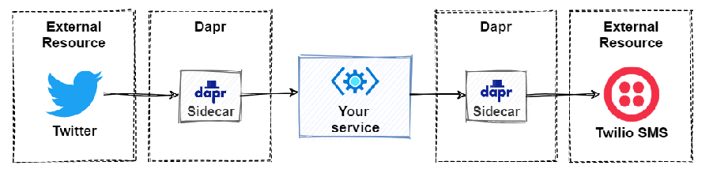
Figure 8-1. Conceptual architecture of a Dapr resource binding.
focuses on asynchronous communication between Dapr services. Resource binding has a much wider scope. It focuses on system interoperability across software platforms. Exchanging information between disparate applications, datastores, and services outside your microservice application.
Dapr resource binding starts with a component configuration file. This YAML file describes the type of resource to which you’ll bind along with its configuration settings. Once configured, your service can receive events from the resource or trigger events on it.
Note Binding configurations are presented in detail later in the Components section. |
|---|
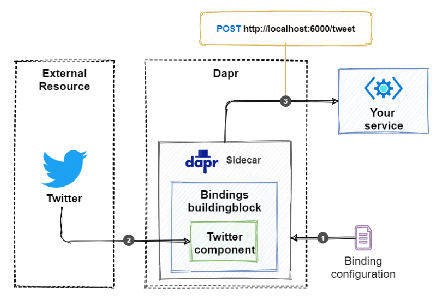
Figure 8-2. Dapr input binding flow. Figure 8.2 describes the steps for receiving events from an external Twitter account:
1. The Dapr sidecar reads the binding configuration file and subscribes to the event specified for the external resource. In the example, the event source is a Twitter account.
2. When a matching Tweet is published on Twitter, the binding component running in the Dapr sidecar picks it up and triggers an event.
3. The Dapr sidecar invokes the endpoint (that is, event handler) configured for the binding. In the example, the service listens for an HTTP POST on the /tweet endpoint on port 6000. Because it’s an HTTP POST operation, the JSON payload for the event is passed in the request body.
4. After handling the event, the service returns an HTTP status code 200 OK.
The following ASP.NET Core controller provides an example of handling an event triggered by the Twitter binding:
[ApiController] public class SomeController : ControllerBase { public class TwitterTweet { [JsonPropertyName("id_str")] public string ID {get; set; } [JsonPropertyName("text")] public string Text {get; set; } } [HttpPost("/tweet")] public ActionResult Post(TwitterTweet tweet) { // Handle tweet Console.WriteLine("Tweet received: {0}: {1}", tweet.ID, tweet.Text); // ... // Acknowledge message return Ok(); } } |
|---|
If the operation should error, you would return the appropriate 400 or 500 level HTTP status code. For bindings that feature at-least-once delivery guarantees, the Dapr sidecar will retry the trigger. Check out Dapr documentation for resource bindings to see whether they offer at-least-once or exactly-once delivery guarantees.
Dapr also includes output binding capabilities. They enable your service to trigger an event that invokes an external resource. Again, you start by configuring a binding configuration YAML file that describes the output binding. Once in place, you trigger an event that invokes the bindings API on the Dapr sidecar of your application. Figure 8-3 shows the flow of an output binding:
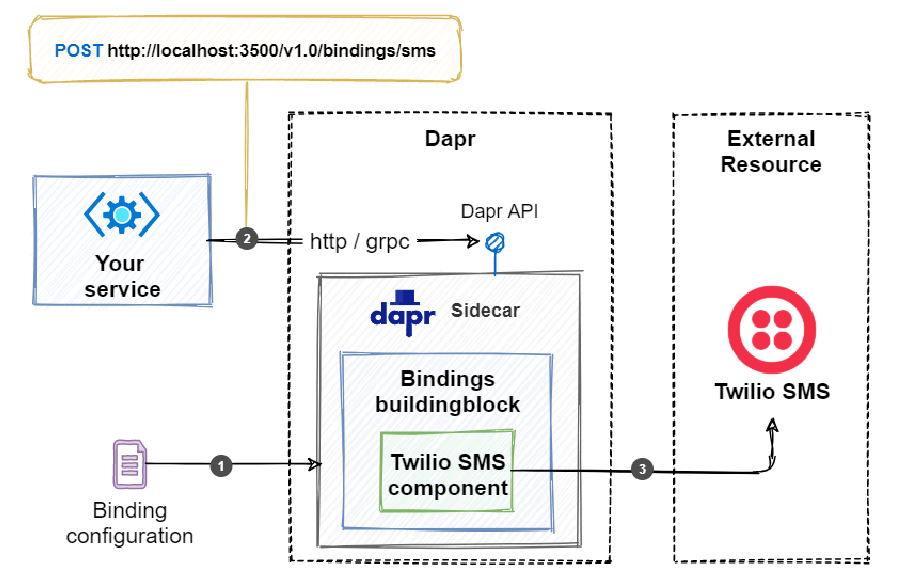
Figure 8-3. Dapr output binding flow.
1. The Dapr sidecar reads the binding configuration file with the information on how to connect to the external resource. In the example, the external resource is a Twilio SMS account.
2. Your application invokes the /v1.0/bindings/sms endpoint on the Dapr sidecar. In this case, it uses an HTTP POST to invoke the API. It’s also possible to use gRPC.
3. The binding component running in the Dapr sidecar calls the external messaging system to send the message. The message will contain the payload passed in the POST request.
As an example, you can invoke an output binding by invoking the Dapr API using curl:
curl -X POST http://localhost:3500/v1.0/bindings/sms \
"toNumber": "555-3277" }, "operation": "create" }' |
|---|
Note that the HTTP port is the same as used by the Dapr sidecar (in this case, the default Dapr HTTP port 3500).
The structure of the payload (that is, message sent) will vary per binding. In the example above, the payload contains a data element with a message. Bindings to other types of external resources can be different, especially for the metadata that is sent. Each payload must also contain an operation field,
that defines the operation the binding will execute. The above example specifies a create operation that creates the SMS message. Common operations include:
• create
• get
• delete
• list
It’s up to the author of the binding which operations the binding supports. The documentation for each binding describes the available operations and how to invoke them.
The Dapr .NET SDK provides language-specific support for .NET developers. In the following example, the call to the HttpClient.PostAsync() is replaced with the DaprClient.InvokeBindingAsync() method. This specialized method simplifies invoking a configured output binding:
private async Task SendSMSAsync([FromServices] DaprClient daprClient) { var message = "Welcome to this awesome service"; var metadata = new Dictionary { "toNumber", "555-3277" } }; await daprClient.InvokeBindingAsync("sms", "create", message, metadata); } |
|---|
The method expects the metadata and message values. When used to invoke a binding, the DaprClient uses gRPC to call the Dapr API on the Dapr sidecar.
Under the hood, resource bindings are implemented with Dapr binding components. They’re contributed by the community and written in Go. If you need to integrate with an external resource for which no Dapr binding exists yet, you can create it yourself. Check out the Dapr componentscontrib repo to see how you can contribute a binding.
NoteDapr and all of its components are written in the Golang (Go) language. Go is considered a modern, cloud-native programming platform. |
|---|
You configure bindings using a YAML configuration file. Here’s an example configuration for the Twitter binding:
apiVersion: dapr.io/v1alpha1 kind: Component metadata:
name: twitter-mention
namespace: default
spec: type: bindings.twitter version: v1 metadata:
- name: consumerKey value: "****" # twitter api consumer key, required
- name: consumerSecret value: "****" # twitter api consumer secret, required
- name: accessToken value: "****" # twitter api access token, required
- name: accessSecret value: "****" # twitter api access secret, required
- name: query value: "dapr" # your search query, required
Each binding configuration contains a general metadata element with a name and namespace field. Dapr will determine the endpoint to invoke your service based upon the configured name field. In the above example, Dapr will invoke the method annotated with /twitter-mention in your service when an event occurs.
In the spec element, you specify the type of the binding along with binding specific metadata. The example specifies credentials for accessing a Twitter account using its API. The metadata can differ between input and output bindings. For example, to use Twitter as an input binding, you need to specify the text to search for in tweets using the query field. Every time a matching tweet is sent, the Dapr sidecar will invoke the /twitter-mention endpoint on the service. It will also deliver the contents of the tweet.
A binding can be configured for input, output, or both. Interestingly, the binding doesn’t explicitly specify input or output configuration. Instead, the direction is inferred by the usage of the binding along with configuration values.
The Dapr documentation for resource bindings provides a complete list of the available bindings and their specific configuration settings.
Pay close attention to Dapr’s Cron binding. It doesn’t subscribe to events from an external system. Instead, this binding uses a configurable interval schedule to trigger your application. The binding provides a simple way to implement a background worker to wake up and do some work at a regular interval, without the need to implement an endless loop with a configurable delay. Here’s an example of a Cron binding configuration:
apiVersion: dapr.io/v1alpha1 kind: Component metadata: name: checkOrderBacklog namespace: default spec: type: bindings.cron version: v1 metadata: - name: schedule value: "@every 30m" |
|---|
In this example, Dapr triggers a service by invoking the /checkOrderBacklog endpoint every 30 minutes. There are several patterns available for specifying the schedule value. For more information, see the Cron binding documentation.
In the Dapr Traffic Control sample application, the TrafficControl service uses the MQTT input binding to retrieve messages from the CameraSimulation. Figure 8-4 shows the conceptual architecture of the Dapr Traffic Control sample application. The Dapr input binding is used in flows marked with number
5 in the diagram:
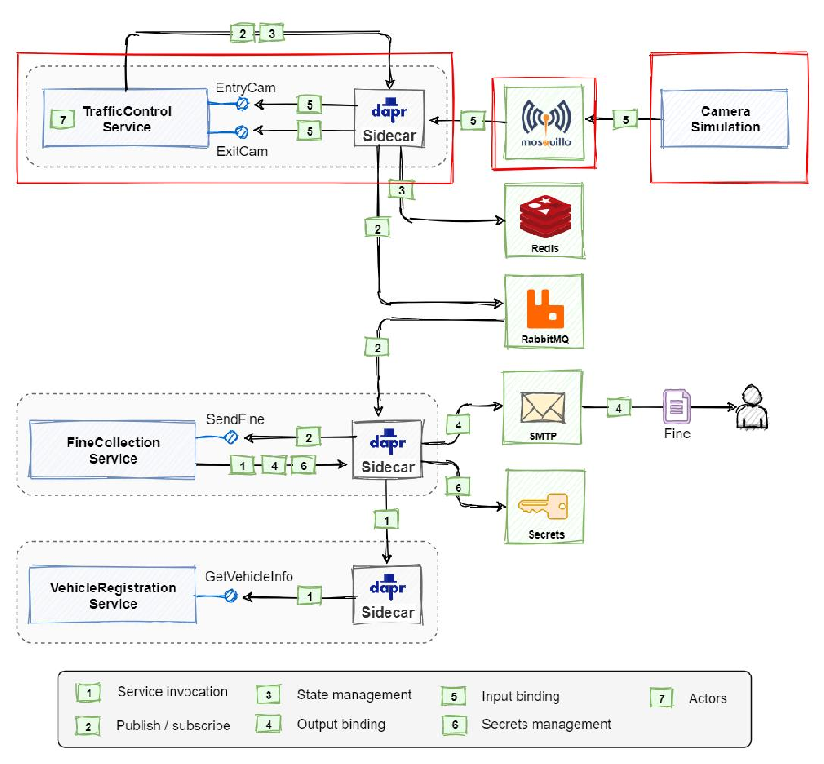
Figure 8-4. Conceptual architecture of the Dapr Traffic Control sample application.
MQTT is a lightweight pub/sub messaging protocol, often used in IoT scenarios. Producers sent MQTT messages to a topic; subscribers then retrieve messages from the topic. There are several MQTT message broker products available. The Traffic Control sample application uses Eclipse Mosquitto.
The CameraSimulation doesn’t depend on any Dapr building blocks. It uses the System.Net.Mqtt library to send MQTT messages:
// ... // simulate entry DateTime entryTimestamp = DateTime.Now; var vehicleRegistered = new VehicleRegistered { Lane = _camNumber, LicenseNumber = GenerateRandomLicenseNumber(), Timestamp = entryTimestamp }; _trafficControlService.SendVehicleEntry(vehicleRegistered); // ... |
|---|
The code uses a proxy of type ITrafficControlService to call the TrafficControl service. .NET injects an implementation of the ITrafficControlService interface using constructor injection:
:::{custom-style=CodeBox} csharp public CameraSimulation(int camNumber, ITrafficControlService trafficControlService) { _camNumber = camNumber; _trafficControlService = trafficControlService; } :::
The MqttTrafficControlService class implements the ITrafficControlService interface. It exposes two methods: SendVehicleEntryAsync and SendVehicleExitAsync. They both use the MQTT client to send messages to the trafficcontrol/entrycam and trafficcontrol/exitcam topics respectively:
public async Task SendVehicleEntryAsync(VehicleRegistered vehicleRegistered) { var eventJson = JsonSerializer.Serialize(vehicleRegistered); var message = new MqttApplicationMessage("trafficcontrol/entrycam", Encoding.UTF8.GetBytes(eventJson)); await _client.PublishAsync(message, MqttQualityOfService.AtMostOnce); } public async Task SendVehicleExitAsync(VehicleRegistered vehicleRegistered) { var eventJson = JsonSerializer.Serialize(vehicleRegistered); var message = new MqttApplicationMessage("trafficcontrol/exitcam", Encoding.UTF8.GetBytes(eventJson)); await _client.PublishAsync(message, MqttQualityOfService.AtMostOnce); } |
|---|
The constructor sets up the MQTT client to send messages to the MQTT broker (Mosquitto) running on port 1883.
On the other end, the TrafficControl service uses the MQTT input binding to receive VehicleRegistered messages sent by the CameraSimulation. For each subscribed topic, there’s a
separate component configuration file in the /dapr/components folder. The first one is entrycam.yaml:
apiVersion: dapr.io/v1alpha1 kind: Component metadata: name: entrycam namespace: dapr-trafficcontrol spec: type: bindings.mqtt version: v1 metadata:
scopes: - trafficcontrolservice |
|---|
The configuration specifies the binding type: bindings.mqtt. It also specifies that the broker runs on localhost:1883, the standard port that Mosquitto uses. It also exposes the topic, trafficcontrol/entrycam. Using scopes, the config file specifies that only the service with app-id trafficcontrolservice will have access to the binding.
When the TrafficControl service starts, the Dapr sidecar automatically subscribes to the trafficcontrol/entrycam MQTT topic specified in the component configuration. When messages arrive on the topic, the Dapr sidecar invokes an HTTP endpoint on your service. The sidecar determines the URL of the HTTP endpoint to call by looking at the metadata.name field in the binding configuration. In the example above, the endpoint URL is /entrycam. Within the TrafficControl service, no code needs to be added to support the endpoint:
[HttpPost("entrycam")] public async Task // ... } |
|---|
The exitcam.yaml component configuration file configures everything for the exitcam endpoint:
apiVersion: dapr.io/v1alpha1 kind: Component metadata: name: exitcam namespace: dapr-trafficcontrol spec: type: bindings.mqtt version: v1 metadata:
scopes: - trafficcontrolservice |
|---|
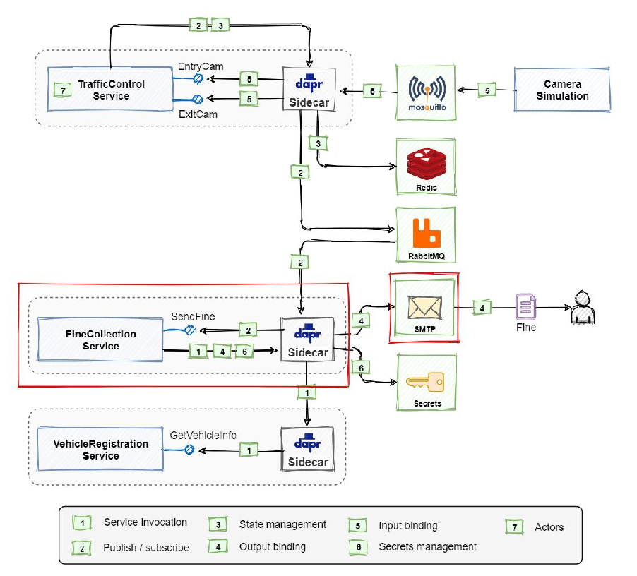
Figure 8-5. Conceptual architecture of the Dapr Traffic Control sample application.
The CollectFine method on the CollectionController in the FineCollection service contains code that uses the Dapr client to invoke the output binding:
// ... // send fine by email (Dapr output binding) var body = EmailUtils.CreateEmailBody(speedingViolation, vehicleInfo, fineString); var metadata = new Dictionary
["emailFrom"] = "noreply@cfca.gov", ["emailTo"] = vehicleInfo.OwnerEmail,
["subject"] = $"Speeding violation on the {speedingViolation.RoadId}"
}; await daprClient.InvokeBindingAsync("sendmail", "create", body, metadata);
// ...
The code uses a simple utility class to create an HTML email body containing the necessary information. It also creates a dictionary with metadata specific to the SMTP binding. This binding component interprets the metadata when invoked.
The following arguments are required to invoke the binding:
• The name of the binding component. In this case sendmail.
• The operation the binding needs to perform. In this case create.
• The body of the message to send. In this case, the HTML email body.
• The metadata for sending the email.
The Dapr output binding named sendmail is configured in the email.yaml component configuration file in the /dapr/components folder:
apiVersion: dapr.io/v1alpha1 kind: Component metadata: name: sendmail namespace: dapr-trafficcontrol spec: type: bindings.smtp version: v1 metadata:
auth: secretStore: trafficcontrol-secrets scopes: - finecollectionservice |
|---|
The configuration specifies the binding type: bindings.smtp. The metadata section contains the information for connecting to the SMTP server. See the binding’s documentation for specific metadata required for this binding. The username and password to connect to the SMTP server are retrieved from a secrets store. See the Secrets management building block chapter for more information on how this works.
The scopes element specifies that only the service with app-id finecollectonservice can access this binding.
The Traffic Control sample application uses MailDev. MailDev is a development SMTP server that doesn’t actually send out emails (by default). Instead, it collects emails and presents them in an inbox web application. MailDev is extremely useful for dev/test and demo scenarios.
Using Dapr bindings in the Traffic Control sample application provides the following benefits:
1. Using MQTT messaging and SMTP without the need to learn this protocol or a specific MQTT API.
2. Using SMTP to send an email without the need to learn this protocol or a specific SMTP API.
Dapr resource bindings enable you to integrate with different external resources and systems without taking dependencies on their libraries or SDKs. These external systems don’t necessarily have to be messaging systems like a service bus or message broker. Bindings also exist for datastores and web resources like Twitter or SendGrid.
Input bindings (or triggers) react to events occurring in an external system. They invoke the public HTTP endpoints pre-configured in your application. Dapr uses the name of the binding in the configuration to determine the endpoint to call in your application.
Output bindings will send messages to an external system. You trigger an output binding by doing an HTTP POST on the /v1.0/bindings/
You implement a binding with a Dapr component. These components are contributed by the community. Each binding component’s configuration has metadata that is specific for the external system it abstracts. Also, the commands it supports and the structure of the payload will differ per binding component.
• Dapr documentation for resource bindings
• Mosquitto MQTT broker
• MailDev development SMTP server
CHAPTER |
|---|
10
The Dapr actors building block
The actor model originated in 1973. It was proposed by Carl Hewitt as a conceptual model of concurrent computation, a form of computing in which several computations are executed at the same time. Highly parallel computers weren’t yet available at that time, but the more recent advancements of multi-core CPUs and distributed systems have made the actor model popular.
In the actor model, the actor is an independent unit of compute and state. Actors are completely isolated from each other and they will never share memory. Actors communicate with each other using messages. When an actor receives a message, it can change its internal state, and send messages to other (possibly new) actors.
The reason why the actor model makes writing concurrent systems easier is that it provides a turnbased (or single-threaded) access model. Multiple actors can run at the same time, but each actor will process received messages one at a time. This means that you can be sure that at most one thread is active inside an actor at any time. That makes writing correct concurrent and parallel systems much easier.
Actor model implementations are usually tied to a specific language or platform. With the Dapr actors building block however, you can leverage the actor model from any language or platform.
Dapr’s implementation is based on the virtual actor pattern introduced by Project “Orleans”. With the virtual actor pattern, you don’t need to explicitly create actors. Actors are activated implicitly and placed on a node in the cluster the first time a message is sent to the actor. When not executing operations, actors are silently unloaded from memory. If a node fails, Dapr automatically moves activated actors to healthy nodes. Besides sending messages between actors, the Dapr actor model also support scheduling future work using timers and reminders.
While the actor model can provide great benefits, it’s important to carefully consider the actor design. For example, having many clients call the same actor will result in poor performance because the actor operations execute serially. Here are some criteria to check if a scenario is a good fit for Dapr actors:
• Your problem space involves concurrency. Without actors, you’d have to introduce explicit locking mechanisms in your code.
• Your problem space can be partitioned into small, independent, and isolated units of state and logic.
• You don’t need low-latency reads of the actor state. Low-latency reads cannot be guaranteed because actor operations execute serially.
• You don’t need to query state across a set of actors. Querying across actors is inefficient because each actor’s state needs to be read individually and can introduce unpredictable latencies.
One design pattern that fits these criteria quite well is the orchestration-based saga or process manager design pattern. A saga manages a sequence of steps that must be taken to reach some outcome. The saga (or process manager) maintains the current state of the sequence and triggers the next step. If a step fails, the saga can execute compensating actions. Actors make it easy to deal with concurrency in the saga and to keep track of the current state. The eShopOnDapr reference application uses the saga pattern and Dapr actors to implement the Ordering process.
The Dapr sidecar provides the HTTP/gRPC API to invoke actors. This is the base URL of the HTTP API:
http://localhost: |
|---|
•
•
•
Figure 11-1 shows the various API calls between the service and its sidecar:
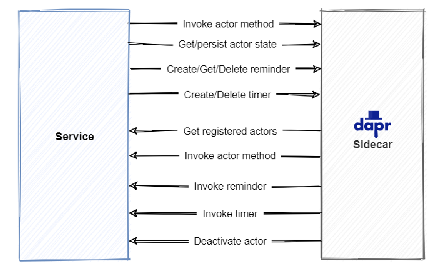
Figure 11-1. API calls between actor service and Dapr sidecar.
To provide scalability and reliability, actors are partitioned across all the instances of the actor service. The Dapr placement service is responsible for keeping track of the partitioning information. When a new instance of an actor service is started, the sidecar registers the supported actor types with the placement service. The placement service calculates the updated partitioning information for the given actor type and broadcasts it to all instances. Figure 11-2 shows what happens when a service is scaled out to a second replica:
:::image type=“content” source=“./media/actors/placement.png” alt-text=“Diagram of the actor placement service.”:::
Figure 11-2. Actor placement service.
1. On startup, the sidecar makes a call to the actor service to get the registered actor types as well as actor configuration settings.
2. The sidecar sends the list of registered actor types to the placement service.
3. The placement service broadcasts the updated partitioning information to all actor service instances. Each instance will keep a cached copy of the partitioning information and use it to invoke actors.
ImportantBecause actors are randomly distributed across service instances, it should be expected that an actor operation always requires a call to a different node in the network. |
|---|
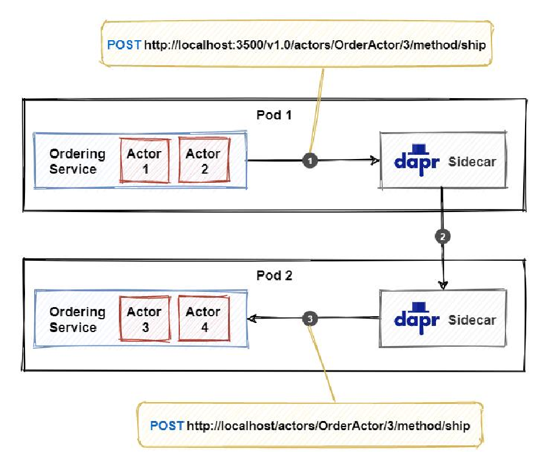
Figure 11-3. Calling an actor method.
1. The service calls the actor API on the sidecar. The JSON payload in the request body contains the data to send to the actor.
2. The sidecar uses the locally cached partitioning information from the placement service to determine which actor service instance (partition) is responsible for hosting the actor with ID 3. In this example, it’s the service instance in pod 2. The call is forwarded to the appropriate sidecar.
3. The sidecar instance in pod 2 calls the service instance to invoke the actor. The service instance activates the actor (if it hasn’t already) and executes the actor method.
The turn-based access model ensures that at any time there’s at most one thread active inside an actor instance. To understand why this is useful, consider the following example of a method that increments a counter value:
public int Increment() { var currentValue = GetValue(); var newValue = currentValue + 1; SaveValue(newValue); return newValue; } |
|---|
Let’s assume that the current value returned by the GetValue method is 1. When two threads call the Increment method at the same time, there’s a risk of both of them calling the GetValue method before one of them calls SaveValue. This results in both threads starting with the same initial value (1). The threads then increment the value to 2 and return it to the caller. The resulting value after the two calls is now 2 instead of 3 which it should be. This is a simple example to illustrate the kind of issues that can slip into your code when working with multiple threads, and is easy to solve. In real world applications however, concurrent and parallel scenarios can become very complex.
In traditional programming models, you can solve this problem by introducing locking mechanisms. For example:
public int Increment() { int newValue; lock (_lockObject) { var currentValue = GetValue(); newValue = currentValue + 1; SaveValue(newValue); } return newValue; } |
|---|
Unfortunately, using explicit locking mechanisms is error-prone. They can easily lead to deadlocks and can have serious impact on performance.
Thanks to the turn-based access model, you don’t need to worry about multiple threads with actors, making it much easier to write concurrent systems. The following actor example closely mirrors the code from the previous sample, but doesn’t require any locking mechanisms to be correct:
public async Task
var counterValue = await StateManager.TryGetStateAsync
await StateManager.SetStateAsync("counter", newValue); return newValue;
}
Actors can use timers and reminders to schedule calls to themselves. Both concepts support the configuration of a due time. The difference lies in the lifetime of the callback registrations:
• Timers will only stay active as long as the actor is activated. Timers will not reset the idle-timer, so they cannot keep an actor active on their own.
• Reminders outlive actor activations. If an actor is deactivated, a reminder will re-activate the actor. Reminders will reset the idle-timer.
Timers are registered by making a call to the actor API. In the following example, a timer is registered with a due time of 0 and a period of 10 seconds.
curl -X POST http://localhost:3500/v1.0/actors/
}' |
|---|
Because the due time is 0, the timer will fire immediately. After a timer callback has finished, the timer will wait 10 seconds before firing again.
Reminders are registered in a similar way. The following example shows a reminder registration with a due time of 5 minutes, and an empty period:
curl -X POST http://localhost:3500/v1.0/actors/
}' |
|---|
This reminder will fire in 5 minutes. Because the given period is empty, this will be a one-time reminder.
NoteTimers and reminders both respect the turn-based access model. When a timer or reminder fires, the callback will not be executed until any other method invocation or timer/reminder callback has finished. |
|---|
Actor state is persisted using the Dapr state management building block. Because actors can execute multiple state operations in a single turn, the state store component must support multi-item transactions. At the time of writing, the following state stores support multi-item transactions:
• Azure Cosmos DB
• MongoDB
• MySQL
• PostgreSQL
• Redis
• RethinkDB
• SQL Server
To configure a state store component for use with actors, you need to append the following metadata to the state store configuration:
- name: actorStateStore value: "true" |
|---|
Here’s a complete example for a Redis state store:
apiVersion: dapr.io/v1alpha1 kind: Component metadata: name: statestore spec: type: state.redis version: v1 metadata:
|
|---|
You can create an actor model implementation using only HTTP/gRPC calls. However, it’s much more convenient to use the language specific Dapr SDKs. At the time of writing, the .NET, Java and Python SDKs all provide extensive support for working with actors.
To get started with the .NET Dapr actors SDK, you add a package reference to Dapr.Actors to your service project. The first step of creating an actual actor is to define an interface that derives from IActor. Clients use the interface to invoke operations on the actor. Here’s a simple example of an actor interface for keeping scores:
public interface IScoreActor : IActor { Task } |
|---|
ImportantThe return type of an actor method must be Task or Task |
|---|
Next, implement the actor by deriving a ScoreActor class from Actor. The ScoreActor class must also implement the IScoreActor interface:
public class ScoreActor : Actor, IScoreActor { public ScoreActor(ActorHost host) : base(host) { } // TODO Implement interface methods. } |
|---|
The constructor in the snippet above takes a host argument of type ActorHost. The ActorHost class represents the host for an actor type within the actor runtime. You need to pass this argument to the constructor of the Actor base class. Actors also support dependency injection. Any additional arguments that you add to the actor constructor are resolved using the .NET dependency injection container.
Let’s now implement the IncrementScoreAsync method of the interface:
public Task return StateManager.AddOrUpdateStateAsync( "score", 1, (key, currentScore) => currentScore + 1 ); } |
|---|
In the snippet above, a single call to StateManager.AddOrUpdateStateAsync provides the full implementation for the IncrementScoreAsync method. The AddOrUpdateStateAsync method takes three arguments:
1. The key of the state to update.
2. The value to write if no score is stored in the state store yet.
3. A Func to call if there already is a score stored in the state store. It takes the state key and current score, and returns the updated score to write back to the state store.
The GetScoreAsync implementation reads the current score from the state store and returns it to the client:
public async Task
var scoreValue = await StateManager.TryGetStateAsync
return scoreValue.Value; }
return 0; }
To host actors in an ASP.NET Core service, you must add a reference to the Dapr.Actors.AspNetCore package and make some changes in the Program file. In the following example, the call to MapActorsHandlers registers Dapr Actor endpoints in ASP.NET Core routing:
var builder = WebApplication.CreateBuilder(args); var app = builder.Build(); // Actors building block does not support HTTPS redirection. //app.UseHttpsRedirection(); app.MapControllers(); // Add actor endpoints. app.MapActorsHandlers(); |
|---|
The actors endpoints are necessary because the Dapr sidecar calls the application to host and interact with actor instances.
ImportantMake sure your Program (or Startup) class does not contain an app.UseHttpsRedirection call to redirect clients to the HTTPS endpoint. This will not work with actors. By design, a Dapr sidecar sends requests over unencrypted HTTP by default. The HTTPS middleware will block these requests when enabled. |
|---|
The Program file is also the place to register the specific actor types. The following example registers the ScoreActor using the AddActors extension method:
var builder = WebApplication.CreateBuilder(args); builder.Services.AddActors(options => { options.Actors.RegisterActor |
|---|
At this point, the ASP.NET Core service is ready to host the ScoreActor and accept incoming requests. Client applications use actor proxies to invoke operations on actors. The following example shows how a console client application invokes the IncrementScoreAsync operation on a ScoreActor instance:
var actorId = new ActorId("scoreActor1"); var proxy = ActorProxy.Create |
|---|
The above example uses the Dapr.Actors package to call the actor service. To invoke an operation on an actor, you need to be able to address it. You’ll need two parts for this:
1. The actor type uniquely identifies the actor implementation across the whole application. By default, the actor type is the name of the implementation class (without namespace). You can customize the actor type by adding an ActorAttribute to the implementation class and setting its TypeName property.
2. The ActorId uniquely identifies an instance of an actor type. You can also use this class to generate a random actor id by calling ActorId.CreateRandom.
The example uses ActorProxy.Create to create a proxy instance for the ScoreActor. The Create method takes two arguments: the ActorId identifying the specific actor and the actor type. It also has a generic type parameter to specify the actor interface that the actor type implements. As both the server and client applications need to use the actor interfaces, they’re typically stored in a separate shared project.
The final step in the example calls the IncrementScoreAsync method on the actor and outputs the result. Remember that the Dapr placement service distributes the actor instances across the Dapr sidecars. Therefore, expect an actor call to be a network call to another node.
The console client example in the previous section uses the static ActorProxy.Create method directly to get an actor proxy instance. If the client application is an ASP.NET Core application, you should use the IActorProxyFactory interface to create actor proxies. The main benefit is that it allows you to manage configuration in one place. The AddActors extension method on IServiceCollection takes a delegate that allows you to specify actor runtime options, such as the HTTP endpoint of the Dapr sidecar. The following example specifies custom JsonSerializerOptions to use for actor state persistence and message deserialization:
var builder = WebApplication.CreateBuilder(args); builder.Services.AddActors(options => { var jsonSerializerOptions = new JsonSerializerOptions() { PropertyNamingPolicy = JsonNamingPolicy.CamelCase, PropertyNameCaseInsensitive = true }; options.JsonSerializerOptions = jsonSerializerOptions; options.Actors.RegisterActor }); |
|---|
The call to AddActors registers the IActorProxyFactory for .NET dependency injection. This allows ASP.NET Core to inject an IActorProxyFactory instance into your controller classes. The following example calls an actor method from an ASP.NET Core controller class:
[ApiController] [Route("[controller]")] public class ScoreController : ControllerBase {
private readonly IActorProxyFactory _actorProxyFactory; public ScoreController(IActorProxyFactory actorProxyFactory) {
_actorProxyFactory = actorProxyFactory;
} [HttpPut("{scoreId}")] public Task
var scoreActor = _actorProxyFactory.CreateActorProxy
return scoreActor.IncrementScoreAsync(); }
}
Actors can also call other actors directly. The Actor base class exposes an IActorProxyFactory class through the ProxyFactory property. To create an actor proxy from within an actor, use the ProxyFactory property of the Actor base class. The following example shows an OrderActor that invokes operations on two other actors:
public class OrderActor : Actor, IOrderActor { public OrderActor(ActorHost host) : base(host) { } public async Task ProcessOrderAsync(Order order) { var stockActor = ProxyFactory.CreateActorProxy await stockActor.ReserveStockAsync(order.OrderLines); var paymentActor = ProxyFactory.CreateActorProxy new ActorId(order.OrderNumber), "PaymentActor"); await paymentActor.ProcessPaymentAsync(order.PaymentDetails); } } |
|---|
NoteBy default, Dapr actors aren’t reentrant. This means that a Dapr actor cannot be called more than once in the same chain. For example, the call chain Actor A -> Actor B -> Actor A is not allowed. At the time of writing, there’s a preview feature available to support reentrancy. However, there is no SDK support yet. For more details, see the official documentation. |
|---|
So far, the examples used strongly-typed actor proxies based on .NET interfaces to illustrate actor invocations. This works great when both the actor host and client are .NET applications. However, if the actor host is not a .NET application, you don’t have an actor interface to create a strongly-typed proxy. In these cases, you can use a weakly-typed proxy.
You create weakly-typed proxies in a similar way to strongly-typed proxies. Instead of relying on a
.NET interface, you need to pass in the actor method name as a string. [HttpPut("{scoreId}")] public Task
{
var scoreActor = _actorProxyFactory.CreateActorProxy( new ActorId(scoreId), "ScoreActor");
return scoreActor("IncrementScoreAsync"); }
Use the RegisterTimerAsync method of the Actor base class to schedule actor timers. In the following example, a TimerActor exposes a StartTimerAsync method. Clients can call the method to start a timer that repeatedly writes a given text to the log output.
public class TimerActor : Actor, ITimerActor { public TimerActor(ActorHost host) : base(host) { } public Task StartTimerAsync(string name, string text) { return RegisterTimerAsync( name, nameof(TimerCallback), Encoding.UTF8.GetBytes(text), TimeSpan.Zero, TimeSpan.FromSeconds(3)); } public Task TimerCallbackAsync(byte[] state) { var text = Encoding.UTF8.GetString(state); Logger.LogInformation($"Timer fired: {text}"); return Task.CompletedTask; } } |
|---|
The StartTimerAsync method calls RegisterTimerAsync to schedule the timer. RegisterTimerAsync takes five arguments:
1. The name of the timer.
2. The name of the method to call when the timer fires.
3. The state to pass to the callback method.
4. The amount of time to wait before the callback method is first invoked.
5. The time interval between callback method invocations. You can specify TimeSpan.FromMilliseconds(-1) to disable periodic signaling.
The TimerCallbackAsync method receives the user state in binary form. In the example, the callback decodes the state back to a string before writing it to the log.
Timers can be stopped by calling UnregisterTimerAsync:
public class TimerActor : Actor, ITimerActor { // ... public Task StopTimerAsync(string name) { return UnregisterTimerAsync(name); } } |
|---|
Remember that timers do not reset the actor idle timer. When no other calls are made on the actor, it may be deactivated and the timer will be stopped automatically. To schedule work that does reset the idle timer, use reminders which we’ll look at next.
To use reminders in an actor, your actor class must implement the IRemindable interface:
public interface IRemindable {Task ReceiveReminderAsync( string reminderName, byte[] state, TimeSpan dueTime, TimeSpan period); } |
|---|
The ReceiveReminderAsync method is called when a reminder is fired. It takes 4 arguments:
1. The name of the reminder.
2. The user state provided during registration.
3. The invocation due time provided during registration.
4. The invocation period provided during registration.
To register a reminder, use the RegisterReminderAsync method of the actor base class. The following example sets a reminder to fire a single time with a due time of three minutes.
public class ReminderActor : Actor, IReminderActor, IRemindable {
public ReminderActor(ActorHost host) : base(host)
{ }
public Task SetReminderAsync(string text) {
return RegisterReminderAsync( "DoNotForget", Encoding.UTF8.GetBytes(text), TimeSpan.FromSeconds(3), TimeSpan.FromMilliseconds(-1));
} public Task ReceiveReminderAsync(
string reminderName, byte[] state, TimeSpan dueTime, TimeSpan period)
{
if (reminderName == "DoNotForget") {
var text = Encoding.UTF8.GetString(state); Logger.LogInformation($"Don't forget: {text}");
} return Task.CompletedTask;
} }
The RegisterReminderAsync method is similar to RegisterTimerAsync but you don’t have to specify a callback method explicitly. As the above example shows, you implement IRemindable.ReceiveReminderAsync to handle fired reminders.
Reminders both reset the idle timer and are persistent. Even if your actor is deactivated, it will be reactivated at the moment a reminder fires. To stop a reminder from firing, call UnregisterReminderAsync.
The default version of Dapr Traffic Control does not use the actor model. However, it does contain an alternative actor-based implementation of the TrafficControl service that you can enable. To make use of actors in the TrafficControl service, open up the src/TrafficControlService/Controllers/TrafficController.cs file and uncomment the USE_ACTORMODEL statement at the top of the file:
#define USE_ACTORMODEL |
|---|
When the actor model is enabled, the application uses actors to represent vehicles. The operations that can be invoked on the vehicle actors are defined in an IVehicleActor interface:
public interface IVehicleActor : IActor { Task RegisterEntryAsync(VehicleRegistered msg); Task RegisterExitAsync(VehicleRegistered msg); } |
|---|
The (simulated) entry cameras call the RegisterEntryAsync method when a new vehicle is first detected in the lane. The only responsibility of this method is storing the entry timestamp in the actor state:
var vehicleState = new VehicleState { LicenseNumber = msg.LicenseNumber, EntryTimestamp = msg.Timestamp }; await StateManager.SetStateAsync("VehicleState", vehicleState); |
|---|
When the vehicle reaches the end of the speed camera zone, the exit camera calls the RegisterExitAsync method. The RegisterExitAsync method first gets the current states and updates it to include the exit timestamp:
var vehicleState = await StateManager.GetStateAsync |
|---|
Note The code above currently assumes that a VehicleState instance has already been saved by the RegisterEntryAsync method. The code could be improved by first checking to make sure the state exists. Thanks to the turn-based access model, no explicit locks are required in the code. |
|---|
After the state is updated, the RegisterExitAsync method checks if the vehicle was driving too fast. If it was, the actor publishes a message to the collectfine pub/sub topic:
int violation = _speedingViolationCalculator.DetermineSpeedingViolationInKmh( vehicleState.EntryTimestamp, vehicleState.ExitTimestamp); if (violation > 0) { var speedingViolation = new SpeedingViolation { VehicleId = msg.LicenseNumber, RoadId = _roadId, ViolationInKmh = violation, Timestamp = msg.Timestamp }; await _daprClient.PublishEventAsync("pubsub", "collectfine", speedingViolation); } |
|---|
The code above uses two external dependencies. The _speedingViolationCalculator encapsulates the business logic for determining whether or not a vehicle has driven too fast. The _daprClient allows the actor to publish messages using the Dapr pub/sub building block.
Both dependencies are registered in the Program.cs class and injected into the actor using constructor dependency injection:
private readonly DaprClient _daprClient; private readonly ISpeedingViolationCalculator _speedingViolationCalculator; private readonly string _roadId; public VehicleActor( ActorHost host, DaprClient daprClient, ISpeedingViolationCalculator speedingViolationCalculator) : base(host) { _daprClient = daprClient; _speedingViolationCalculator = speedingViolationCalculator; _roadId = _speedingViolationCalculator.GetRoadId(); } |
|---|
The actor based implementation no longer uses the Dapr state management building block directly. Instead, the state is automatically persisted after each operation is executed.
The Dapr actors building block makes it easier to write correct concurrent systems. Actors are small units of state and logic. They use a turn-based access model which saves you from having to use locking mechanisms to write thread-safe code. Actors are created implicitly and are silently unloaded
from memory when no operations are performed. Any state stored in the actor is automatically persisted and loaded when the actor is reactivated. Actor model implementations are typically created for a specific language or platform. With the Dapr actors building block however, you can leverage the actor model from any language or platform.
Actors support timers and reminders to schedule future work. Timers do not reset the idle timer and will allow the actor to be deactivated when no other operations are performed. Reminders do reset the idle timer and are also persisted automatically. Both timers and reminders respect the turn-based access model, making sure that no other operations can execute while the timer/reminder events are handled.
Actor state is persisted using the Dapr state management building block. Any state store that supports multi-item transactions can be used to store actor state.
• Dapr supported state stores
CHAPTER |
|---|
11
The Dapr observability building block
Modern distributed systems are complex. You start with small, loosely coupled, independently deployable services. These services cross process and server boundaries. They then consume different kinds of infrastructure backing services (databases, message brokers, key vaults). Finally, these disparate pieces compose together to form an application.
With so many separate, moving parts, how do you make sense of what is going on? Unfortunately, legacy monitoring approaches from the past aren’t enough. Instead, the system must be observable from end-to-end. Modern observability practices provide visibility and insight into the health of the application at all times. They enable you to infer the internal state by observing the output. Not only is observability mandatory for monitoring and troubleshooting distributed applications, it needs to be implemented at the start.
The system information used to gain observability is referred to as telemetry. It can be divided into four broad categories:
1. Distributed tracing provides insights into the traffic between services involved in distributed business transactions.
2. Metrics provides insights into the performance of a service and its resource consumption.
3. Logging provides insights into how code is executing and if errors have occurred.
4. Health endpoints provide insight into the availability of a service.
The depth of telemetry is determined by the observability features of an application platform. Consider the Azure cloud. It provides a rich telemetry experience that includes all of the telemetry categories. With little configuration, Azure IaaS and PaaS services will propagate and publish telemetry to the Azure Monitor and Azure Application Insights services. Application Insights presents system logging, tracing, and problem areas with highly visual dashboards. It can even render a diagram showing the dependencies between services based on their communication.
However, what if an application can’t use Azure PaaS and IaaS resources? Is it still possible to take advantage of the rich telemetry experience of Application Insights? The answer is yes. A non-Azure application can import libraries, add configuration, and instrument code to emit telemetry to Azure Application Insights. However, this approach tightly couples the application to Application Insights. Moving the app to a different monitoring platform could involve expensive refactoring. Wouldn’t it be great to avoid tight coupling and consume observability outside of the code?
With Dapr, you can. Let’s look at how Dapr can add observability to our distributed applications.
The Dapr observability building block decouples observability from the application. It automatically captures traffic generated by Dapr sidecars and Dapr system services that make up the Dapr control plane. The block correlates traffic from a single operation that spans multiple services. It also exposes performance metrics, resource utilization, and the health of the system. Telemetry is published in open-standard formats enabling information to be fed into your monitoring back end of choice. There, the information can be visualized, queried, and analyzed.
As Dapr abstracts away the plumbing, the application is unaware of how observability is implemented. There’s no need to reference libraries or implement custom instrumentation code. Dapr allows the developer to focus on building business logic instead of observability plumbing. Observability is configured at the Dapr system level and is consistent across services, even when created by different teams, and built with different technology stacks.
Dapr’s sidecar architecture enables built-in observability features. As services communicate, Dapr sidecars intercept the traffic and extract tracing, metrics, and logging information. Telemetry is published in an open standards format. By default, Dapr supports OpenTelemetry and Zipkin.
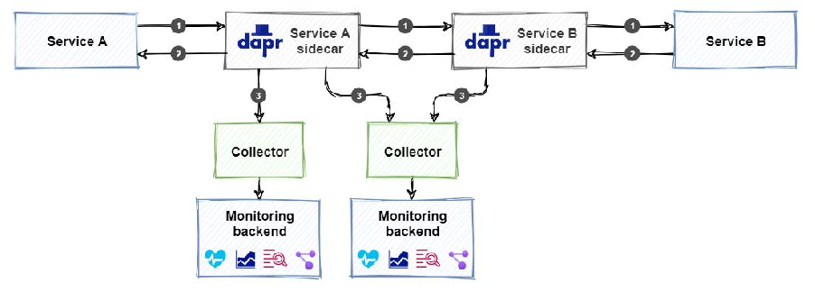
Figure 10-1. Dapr observability architecture.
1. Service A calls an operation on Service B. The call is routed from a Dapr sidecar for Service A to a sidecar for Service B.
2. When Service B completes the operation, a response is sent back to Service A through the Dapr sidecars. They gather and publish all available telemetry for every request and response.
3. The configured collector ingests the telemetry and sends it to the monitoring back end.
As a developer, keep in mind that adding observability is different from configuring other Dapr building blocks, like pub/sub or state management. Instead of referencing a building block, you add a collector and a monitoring back end. Figure 10-1 shows it’s possible to configure multiple collectors that integrate with different monitoring back ends.
At the beginning of this chapter, four categories of telemetry were identified. The following sections will provide detail for each category. They’ll include instruction on how to configure collectors that integrate with popular monitoring back ends.
Distributed tracing provides insight into traffic that flows across services in a distributed application. The logs of exchanged request and response messages are a source of invaluable information for troubleshooting issues. The hard part is correlating messages that belong to the same business transaction.
Dapr uses the W3C Trace Context to correlate related messages. It injects the same context information into requests and responses that form a unique operation. Figure 10-2 shows how correlation works:
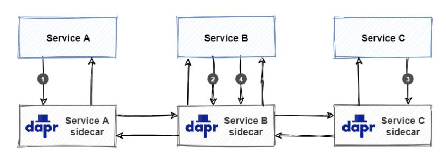
Note The trace context is often referred to as a correlation token in microservice terminology. |
|---|
Figure 10-2. W3C Trace Context example.
1. Service A invokes an operation on Service B. As Service A starts the call, Dapr creates a unique trace context and injects it into the request.
2. Service B receives the request and invokes an operation on Service C. Dapr detects that the incoming request contains a trace context and propagates it by injecting it into the outgoing request to Service C.
3. Service C receives the request and handles it. Dapr detects that the incoming request contains a trace context and propagates it by injecting it into the outgoing response back to Service B.
4. Service B receives the response and handles it. It then creates a new response and propagates the trace context by injecting it into the outgoing response back to Service A.
A set of requests and responses that belong together is called a trace. Figure 10-3 shows a trace:
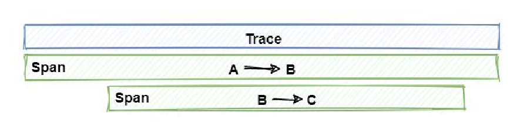
Figure 10-3. Traces and spans.
In the figure, note how the trace represents a unique application transaction that takes place across many services. A trace is a collection of spans. Each span represents a single operation or unit of work done within the trace. Spans are the requests and responses that are sent between services that implement the unique transaction.
The next sections discuss how to inspect tracing telemetry by publishing it to a monitoring back end. Use a Zipkin monitoring back end Zipkin is an open-source distributed tracing system. It can ingest and visualize telemetry data. Dapr offers default support for Zipkin. The following example demonstrates how to configure Zipkin to visualize Dapr telemetry. Enable and configure tracing
To start, tracing must be enabled for the Dapr runtime using a Dapr configuration file. Here’s an example of a configuration file named dapr-config.yaml that enables tracing:
apiVersion: dapr.io/v1alpha1 kind: Configuration metadata: name: dapr-config namespace: default spec: tracing: samplingRate: "1" zipkin: endpointAddress: "http://zipkin.default.svc.cluster.local:9411/api/v2/spans" |
|---|
The samplingRate attribute specifies the interval used for publishing traces. The value must be between 0 (tracing disabled) and 1 (every trace is published). With a value of 0.5, for example, every other trace is published, significantly reducing published traffic. The endpointAddress points to an endpoint on a Zipkin server running in a Kubernetes cluster. The default port for Zipkin is 9411. The configuration must be applied to the Kubernetes cluster using the Kubernetes CLI:
kubectl apply -f dapr-config.yaml |
|---|
When installing Dapr in self-hosted mode, a Zipkin server is automatically installed and tracing is enabled in the default configuration file located in $HOME/.dapr/config.yaml or %USERPROFILE%\.dapr\config.yaml on Windows.
When installing Dapr on a Kubernetes cluster, Zipkin must be deployed manually. Use the following Kubernetes manifest file entitled zipkin.yaml to deploy a standard Zipkin server to a Kubernetes cluster:
kind: Deployment apiVersion: apps/v1 metadata: name: zipkin namespace: dapr-trafficcontrol labels: service: zipkin spec: replicas: 1 selector: matchLabels: service: zipkin template: metadata: labels: service: zipkin spec: containers: - name: zipkin image: openzipkin/zipkin-slim imagePullPolicy: IfNotPresent ports: - name: http containerPort: 9411 protocol: TCP --- kind: Service apiVersion: v1 metadata: name: zipkin namespace: dapr-trafficcontrol labels: service: zipkin spec: type: NodePort ports: - port: 9411 targetPort: 9411 nodePort: 32411 protocol: TCP name: zipkin selector: service: zipkin |
|---|
The deployment uses the standard openzipkin/zipkin-slim container image. The Zipkin service exposes the Zipkin web front end, which you can use to view the telemetry on port 32411. Use the
Kubernetes CLI to apply the Zipkin manifest file to the Kubernetes cluster and deploy the Zipkin server:
kubectl apply -f zipkin.yaml |
|---|
Now everything is set up correctly to start publishing telemetry. Every Dapr sidecar that is deployed as part of the application must be instructed to emit telemetry when started. To do that, add a dapr.io/config annotation that references the dapr-config configuration to the deployment of each service. Here’s an example of the Traffic Control FineCollection service’s manifest file containing the annotation:
apiVersion: apps/v1 kind: Deployment metadata: name: finecollectionservice namespace: dapr-trafficcontrol labels: app: finecollectionservice spec: replicas: 1 selector: matchLabels: app: finecollectionservice template: metadata: labels: app: finecollectionservice annotations: dapr.io/enabled: "true" dapr.io/app-id: "finecollectionservice" dapr.io/app-port: "6001" dapr.io/config: "dapr-config" spec: containers:
|
|---|
Once the application is started, the Dapr sidecars will emit telemetry to the Zipkin server. To inspect this telemetry, point a web-browser to http://localhost:32411. You’ll see the Zipkin web front end:
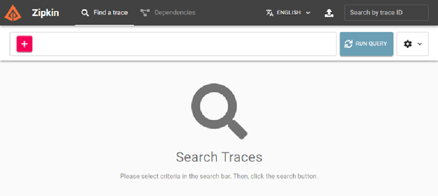
On the Find a trace tab, you can query traces. Pressing the RUN QUERY button without specifying any restrictions will show all the ingested traces:
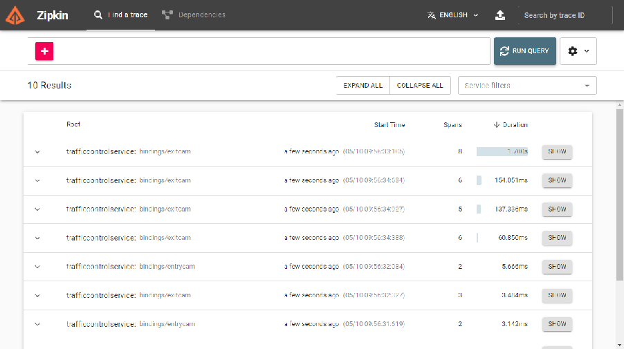
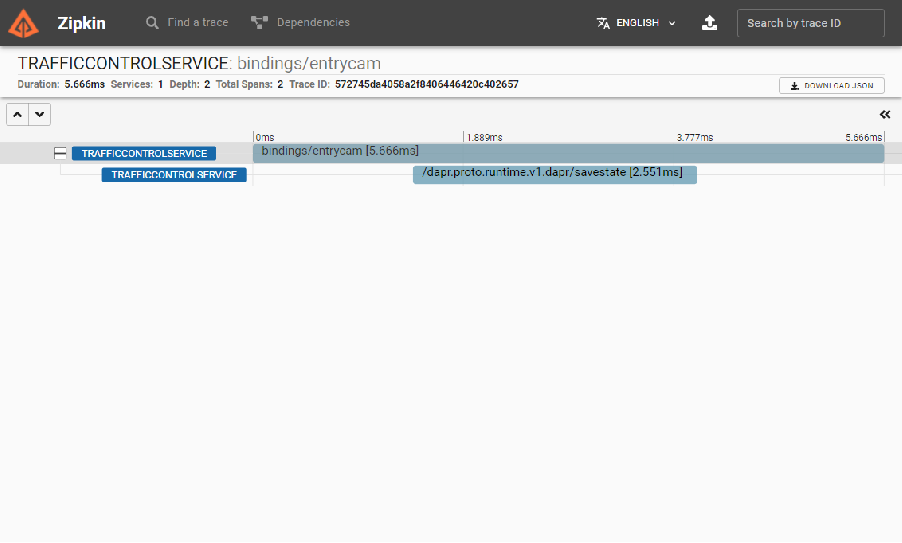
Figure 10-6. Zipkin trace details. Each item on the details page, is a span that represents a request that is part of the selected trace.
Because Dapr sidecars handle traffic between services, Zipkin can use the trace information to determine the dependencies between the services. To see it in action, go to the Dependencies tab on the Zipkin web page and select the button with the magnifying glass. Zipkin will show an overview of the services and their dependencies:
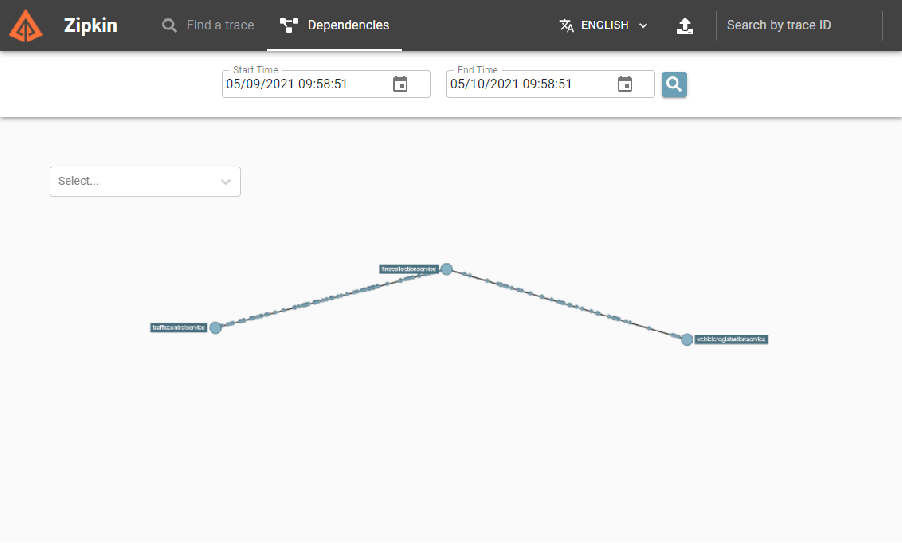
Figure 10-7. Zipkin dependencies.
The animated dots on the lines between the services represent requests and move from source to destination. Red dots indicate a failed request.
Beyond Zipkin, other monitoring back-end software can also ingest telemetry with the Zipkin format. Jaeger is an open source tracing system created by Uber Technologies. It’s used to trace transactions between distributed services and troubleshoot complex microservices environments. New Relic is a
full-stack observability platform. It links relevant data from a distributed application to provide a complete picture of your system. To try them out, specify an endpointAddress pointing to either a Jaeger or New Relic server in the Dapr configuration file. Here’s an example of a configuration file that configures Dapr to send telemetry to a Jaeger server. The URL for Jaeger is identical to the URL for the Zipkin. The only difference is the number of the port on which the server runs:
:::{custom-style=CodeBox} yaml apiVersion: dapr.io/v1alpha1 kind: Configuration metadata: name: dapr-config namespace: default spec: tracing: samplingRate: "1" zipkin: endpointAddress: "http://localhost:9415/api/v2/spans" :::
To try out New Relic, specify the endpoint of the New Relic API. Here’s an example of a configuration file for New Relic:
:::{custom-style=CodeBox} yaml apiVersion: dapr.io/v1alpha1 kind: Configuration metadata: name: dapr-config namespace: default spec: tracing: samplingRate: "1" zipkin: endpointAddress: "https://trace-api.newrelic.com/trace/v1?Api-Key=
Check out the Jaeger and New Relic websites for more information on how to use them.
Metrics provide insight into performance and resource consumption. Under the hood, Dapr emits a wide collection of system and runtime metrics. Dapr uses Prometheus as a metric standard. Dapr sidecars and system services, expose a metrics endpoint on port 9090. A Prometheus scraper calls this endpoint at a predefined interval to collect metrics. The scraper sends metric values to a monitoring back end. Figure 10-8 shows the scraping process:
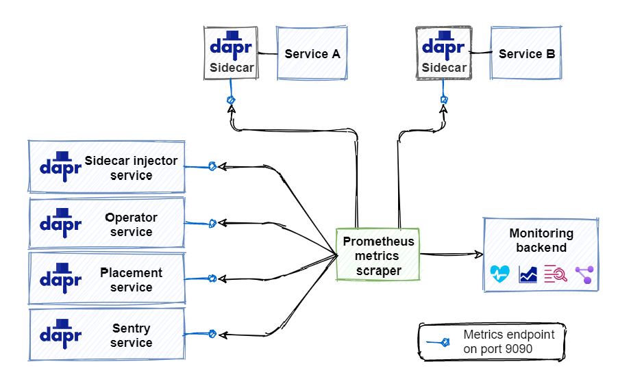
Figure 10-8. Scraping Prometheus metrics.
Each sidecar and system service exposes a metric endpoint that listens on port 9090. The Prometheus Metrics Scrapper captures metrics from each endpoint and published the information to the monitoring back end. Service discovery
You might wonder how the metrics scraper knows where to collect metrics. Prometheus can integrate with discovery mechanisms built into target deployment environments. For example, when running in Kubernetes, Prometheus can integrate with the Kubernetes API to find all available Kubernetes resources running in the environment.
Dapr generates a large set of metrics for Dapr system services and its runtime. Some examples include:
Metric |
Source |
Description |
|---|---|---|
dapr_operator_service_created_total |
System |
The total number of Dapr services created by the Dapr Operator service. |
dapr_injector_sidecar_injection/requests_total |
System |
The total number of sidecar injection requests received by the Dapr SidecarInjector service. |
dapr_placement_runtimes_total |
System |
The total number of hosts reported to the Dapr Placement service. |
dapr_sentry_cert_sign_request_received_total |
System |
The number of certificate signing requests (CRSs) received by the Dapr Sentry service. |
dapr_runtime_component_loaded |
Runtime |
The number of successfully loaded Dapr components. |
dapr_grpc_io_server_completed_rpcs |
Runtime |
Count of gRPC calls by method and status. |
dapr_http_server_request_count |
Runtime |
Number of HTTP requests started in an HTTP server. |
dapr_http/client/sent_bytes |
Runtime |
Total bytes sent in request body (not including headers) by an HTTP client. |
At run time, you can disable the metrics collection endpoint by including the --enablemetrics=false argument in the Dapr command. Or, you can also change the default port for the endpoint with the --metrics-port 9090 argument. You can also use a Dapr configuration file to statically enable or disable runtime metrics collection:
apiVersion: dapr.io/v1alpha1 kind: Configuration metadata: name: dapr-config namespace: dapr-trafficcontrol spec: tracing: samplingRate: "1" metric: enabled: false |
|---|
With the Prometheus scraper collecting and publishing metrics into the monitoring back end, how do you make sense of the raw data? A popular visualization tool for analyzing metrics is Grafana. With Grafana, you can create dashboards from the available metrics. Here’s an example of a dashboard displaying Dapr system services metrics:
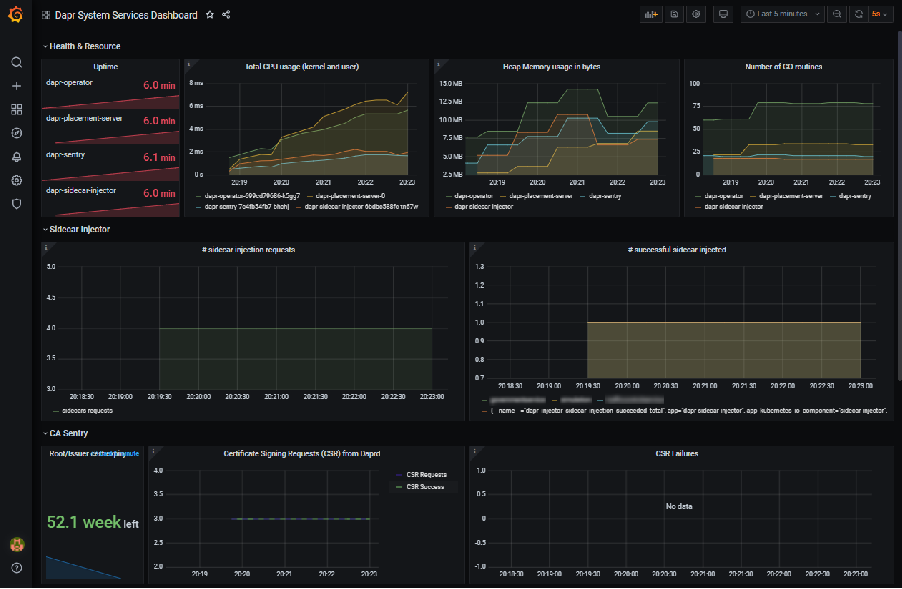
Figure 10-9. Grafana dashboard. The Dapr documentation includes a tutorial for installing Prometheus and Grafana.
Logging provides insight into what is happening with a service at run time. When running an application, Dapr automatically emits log entries from Dapr sidecars and Dapr system services. However, logging entries instrumented in your application code aren’t automatically included. To emit logging from application code, you can import a specific SDK like OpenTelemetry SDK for .NET. Logging application code is covered later in this chapter in the section Using the Dapr .NET SDK.
Field |
Description |
Example |
|---|---|---|
time |
ISO8601 formatted timestamp |
2021-01-10T14:19:31.000Z |
level |
Level of the entry (debug, info, warn, or error) |
info |
type |
Log Type |
log |
msg |
Log Message |
metrics server started on :62408/ |
scope |
Logging Scope |
dapr.runtime |
instance |
Hostname where Dapr runs |
TSTSRV01 |
Field |
Description |
Example |
|---|---|---|
app_id |
Dapr App ID |
finecollectionservice |
ver |
Dapr Runtime Version |
1.0 |
When searching through logging entries in a troubleshooting scenario, the time and level fields are especially helpful. The time field orders log entries so that you can pinpoint specific time periods. When troubleshooting, log entries at the debug level provide more information on the behavior of the code.
By default, Dapr emits structured logging in plain-text format. Every log entry is formatted as a string containing key/value pairs. Here’s an example of logging in plain text:
== DAPR == time="2021-01-12T16:11:39.4669323+01:00" level=info msg="starting Dapr Runtime - - version 1.0 -- commit 196483d" app_id=finecollectionservice instance=TSTSRV03 scope=dapr.runtime type=log ver=1.0 == DAPR == time="2021-01-12T16:11:39.467933+01:00" level=info msg="log level set to: info" app_id=finecollectionservice instance=TSTSRV03 scope=dapr.runtime type=log ver=1.0 == DAPR == time="2021-01-12T16:11:39.467933+01:00" level=info msg="metrics server started on :62408/" app_id=finecollectionservice instance=TSTSRV03 scope=dapr.metrics type=log ver=1.0 |
|---|
While simple, this format is difficult to parse. If viewing log entries with a monitoring tool, you’ll want to enable JSON formatted logging. With JSON entries, a monitoring tool can index and query individual fields. Here’s the same log entries in JSON format:
{"app_id": "finecollectionservice", "instance": "TSTSRV03", "level": "info", "msg": "starting Dapr Runtime -- version 1.0 -- commit 196483d", "scope": "dapr.runtime", "time": "2021-01-12T16:11:39.4669323+01:00", "type": "log", "ver": "1.0"} {"app_id": "finecollectionservice", "instance": "TSTSRV03", "level": "info", "msg": "log level set to: info", "scope": "dapr.runtime", "type": "log", "time": "2021-0112T16:11:39.467933+01:00", "ver": "1.0"} {"app_id": "finecollectionservice", "instance": "TSTSRV03", "level": "info", "msg": "metrics server started on :62408/", "scope": "dapr.metrics", "type": "log", "time": "202101-12T16:11:39.467933+01:00", "ver": "1.0"} |
|---|
To enable JSON formatting, you need to configure each Dapr sidecar. In self-hosted mode, you can specify the flag --log-as-json on the command line:
dapr run --app-id finecollectionservice --log-level info --log-as-json dotnet run |
|---|
In Kubernetes, you can add a dapr.io/log-as-json annotation to each deployment for the application:
annotations: dapr.io/enabled: "true" dapr.io/app-id: "finecollectionservice" dapr.io/app-port: "80" dapr.io/config: "dapr-config" dapr.io/log-as-json: "true" |
|---|
When you install Dapr in a Kubernetes cluster using Helm, you can enable JSON formatted logging for all the Dapr system services:
helm repo add dapr https://dapr.github.io/helm-charts/ helm repo update kubectl create namespace dapr-system helm install dapr dapr/dapr --namespace dapr-system --set global.logAsJson=true |
|---|
The logs emitted by Dapr can be fed into a monitoring back end for analysis. A log collector is a component that collects logs from a system and sends them to a monitoring back end. A popular log collector is Fluentd. Check out the How-To: Set up Fluentd, Elastic search and Kibana in Kubernetes in the Dapr documentation. This article contains instructions for setting up Fluentd as log collector and the ELK Stack (Elastic Search and Kibana) as a monitoring back end.
The health status of a service provides insight into its availability. Each Dapr sidecar exposes a health API that can be used by the hosting environment to determine the health of the sidecar. The API has one operation:
GET http://localhost:3500/v1.0/healthz |
|---|
The operation returns two HTTP status codes:
• 204: When the sidecar is healthy
• 500: when the sidecar isn’t healthy
When running in self-hosted mode, the health API isn’t automatically invoked. You can invoke the API though from application code or a health monitoring tool.
When running in Kubernetes, the Dapr sidecar-injector automatically configures Kubernetes to use the health API for executing liveness probes and readiness probes.
Kubernetes uses liveness probes to determine whether a container is up and running. If a liveness probe returns a failure code, Kubernetes will assume the container is dead and automatically restart it. This feature increases the overall availability of your application.
Kubernetes uses readiness probes to determine whether a container is ready to start accepting traffic. A pod is considered ready when all of its containers are ready. Readiness determines whether a Kubernetes service can direct traffic to a pod in a load-balancing scenario. Pods that aren’t ready are automatically removed from the load-balancer.
Liveness and readiness probes have several configurable parameters. Both are configured in the container spec section of a pod’s manifest file. By default, Dapr uses the following configuration for each sidecar container:
livenessProbe:
httpGet: path: v1.0/healthz port: 3500
initialDelaySeconds: 5 periodSeconds: 10 timeoutSeconds : 5 failureThreshold : 3
readinessProbe:
httpGet: path: v1.0/healthz port: 3500
initialDelaySeconds: 5 periodSeconds: 10 timeoutSeconds : 5 failureThreshold: 3
The following parameters are available for the probes:
• The path specifies the Dapr health API endpoint.
• The port specifies the Dapr health API port.
• The initialDelaySecondsspecifies the number of seconds Kubernetes will wait before it starts probing a container for the first time.
• The periodSeconds specifies the number of seconds Kubernetes will wait between each probe.
• The timeoutSeconds specifies the number of seconds Kubernetes will wait on a response from the API before timing out. A timeout is interpreted as a failure.
• The failureThresholdspecifies the number of failed status code Kubernetes will accept before considering the container not alive or not ready.
Dapr offers a dashboard that presents status information on Dapr applications, components, and configurations. Use the Dapr CLI to start the dashboard as a web-application on the local machine on port 8080:
dapr dashboard |
|---|
For Dapr application running in Kubernetes, use the following command:
dapr dashboard -k |
|---|
The dashboard opens with an overview of all services in your application that have a Dapr sidecar. The following screenshot shows the Dapr dashboard for the Traffic Control sample application running in Kubernetes:
:::image type=“content” source=“./media/observability/dapr-dashboard-overview.png” alt-text=“Dapr dashboard overview”:::
Figure 10-10. Dapr dashboard overview.
The Dapr dashboard is invaluable when troubleshooting a Dapr application. It provides information about Dapr sidecars and system services. You can drill down into the configuration of each service, including the logging entries.
The dashboard also shows the configured components (and their configuration) for an application: :::image type=“content” source=“./media/observability/dapr-dashboard-components.png” alttext=“Dapr dashboard components”:::
Figure 10-11. Dapr dashboard components.
There’s a large amount of information available through the dashboard. You can discover it by running a Dapr application and browsing the dashboard.
Check out the Dapr dashboard CLI command reference in the Dapr docs for more information on the Dapr dashboard commands.
The Dapr .NET SDK doesn’t contain any specific observability features. All observability features are offered at the Dapr level.
If you want to emit telemetry from your .NET application code, you should consider the OpenTelemetry SDK for .NET. The Open Telemetry project is cross-platform, open source, and vendor agnostic. It provides an end-to-end implementation to generate, emit, collect, process, and export telemetry data. There’s a single instrumentation library per language that supports automatic and manual instrumentation. Telemetry is published using the Open Telemetry standard. The project has broad industry support and adoption from cloud providers, vendors, and end users.
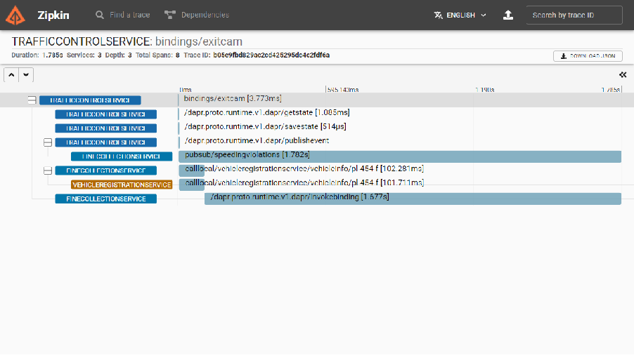
Figure 10-12. Zipkin end-to-end tracing example. This trace shows the communication that occurs when a speeding violation has been detected:
1. An exiting vehicle triggers the MQTT input binding that sends a message containing the vehicle license number, lane, and timestamp.
2. The MQTT input binding invokes the TrafficControl service with the message.
3. The TrafficControl service retrieves the state for the vehicle, appends the entry, and saves the updated vehicle state back to the state store.
4. The TrafficControl service publishes the speeding violation using pub/sub to the speedingviolations topic.
5. The FineCollection service receives the speeding violation using a pub/sub subscription on the speedingviolations topic.
6. The FineCollection service invokes the vehicleinfo endpoint of the VehicleRegistration service using service invocation.
7. The FineCollection service invokes an output binding for sending the email.
Click any trace line (span) to see more details. If you click on the last line, you’ll see the sendmail binding component invoked to send the driver a violation notice.
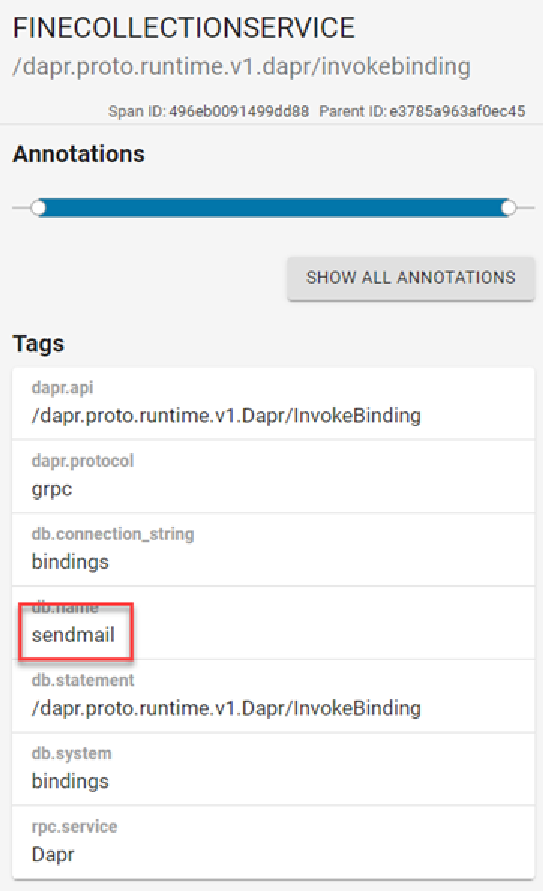
Figure 10-13. Output binding trace details.
Summary Detailed observability is critical to running a distributed system in production. Dapr provides different types of telemetry, including distributed tracing, logging, metrics, and health status. Dapr only produces telemetry for the Dapr system services and sidecars. Telemetry from your application code isn’t automatically included. You can however use a specific SDK like the OpenTelemetry SDK for .NET to emit telemetry from your application code.
Dapr telemetry is produced in an open-standards based format so that it can be ingested by a large set of available monitoring tools. Examples include Zipkin, Azure Application Insights, the ELK Stack, New Relic, and Grafana. See Monitor your application with Dapr in the Dapr documentation for tutorials on how to monitor your Dapr applications with specific monitoring back ends.
You’ll need a telemetry scraper that ingests telemetry and publishes it to the monitoring back end. Dapr can be configured to emit structured logging. Structured logging is favored as it can be indexed by back-end monitoring tools. Indexed logging enables users to execute rich queries when searching through the logging. Dapr offers a dashboard that presents information about the Dapr services and configuration.
• Azure Application Insights
• Open Telemetry
• Zipkin
• W3C Trace Context
• Jaeger
• New Relic
• Prometheus
• Grafana
• Open Telemetry SDK for .NET
• Fluentd
• ELK stack
• Seq
• Serilog
CHAPTER |
|---|
12
The Dapr secrets management building block Enterprise applications require secrets. Common examples include:
• A database connection string that contains a username and password.
• An API key for calling an external web API.
• A client certificate for authenticating to an external system. Secrets must be carefully managed so that they’re never disclosed outside of the application.
Not long ago, it was popular to store application secrets in a configuration file inside the application codebase. .NET developers will fondly recall the web.config file. While simple to implement, integrating secrets to along with code was far from secure. A common misstep was to include the file when pushing to a public GIT repository, exposing the secrets to the world.
A widely accepted methodology for constructing modern distributed applications is The TwelveFactor App. It describes a set of principles and best practices. Its third factor prescribes that configuration and secrets be externalized outside of the code base.
To address this concern, the .NET platform includes a Secret Manager feature that stores sensitive data in a physical folder outside of the project tree. While secrets are outside of source control, this feature doesn’t encrypt data. It’s designed for development purposes only.
A more modern and secure practice is to isolate secrets in a secrets management tool like Hashicorp Vault or Azure Key Vault. These tools enable you to store secrets externally, vary credentials across environments, and reference them from application code. However, each tool has its complexities and learning curve.
Dapr offers a building block that simplifies managing secrets.
The Dapr secrets management building block abstracts away the complexity of working with secrets and secret management tools.
• It hides the underlying plumbing through a unified interface.
• It supports various pluggable secret store components, which can vary between development and production.
• Applications don’t require direct dependencies on secret store libraries.
• Developers don’t require detailed knowledge of each secret store. Dapr handles all of the above concerns.
Access to the secrets is secured through authentication and authorization. Only an application with sufficient rights can access secrets. Applications running in Kubernetes can also use its built-in secrets management mechanism.
How it works
Applications use the secrets management building block in two ways:
• Retrieve a secret directly from the building block.
• Reference a secret indirectly from a Dapr component configuration.
Retrieving secrets directly is covered first. Referencing a secret from a Dapr component configuration file is addressed in a later section.
The application interacts with a Dapr sidecar when using the secrets management building block. The sidecar exposes the secrets API. The API can be called with either HTTP or gRPC. Use the following URL to call the HTTP API:
http://localhost: |
|---|
The URL contains the following segments:
•
•
•
•
[!NOTE] The above URL represents the native Dapr API call available to any development platform that supports HTTP or gRPC. Popular platforms like .NET, Java, and Go have their own custom APIs.
The JSON response contains the key and value of the secret.
Figure 11-1 shows how Dapr handles a request for the secrets API:
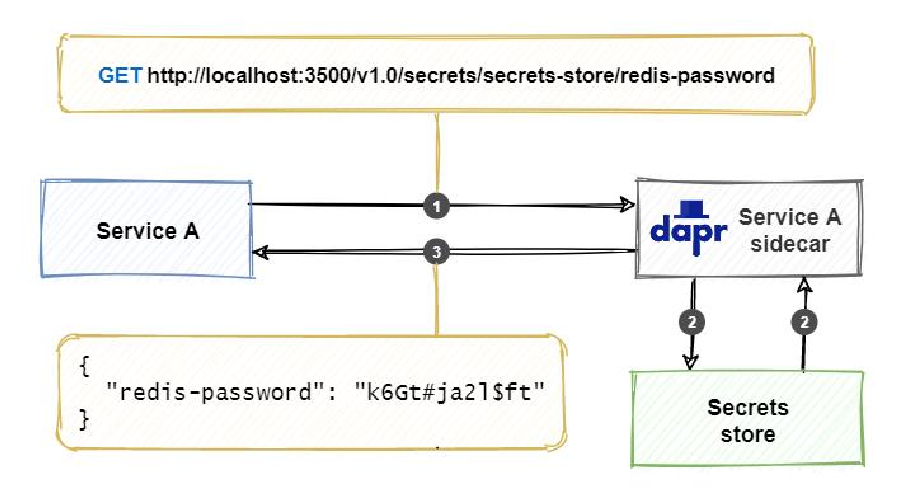
Figure 11-1. Retrieving a secret with the Dapr secrets API.
1. The service calls the Dapr secrets API, along with the name of the secret store, and secret to retrieve.
2. The Dapr sidecar retrieves the specified secret from the secret store.
3. The Dapr sidecar returns the secret information back to the service.
Some secret stores support storing multiple key/value pairs in a single secret. For those scenarios, the response would contain multiple key/value pairs in a single JSON response as in the following example:
GET http://localhost:3500/v1.0/secrets/secret-store/interestRates?metadata.version_id=3 |
|---|
{
} |
|---|
The Dapr secrets API also offers an operation to retrieve all the secrets the application has access to:
http://localhost: |
|---|
For .NET developers, the Dapr .NET SDK streamlines Dapr secret management. Consider the DaprClient.GetSecretAsync method. It enables you to retrieve a secret directly from any Dapr secret store with minimal effort. Here’s an example of fetching a connection string secret for a SQL Server database:
var metadata = new Dictionary |
|---|
Arguments for the GetSecretAsync method include:
• The name of the Dapr secret store component (‘secret-store’)
• The secret to retrieve (‘eshopsecrets’)
• Optional metadata key/value pairs (‘version_id=3’) The method responds with a dictionary object as a secret can contain multiple key/value pairs. In the example above, the secret named customerdb is referenced from the collection to return a connection string.
The Dapr .NET SDK also features a .NET configuration provider. It loads specified secrets into the underlying .NET configuration API. The running application can then reference secrets from the IConfiguration dictionary that is registered in ASP.NET Core dependency injection.
The secrets configuration provider is available from the Dapr.Extensions.Configuration NuGet package. The provider can be registered in the Program.cs of an ASP.NET Web API application:
var builder = WebApplication.CreateBuilder(args); builder.WebHost.ConfigureAppConfiguration(config => { var daprClient = new DaprClientBuilder().Build(); var secretDescriptors = new List new DaprSecretDescriptor("eshopsecrets") }; config.AddDaprSecretStore("secret-store", secretDescriptors, daprClient); }); |
|---|
The above example loads the eshopsecrets secrets collection into the .NET configuration system at startup. Registering the provider requires an instance of DaprClient to invoke the secrets API on the Dapr sidecar. The other arguments include the name of the secret store and a DaprSecretDescriptor object with the name of the secret.
Once loaded, you can retrieve secrets directly from application code:
public void GetCustomer(IConfiguration config) { var connectionString = config["eshopsecrets"]["customerdb"]; } |
|---|
Secret store components
The secrets management building block supports several secret store components. At the time of writing, the following secret stores are available:
• AlibabaCloud OOS Parameter Store
• AWS Secrets Manager
• AWS SSM Parameter Store
• Azure Key Vault
• GCP Secret Manager
• HashiCorp Vault
• Kubernetes secrets
• Local environment variables
• Local file
Important The local environment variables and file components are designed for development workloads only. |
|---|
The following sections show how to configure a secret store.
You configure a secret store using a Dapr component configuration file. The typical structure of the file is shown below:
apiVersion: dapr.io/v1alpha1 kind: Component metadata: name: [component name] namespace: [namespace] spec: type: secretstores.[secret store type] version: [secret store version] metadata: - name: [property name] value: [property value] |
|---|
All Dapr component configuration files require a name along with an optional namespace value. Additionally, the type field in the spec section specifies the type of secret store component. The properties in the metadata section differ per secret store.
As mentioned earlier in this chapter, applications can also consume secrets by referencing them in component configuration files. Consider a state management component that uses Redis cache for storing state:
apiVersion: dapr.io/v1alpha1 kind: Component metadata: name: eshop-basket-statestore namespace: eshop spec: type: state.redis version: v1 metadata:
|
|---|
The above configuration file contains a clear-text password for connecting to the Redis server. Hardcoded passwords are always a bad idea. Pushing this configuration file to a public repository would expose the password. Storing the password in a secret store would dramatically improve this scenario.
The following examples demonstrate this using several different secret stores.
The local file component is designed for development scenarios. It stores secrets on the local filesystem inside a JSON file. Here’s an example named eshop-secrets.json. It contains a single secret - a password for Redis:
{ "eShopRedisPassword": "e$h0p0nD@pr" } |
|---|
You place this file in a components folder that you specify when running the Dapr application. The following secret store configuration file consumes the JSON file as a secret store. It’s also placed in the components folder:
apiVersion: dapr.io/v1alpha1 kind: Component metadata: name: eshop-local-secret-store namespace: eshop spec: type: secretstores.local.file version: v1 metadata:
|
|---|
The component type is secretstore.local.file. The secretsFile metadata element specifies the path to the secrets file.
ImportantThe path to a secrets file can be a absolute or relative path. The relative path is based on the folder in which the application starts. In the example, the components folder is a sub-folder of the directory that contains the .NET application. |
|---|
From the application folder, start the Dapr application specifying the components path as a commandline argument:
dapr run --app-id basket-api --components-path ./components dotnet run |
|---|
NoteThis above example applies to running Dapr in self-hosted mode. For Kubernetes hosting, consider using volume mounts. |
|---|
The nestedSeparator in a Dapr configuration file specifies a character to flatten a JSON hierarchy. Consider the following snippet:
{ "redisPassword": "some password", "connectionStrings": { "customerdb": "some connection string", "productdb": "some connection string" } } |
|---|
Using a colon as a separator, you can retrieve the customerdb connection-string using the key connectionStrings:customerdb.
Note The colon : is the default separator value. |
|---|
In the next example, a state management configuration file references the local secret store component to obtain the password for connecting to the Redis server:
apiVersion: dapr.io/v1alpha1 kind: Component metadata: name: eshop-basket-statestore namespace: eshop spec: type: state.redis version: v1 metadata:
name: eShopRedisPassword key: eShopRedisPassword auth: secretStore: eshop-local-secret-store |
|---|
The secretKeyRef element references the secret containing the password. It replaces the earlier cleartext value. The secret name and the key name, eShopRedisPassword, reference the secret. The name of the secret management component eshop-local-secret-store is found in the auth metadata element.
You might wonder why eShopRedisPassword is identical for both the name and key in the secret reference. In the local file secret store, secrets aren’t identified with a separate name. The scenario will be different in the next example using Kubernetes secrets.
This second example focuses on a Dapr application running in Kubernetes. It uses the standard secrets mechanism that Kubernetes offers. Use the Kubernetes CLI (kubectl) to create a secret named eshopredis-secret that contains the password:
kubectl create secret generic eshopsecrets --from-literal=redisPassword=e$h0p0nD@pr -n eshop |
|---|
Once created, you can reference the secret in the component configuration file for state management:
apiVersion: dapr.io/v1alpha1 kind: Component metadata: name: eshop-basket-statestore namespace: eshop spec: type: state.redis version: v1 metadata:
name: eshopsecrets key: redisPassword auth: secretStore: kubernetes |
|---|
The secretKeyRef element specifies the name of the Kubernetes secret and the secret’s key, eshopsecrets, and redisPassword respectively. The auth metadata section instructs Dapr to use the Kubernetes secrets management component.
Note Auth is the default value when using Kubernetes secrets and can be omitted. |
|---|
In a production setting, secrets are typically created as part of an automated CI/CD pipeline. Doing so ensures only people with sufficient permissions can access and change the secrets. Developers create configuration files without knowing the actual value of the secrets.
The next example is geared toward a real-world production scenario. It uses Azure Key Vault as the secret store. Azure Key Vault is a managed Azure service that enables secrets to be stored securely in the cloud.
For this example to work, the following prerequisites must be satisfied:
• You’ve secured administrative access to an Azure subscription.
• You’ve provisioned an Azure Key Vault named eshopkv that holds a secret named redisPassword that contains the password for connecting to the Redis server.
• You’ve created service principal in Azure Active Directory.
• You’ve installed an X509 certificate for this service principal (containing both the public and private key) on the local filesystem.
NoteA service principal is an identity that can be used by an application to authenticate an Azure service. The service principal uses a X509 certificate. The application uses this certificate as a credential to authenticate itself. |
|---|
The Dapr Azure Key Vault secret store documentation provides step-by-step instructions to create and configure a Key Vault environment.
Use Key Vault when running in self-hosted mode Using Azure Key Vault in Dapr self-hosted mode requires the following component configuration file:
apiVersion: dapr.io/v1alpha1 kind: Component metadata: name: eshop-azurekv-secret-store namespace: eshop spec: type: secretstores.azure.keyvault version: v1 metadata:
|
|---|
The secret store type is secretstores.azure.keyvault. The metadata element provides access to the Key Vault with the following properties:
• The vaultName contains the name of the Azure Key Vault.
• The spnTenantId contains the tenant ID of the service principal used to authenticate against the Key Vault.
• The spnClientId contains the app ID of the service principal used to authenticate against the Key Vault.
• The spnCertificateFile contains the path to the certificate file for the service principal to authenticate against the Key Vault.
Tip You can copy the service principal information from the Azure portal or Azure CLI . |
|---|
Now the application can retrieve the Redis password from the Azure Key Vault.
Consuming Azure Key Vault with Dapr and Kubernetes also requires a service principal to authenticate against the Azure Key Vault.
First, create a Kubernetes secret that contains a certificate file using the kubectl CLI tool:
kubectl create secret generic [k8s_spn_secret_name] --fromfile=[pfx_certificate_file_local_path] -n eshop |
|---|
The command requires two command-line arguments:
• [k8s_spn_secret_name] is the secret name in Kubernetes secret store.
• [pfx_certificate_file_local_path] is the path of X509 certificate file.
Once created, you can reference the Kubernetes secret in the secret store component configuration file:
apiVersion: dapr.io/v1alpha1 kind: Component metadata: name: eshop-azurekv-secret-store namespace: eshop spec: type: secretstores.azure.keyvault version: v1 metadata:
name: [k8s_spn_secret_name] key: [pfx_certificate_file_local_name] auth: secretStore: kubernetes |
|---|
At this point, an application running in Kubernetes can retrieve the Redis password from the Azure Key Vault.
ImportantIt’s critical to keep the X509 certificate file for the service principal in a safe place. It’s best to place it in a well-known folder outside the source-code repository. The configuration file can then reference the certificate file from this well-known folder. On a local development machine, you’re responsible for copying the certificate to the folder. For automated deployments, the pipeline will copy the certificate to the machine where the application is deployed. It’s a best practice to use a different service principal per environment. Doing so prevents the service principal from a DEVELOPMENT environment to access secrets in a PRODUCTION environment. |
|---|
When running in Azure Kubernetes Service (AKS), it’s preferable to use an Azure Managed Identity for authenticating against Azure Key Vault. Managed identities are outside of the scope of this book, but explained in the Azure Key Vault with managed identities documentation.
Secret scopes allow you to control which secrets your application can access. You configure scopes in a Dapr sidecar configuration file. The Dapr configuration documentation provides instructions for scoping secrets.
Here’s an example of a Dapr sidecar configuration file that contains secret scopes:
apiVersion: dapr.io/v1alpha1 kind: Configuration metadata: name: dapr-config namespace: eshop spec: tracing: samplingRate: "1" secrets: scopes: - storeName: eshop-azurekv-secret-store defaultAccess: allow deniedSecrets: ["redisPassword", "apiKey"] |
|---|
Property |
Value |
Description |
|---|---|---|
defaultAccess |
allow or deny |
Allows or denies access to all secrets in the specified secret store. This property is optional with a default value of allow. |
allowedSecrets |
List of secret keys |
Secrets specified in the array will be accessible. This property is optional. |
deniedSecrets |
List of secret keys |
Secrets specified in the array will NOT be accessible. This property is optional. |
The allowedSecrets and deniedSecrets properties take precedence over the defaultAccess property. Imagine specifying defaultAccess: allowed and an allowedSecrets list. In this case, only the secrets in the allowedSecrets list would be accessible by the application.
In Dapr Traffic Control sample app, the secrets management building block is used in several places. Secrets are retrieved from code and referenced by Dapr component configuration files. Figure 10-2 shows the conceptual architecture of the Dapr Traffic Control sample application. The Dapr secrets management building block is used in flows marked with number 6 in the diagram:
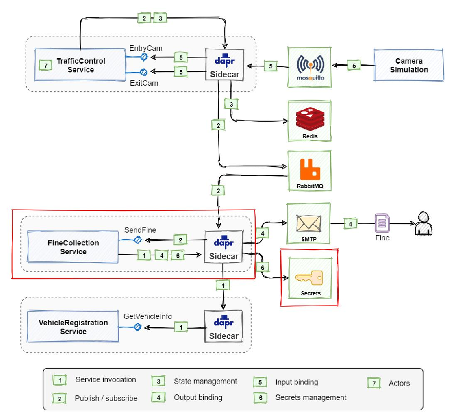
Figure 10-2. Conceptual architecture of the Dapr Traffic Control sample application.
The FineCollection service uses an SMTP output binding for sending emails (see the Bindings chapter). The email component file consumes the secrets management building block to retrieve credentials to connect to the SMTP server. To calculate the fine for a speeding violation, the service uses a fictitious FineCalculator component that requires a license key. It retrieves this license key from the secrets management building block.
The TrafficControl service stores vehicle information in a Redis state store (see the State management chapter). It uses the secrets management building block for retrieving credentials to connect to the Redis server.
Because the Traffic Control sample application can run in self-hosted mode or in Kubernetes, there are two ways for specifying secrets:
• A local JSON file
• A Kubernetes secret
Examine the secrets-file.yaml component configuration file in the dapr/components folder:
apiVersion: dapr.io/v1alpha1 kind: Component metadata: name: trafficcontrol-secrets namespace: dapr-trafficcontrol spec: type: secretstores.local.file version: v1 metadata:
scopes:
|
|---|
The file describes a secrets management component entitled trafficcontrol-secrets. The type element is set to local.file and the secretsFile to ../dapr/components/secrets.json. For selfhosted mode, use a Local file component. The path must be relatively specified from the folder from which the service starts. The secrets file contains a JSON representation of the secrets:
{ "state":{ "redisPassword": "" }, "smtp":{ "user": "_username", "password": "_password" }, "finecalculator":{ "licensekey": "HX783-K2L7V-CRJ4A-5PN1G" } } |
|---|
In the sample application the Redis server is used without a password. To connect to the SMTP server, the credentials are _username and _password. The license key for the FineCalculator license key is a randomly generated string.
While secrets are stored at nested levels, the secrets management building block flattens this hierarchy when the file is read. It uses a period as a level separator (as specified in the nestedSeparator field in the component configuration file). This construct enables you to reference secrets with a flattened name, for example: smtp.user. When running in Kubernetes, the secrets are specified using the built-in Kubernetes secrets store. Examine the following secrets.yaml Kubernetes manifest file in the k8s folder:
apiVersion: v1 kind: Secret metadata:
name: trafficcontrol-secrets namespace: dapr-trafficcontrol
type: Opaque data:
smtp.user: X3VzZXJuYW1l smtp.password: X3Bhc3N3b3Jk finecalculator.licensekey: SFg3ODMtSzJMN1YtQ1JKNEEtNVBOMUc=
The component is also named trafficcontrol-secrets. Secrets are stored as Base64 encoded strings.
Important Base64 representations encode, but do not encrypt data. Base64 isn’t secure for production scenarios. |
|---|
The following paragraphs describe how secrets are used in the Traffic Control sample application.
Examine the email.yaml component configuration file located in the dapr/components folder:
apiVersion: dapr.io/v1alpha1 kind: Component metadata: name: sendmail namespace: dapr-trafficcontrol spec: type: bindings.smtp version: v1 metadata:
auth: secretStore: trafficcontrol-secrets scopes: - finecollectionservice |
|---|
The auth section references the secrets management component named trafficcontrol-secrets. The user and password entries in the binding metadata reference the secrets: smtp.user and smtp.password respectively.
When running in Kubernetes, the built-in Kubernetes secrets store is used. The email.yaml manifest file found in the k8s folder references the Kubernetes secret for retrieving the credentials for connecting to the smtp server:
apiVersion: dapr.io/v1alpha1 kind: Component
metadata: name: sendmail namespace: dapr-trafficcontrol
spec: type: bindings.smtp version: v1 metadata:
- name: host value: mailserver
- name: port value: 25
- name: user secretKeyRef:
name: trafficcontrol-secrets key: smtp.user
- name: password secretKeyRef:
name: trafficcontrol-secrets key: smtp.password
- name: skipTLSVerify value: true
scopes:
- finecollectionservice
Unlike the local secrets store, the Kubernetes store doesn’t explicitly specify a secrets management component to use with the auth section. Instead, the default is the built-in Kubernetes secrets store.
Next, examine the statestore.yaml component configuration file in the dapr/components folder:
apiVersion: dapr.io/v1alpha1 kind: Component metadata: name: statestore namespace: dapr-trafficcontrol spec: type: state.redis version: v1 metadata:
auth: secretStore: trafficcontrol-secrets scopes: - trafficcontrolservice |
|---|
Once again, the auth section references the secrets management component named trafficcontrol-secrets. The redisPassword entries in the binding metadata reference the secret state.redisPassword.
The FineCollection service uses a component that calculates the fine based on the information of a speeding violation. This component is implemented as a domain service and is abstracted by the IFineCalculator interface:
public interface IFineCalculator { public int CalculateFine(string licenseKey, int violationInKmh); } |
|---|
The CalculateFine method expects a string containing a licenseKey as its first argument. This key unlocks the third-party component used by the implementation. To keep the example simple, the implementation hard-codes a series of if statements. You can find the implementation in the HardCodedFineCalculator class in the DomainsServices folder:
public class HardCodedFineCalculator : IFineCalculator { public int CalculateFine(string licenseKey, int violationInKmh) { if (licenseKey != "HX783-K2L7V-CRJ4A-5PN1G") { throw new InvalidOperationException("Invalid license-key specified."); } int fine = 9; // default administration fee if (violationInKmh < 5 ) { fine += 18; } else if (violationInKmh >= 5 && violationInKmh < 10 ) { fine += 31; } // ... else if (violationInKmh == 35) { fine += 372; } else {// violation above 35 KMh will be determined by the prosecutor return 0; } return fine;} } |
|---|
The implementation simulates a check on the licenseKey that is passed in. The CollectionController of the FineCollection service must pass in the correct license key argument when calling the CalculateFine method. It retrieves the license key from the Dapr secrets management building block that is exposed by the Dapr client in the Dapr SDK for .NET. If you examine the constructor of the CollectionController, you can see the call:
// set finecalculator component license-key if (_fineCalculatorLicenseKey == null) { bool runningInK8s = Convert.ToBoolean(Environment.GetEnvironmentVariable("DOTNET_RUNNING_IN_CONTAINER") ?? "false"); var metadata = new Dictionary if (runningInK8s) { var k8sSecrets = daprClient.GetSecretAsync( "kubernetes", "trafficcontrol-secrets", metadata).Result; _fineCalculatorLicenseKey = k8sSecrets["finecalculator.licensekey"]; } else {var secrets = daprClient.GetSecretAsync( "trafficcontrol-secrets", "finecalculator.licensekey", metadata).Result; _fineCalculatorLicenseKey = secrets["finecalculator.licensekey"]; } } |
|---|
The code determines whether the service is running in Kubernetes or self-hosted mode. This check is necessary because a different secrets management component must be used for each situation. The first argument of the GetSecretAsync method is the name of the Dapr component. The second argument is the name of the secret. The metadata passed in as the third argument specifies the namespace that contains the secret. The value of the finecalculator.licensekey secret is stored in a private field for later use.
Using Dapr secrets management offers several benefits:
1. No sensitive information is stored in code or application configuration files.
2. No need to learn any new API for interacting with a secrets store.
The Dapr secrets management building block provides capabilities for storing and retrieving sensitive configuration settings like passwords and connection-strings. It keeps secrets private and prevents them from being accidentally disclosed.
The building block supports several different secret stores and hides their complexity with the Dapr secrets API.
The Dapr .NET SDK provides a DaprClient object to retrieve secrets. It also includes a .NET configuration provider that adds secrets to the .NET configuration system. Once loaded, you can consume these secrets in your .NET code.
You can use secret scopes to control access to specific secrets.
• Beyond the Twelve-Factor Application
CHAPTER |
|---|
13
Dapr reference application
Over the course of this book, you’ve learned about the foundational benefits of Dapr. You saw how Dapr can help you and your team construct distributed applications while reducing architectural and operational complexity. Along the way, you’ve had the opportunity to build some small Dapr apps. Now, it’s time to explore how a more complex application can benefit from Dapr.
But, first a little history.
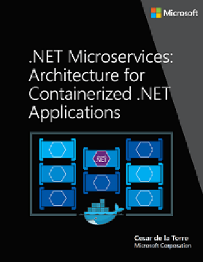
Figure 12-1. .NET Microservices: Architecture for Containerized .NET Applications.
The book dove deep into the principles, patterns, and best practices for building distributed applications. It included a full-featured microservice reference application that showcased the architectural concepts. Entitled, eShopOnContainers, the application hosts an e-Commerce storefront that sells various items, including clothing and coffee mugs. Built in .NET, the application is crossplatform and can run in either Linux or Windows containers. Figure 12-2 shows the original eShop architecture.
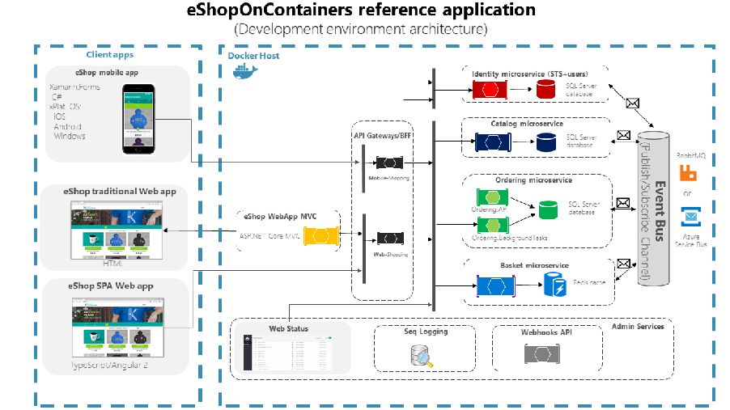
Figure 12-2. Original ShopOnContainers reference application. As you can see, eShopOnContainers includes many moving parts:
1. Three different frontend clients.
2. An application gateway to abstract backend services from the frontend.
3. Several backend core microservices.
4. An event bus component that enables asynchronous pub/sub messaging.
The eShopOnContainers reference application has been widely accepted across the .NET community and used to model many large commercial microservice applications.
An updated version of eShop accompanies this book. It’s called eShopOnDapr. The update evolves the earlier eShopOnContainers application by integrating Dapr building blocks. Figure 12-3 shows the new solution architecture:
[eShopOnDapr reference application architecture](#g r& < p r mгz !c(* ώ 9 >4)
Figure 12-3. eShopOnDapr reference application architecture. While eShopOnDapr focuses on Dapr, the architecture has also been streamlined and simplified.
1. A Single Page Application running on Blazor WebAssembly sends user requests to an API gateway.
2. The API gateway abstracts the backend core microservices from the frontend client. It’s implemented using Envoy, a high performant, open-source service proxy. Envoy routes incoming
requests to backend microservices. Most requests are simple CRUD operations (for example, get the list of brands from the catalog) and handled by a direct call to a backend microservice.
3. Other requests are more logically complex and require multiple microservice calls to work together. For these cases, eShopOnDapr implements an aggregator microservice that orchestrates a workflow across those microservices needed to complete the operation.
4. The core backend microservices implement the required functionality for an e-Commerce store. Each is self-contained and independent of the others. Following widely accepted domain decomposition patterns, each microservice isolates a specific business capability:
– The basket service manages the customer’s shopping basket experience.
– The catalog service manages product items available for sale.
– The identity service manages authentication and identity.
– The ordering service handles all aspects of placing and managing orders.
– The payment service transacts the customer’s payment.
5. Adhering to best practices, each microservice maintains its own persistent storage. The application doesn’t share a single datastore.
6. Finally, the event bus wraps the Dapr publish/subscribe components. It enables asynchronous publish/subscribe messaging across microservices. Developers can plug in any Dapr-supported message broker component.
In eShopOnDapr, Dapr building blocks replace a large amount of complex, error-prone plumbing code.
Figure 12-4 shows the Dapr integration in the application.
Figure 12-4. Dapr integration in eShopOnDapr.
The above figure shows the Dapr building blocks (represented as green numbered boxes) that each eShopOnDapr service consumes.
1. The API gateway and web shopping aggregator services use the service invocation building block to invoke methods on the backend services.
2. The backend services communicate asynchronously using the publish & subscribe building block.
3. The basket service uses the state management building block to store the state of the customer’s shopping basket.
4. The original eShopOnContainers demonstrates DDD concepts and patterns in the ordering service. eShopOnDapr uses the actor building block as an alternative implementation. The turnbased access model of actors makes it easy to implement a stateful ordering process with support for cancellation.
5. The ordering service sends order confirmation e-mails using the bindings building block.
6. Secret management is done by the secrets building block.
The following sections provide more detail on how the Dapr building blocks are applied in eShopOnDapr.
In eShopOnDapr, the Basket service uses the state management building block to persist the contents of the customer’s shopping basket. The original eShopOnContainers architecture used an IBasketRepository interface to read and write data for the basket service. The RedisBasketRepository class provided the implementation using Redis as the underlying data store. To compare and contrast, the original eShopOnContainers implementation is presented below:
public class RedisBasketRepository : IBasketRepository { private readonly ConnectionMultiplexer _redis; private readonly IDatabase _database; public RedisBasketRepository(ConnectionMultiplexer redis) { _redis = redis; _database = redis.GetDatabase(); } public async Task var data = await _database.StringGetAsync(customerId); if (data.IsNullOrEmpty) { return null;} return JsonConvert.DeserializeObject } // ... } |
|---|
This code uses the third party StackExchange.Redis NuGet package. The following steps are required to load the shopping basket for a given customer:
1. Inject a Redis ConnectionMultiplexer into the constructor. The ConnectionMultiplexer is registered with the dependency injection framework in the Program.cs file:
services.AddSingleton var settings = spGetRequiredService }); |
|---|
1. Use the ConnectionMultiplexer to create an IDatabase instance in each consuming class.
2. Use the IDatabase instance to execute a Redis StringGet call using the given customerId as the key.
3. Check if data is loaded from Redis; if not, return null.
4. Deserialize the data from Redis to a CustomerBasket object and return the result.
In the updated eShopOnDapr reference application, a new DaprBasketRepository class replaces the RedisBasketRepository class:
public class DaprBasketRepository : IBasketRepository { private const string StoreName = "eshop-statestore"; private readonly DaprClient _daprClient; public DaprBasketRepository(DaprClient daprClient) { _daprClient = daprClient; } public Task _daprClient.GetStateAsync } |
|---|
The updated code uses the Dapr .NET SDK to read and write data using the state management building block. The new steps to load the basket for a customer are dramatically simplified:
1. Inject a DaprClient into the constructor. The DaprClient is registered with the dependency injection framework in the Program.cs`_ file.
2. Use the DaprClient.GetStateAsync method to load the customer’s shopping basket items from the configured state store and return the result.
The updated implementation still uses Redis as the underlying data store. But, note how Dapr abstracts the StackExchange.Redis references and complexity from the application. The application no longer requires a direct dependency on Redis. A Dapr configuration file is all that’s needed:
apiVersion: dapr.io/v1alpha1 kind: Component metadata: name: eshop-statestore namespace: eshop spec: type: state.redis version: v1 metadata:
name: redisPassword auth: secretStore: eshop-secretstore |
|---|
The Dapr implementation also simplifies changing the underlying data store. Switching to Azure Table Storage, for example, requires only changing the contents of the configuration file. No code changes are necessary.
Figure 12-5. gRPC and HTTP/REST calls in eShopOnContainers. Note the steps from the previous figure:
2. The API gateway forwards simple CRUD (Create, Read, Update, Delete) requests directly to a core backend service using HTTP/REST.
3. The API gateway forwards complex requests that involve coordinated backend service calls to the web shopping aggregator service.
4. The aggregator service uses gRPC to call core backend services.
In the updated eShopOnDapr implementation, Dapr sidecars are added to the services and API gateway. Figure 12-6 show the updated architecture:
Figure 12-6. Updated eShop architecture using Dapr. Note the updated steps from the previous figure:
1. The frontend still uses HTTP/REST to call the API gateway.
2. The API gateway forwards HTTP requests to its Dapr sidecar.
3. The API gateway sidecar sends the request to the sidecar of the aggregator or backend service.
4. The aggregator service uses the Dapr .NET SDK to call backend services through their sidecar architecture.
Dapr implements calls between sidecars with gRPC. So even if you’re invoking a remote service with HTTP/REST semantics, a part of the transport is implemented using gRPC.
The eShopOnDapr reference application benefits from the Dapr service invocation building block. The benefits also include service discovery, automatic mTLS, and built-in observability.
Both the original and updated eShop application leverage the Envoy proxy as an API gateway. Envoy is an open-source proxy and communication bus that is popular across modern distributed applications. Originating from Lyft, Envoy is owned and maintained by the Cloud-Native Computing Foundation.
In the original eShopOnContainers implementation, the Envoy API gateway forwarded incoming HTTP requests directly to aggregator or backend services. In the new eShopOnDapr, the Envoy proxy forwards the request to a Dapr sidecar.
Envoy is configured using a YAML definition file to control the proxy’s behavior. To enable Envoy to forward HTTP requests to a Dapr sidecar container, a dapr cluster is added to the configuration. The cluster configuration contains a host that points to the HTTP port on which the Dapr sidecar is listening:
clusters:
|
|---|
The Envoy route configuration is updated to rewrite incoming requests as calls to the Dapr sidecar (pay close attention to the prefix_rewrite key/value pair):
- name: "c-short" match: prefix: "/c/" route: auto_host_rewrite: true prefix_rewrite: "/v1.0/invoke/catalog-api/method/" cluster: dapr |
|---|
Consider a scenario where the frontend client wants to retrieve a list of catalog items. The Catalog API provides an endpoint for getting the catalog items:
[Route("api/v1/[controller]")] [ApiController] public class CatalogController : ControllerBase { [HttpGet("items/by_page")] [ProducesResponseType(typeof(PaginatedItemsViewModel), (int)HttpStatusCode.OK)] public async Task [FromQuery] int typeId = -1, [FromQuery] int brandId = -1, [FromQuery] int pageSize = 10, [FromQuery] int pageIndex = 0) { // ... } |
|---|
First, the frontend makes a direct HTTP call to the Envoy API gateway.
GET http:// |
|---|
The Envoy proxy matches the route, rewrites the HTTP request, and forwards it to the invoke API of its Dapr sidecar:
GET http://127.0.0.1:3500/v1.0/invoke/catalog-api/method/api/v1/catalog/items |
|---|
The sidecar handles service discovery and routes the request to the Catalog API sidecar. Finally, the sidecar calls the Catalog API to execute the request, fetch catalog items, and return a response:
GET http://localhost/api/v1/catalog/items |
|---|
Most calls from the eShop frontend are simple CRUD calls. The API gateway forwards them to a single service for processing. Some scenarios, however, require multiple backend services to work together to complete a request. For the more complex calls, the web shopping aggregator service mediates the cross service workflow. Figure 12-7 show the processing sequence of adding an item to your shopping basket:
Figure 12-7. Backend call requiring multiple services.
The aggregator service first retrieves catalog items from the Catalog API. It then validates item availability and pricing. Finally, the aggregator service updates the shopping basket by calling the Basket API.
The aggregator service contains a BasketController that provides an endpoint for updating the shopping basket:
[Route("api/v1/[controller]")] [Authorize] [ApiController] public class BasketController : ControllerBase {
private readonly ICatalogService _catalog; private readonly IBasketService _basket;
[HttpPost] [HttpPut] [ProducesResponseType((int)HttpStatusCode.BadRequest)] [ProducesResponseType(typeof(BasketData), (int)HttpStatusCode.OK)] public async Task
[FromBody] UpdateBasketRequest data, [FromHeader] string authorization)
{
BasketData basket;
if (data.Items is null || !data.Items.Any()) {
basket = new();
// Get the item details from the catalog API. var catalogItems = await _catalog.GetCatalogItemsAsync(
data.Items.Select(x => x.ProductId));
if (catalogItems == null) {
return BadRequest(
"Catalog items were not available for the specified items in the basket.");
} // Check item availability and prices; store results in basket object. basket = CreateValidatedBasket(data.Items, catalogItems);
} // Save the updated shopping basket. await _basket.UpdateAsync(basket, authorization.Substring("Bearer ".Length)); return basket;
} // ...
} The UpdateAllBasketAsync method gets the Authorization header of the incoming request using a FromHeader attribute. The Authorization header contains the access token that is needed to call protected backend services. After receiving a request to update the basket, the aggregator service calls the Catalog API to get the item details. The Basket controller uses an injected ICatalogService object to make that call and communicate with the Catalog API. The original implementation of the interface used gRPC to make the call. The updated implementation uses Dapr service invocation with HttpClient support:
public class CatalogService : ICatalogService { private readonly HttpClient _httpClient; public CatalogService(HttpClient httpClient) { _httpClient = httpClient; } public Task var requestUri = $"api/v1/catalog/items/by_ids?ids={string.Join(",", ids)}"; return _httpClient.GetFromJsonAsync } // ... } |
|---|
Notice how no Dapr-specific code is required to make the service invocation call. All communication is done using the standard HttpClient object.
The Dapr HttpClient is configured for the CatalogService class on program startup:
builder.Services.AddSingleton |
|---|
The other call made by the aggregator service is to the Basket API. It only allows authorized requests. The access token is passed along in an Authorization request header to ensure the call succeeds:
public class BasketService : IBasketService { public Task UpdateAsync(BasketData currentBasket, string accessToken) { var request = new HttpRequestMessage(HttpMethod.Post, "api/v1/basket") { Content = JsonContent.Create(currentBasket) }; request.Headers.Authorization = new AuthenticationHeaderValue("Bearer", accessToken); var response = await _httpClient.SendAsync(request); response.EnsureSuccessStatusCode(); } // ... } |
|---|
In this example too, only standard HttpClient functionality is used to call the service. This allows developers who are already familiar with HttpClient to reuse their existing skills. It even enables existing HttpClient code to use Dapr service invocation without making any changes.
Both eShopOnContainers and eShopOnDapr use the pub/sub pattern for communicating integration events across microservices. Integration events include:
• When a user checks-out a shopping basket.
• When a payment for an order has succeeded.
• When the grace-period of a purchase has expired.
Note Think of an Integration Event as an event that takes place across multiple services. |
|---|
Eventing in eShopOnContainers is based on the following IEventBus interface:
public interface IEventBus {void Publish(IntegrationEvent integrationEvent); void Subscribe where TEvent : IntegrationEvent where THandler : IIntegrationEventHandler } |
|---|
Concrete implementations of this interface for both RabbitMQ and Azure Service Bus are found in eShopOnContainers. Each implementation included a large amount of custom plumbing code that was complex to understand and difficult to maintain.
The newer eShopOnDapr significantly simplifies pub/sub behavior by using Dapr. To start, the IEventBus interface was reduced to a single method:
public interface IEventBus {Task PublishAsync(IntegrationEvent integrationEvent); } |
|---|
In eShopOnDapr, a single DaprEventBus implementation can support any Dapr-supported message broker. The following code block shows the simplified Publish method. Note how the PublishAsync method uses the Dapr client to publish an event:
public class DaprEventBus : IEventBus { private const string DAPR_PUBSUB_NAME = "pubsub"; private readonly DaprClient _dapr; private readonly ILogger _logger; public DaprEventBus(DaprClient dapr, ILogger _dapr = dapr; _logger = logger; } public async Task PublishAsync(IntegrationEvent integrationEvent) { var topicName = integrationEvent.GetType().Name; _logger.LogInformation( "Publishing event {@Event} to {PubsubName}.{TopicName}", integrationEvent, DAPR_PUBSUB_NAME, topicName); // We need to make sure that we pass the concrete type to PublishEventAsync, // which can be accomplished by casting the event to dynamic. This ensures // that all event fields are properly serialized. await _dapr.PublishEventAsync(DAPR_PUBSUB_NAME, topicName, (object)integrationEvent); } } |
|---|
As you can see in the code snippet, the topic name is derived from event type’s name. Because all eShop services use the IEventBus abstraction, retrofitting Dapr required absolutely no change to the mainline application code.
ImportantThe Dapr SDK uses System.Text.Json to serialize/deserialize messages. However, System.Text.Json doesn’t serialize properties of derived classes by default. In the eShop code, an event is sometimes explicitly declared as an IntegrationEvent, the base class for integration events. This construct allows the concrete event type to be determined dynamically at run time based on business logic. As a result, the event is serialized using the type information of the base class and not the derived class. To force System.Text.Json to serialize the properties of both the base and derived class, the code uses object as the generic type parameter. For more information, see the .NET documentation. |
|---|
With Dapr, pub/sub infrastructure code is dramatically simplified. The application doesn’t need to distinguish between message brokers. Dapr provides this abstraction for you. If needed, you can easily swap out message brokers or configure multiple message broker components with no code changes.
The earlier eShopOnContainers app contains SubscriptionManagers to handle the subscription implementation for each message broker. Each manager contains complex message broker-specific code for handling subscription events. To receive events, each service has to explicitly register a handler for each event-type.
eShopOnDapr streamlines the plumbing for event subscriptions by using Dapr ASP.NET Core integration. Each event is handled by an action method in a controller. A Topic attribute decorates the action method with the name of the corresponding topic. Here’s a code snippet taken from the PaymentService:
[Route("api/v1/[controller]")] [ApiController] public class IntegrationEventController : ControllerBase { private const string DAPR_PUBSUB_NAME = "pubsub"; [HttpPost("OrderStatusChangedToValidated")] [Topic(DAPR_PUBSUB_NAME, nameof(OrderStatusChangedToValidatedIntegrationEvent))] public Task HandleAsync( OrderStatusChangedToValidatedIntegrationEvent integrationEvent, [FromServices] OrderStatusChangedToValidatedIntegrationEventHandler handler) => handler.Handle(integrationEvent); } |
|---|
In the Topic attribute, the name of the .NET type of the event is used as the topic name. For handling the event, an event handler that already existed in the earlier eShopOnContainers code base is resolved using dependency injection and invoked. In the previous example, messages received from the OrderStatusChangedToValidatedIntegrationEvent topic invoke the existing OrderStatusChangedToValidatedIntegrationEventHandler event handler. Because Dapr implements the underlying plumbing for subscriptions and message brokers, a large amount of original code became obsolete and was removed from the code-base. Much of this code was complex to understand and challenging to maintain.
Within the eShopOnDapr repository, a deployment folder contains files for deploying the application using different deployment modes: Docker Compose and Kubernetes. A dapr folder exists within each of these folders that holds a components folder. This folder holds a file eshop-pubsub.yaml. It specifies the Dapr pub/sub component that the application will use for pub/sub behavior. As you saw in the earlier code snippets, the name of the pub/sub component used is pubsub. Here’s the content of the eshop-pubsub.yaml file in the deployment/compose/dapr/components folder:
apiVersion: dapr.io/v1alpha1 kind: Component metadata: name: pubsub namespace: eshop spec: type: pubsub.rabbitmq version: v1 metadata: - name: host value: "amqp://rabbitmq:5672" |
|---|
The configuration specifies RabbitMQ as the underlying infrastructure. To change message brokers, you need only to configure a different message broker, such as NATS or Azure Service Bus and update the yaml file. With Dapr, there are no changes to your mainline service code when switching message brokers.
You can also easily use multiple message brokers in a single application. Many times a system will handle workloads with different characteristics. One event may occur 10 times a day, but another event occurs 5,000 times per second. You may benefit by partitioning messaging traffic to different message brokers. With Dapr, you can add multiple pub/sub component configurations, each with a different name.
eShopOnDapr uses the bindings building block for sending e-mails. When a user places an order, the application sends an order confirmation e-mail using the SMTP output binding. You can find this binding in the eshop-email.yaml file in the components folder:
apiVersion: dapr.io/v1alpha1 kind: Component metadata:
name: sendmail namespace: eshop
spec: type: bindings.smtp version: v1 metadata:
- name: host value: maildev
- name: port value: 25
- name: user secretKeyRef:
name: Smtp.User
key: Smtp.User
- name: password secretKeyRef:
name: Smtp.Password key: Smtp.Password
- name: skipTLSVerify value: true
auth:
secretStore: eshop-secretstore scopes:
- ordering-api
Dapr gets the username and password for connecting to the SMTP server from a secret reference. This approach keeps secrets outside of the configuration file. To learn more about Dapr secrets, read the secrets building block chapter.
The binding configuration specifies a binding component that can be invoked using the /sendmail endpoint on the Dapr sidecar. Here’s a code snippet in which an email is sent whenever an order is started:
public Task Handle(OrderStartedDomainEvent notification, CancellationToken cancellationToken) { var message = CreateEmailBody(notification); var metadata = new Dictionary ["emailFrom"] = "eShopOn@dapr.io", ["emailTo" = notification.UserName, ["subject"] = $"Your eShopOnDapr order #{notification.Order.Id}" }; return _daprClient.InvokeBindingAsync("sendmail", "create", message, metadata, cancellationToken); } public Task SendOrderConfirmationAsync(Order order) { var message = CreateEmailBody(order); return _daprClient.InvokeBindingAsync( "sendmail", "create", CreateEmailBody(order), new Dictionary ["emailFrom"] = "eshopondapr@example.com", ["emailTo"] = order.BuyerEmail, ["subject"] = $"Your eShopOnDapr Order #{order.OrderNumber}" }); } |
|---|
As you can see in this example, message contains the message body. The CreateEmailBody method simply formats a string with the body text. The name of the binding to invoke is sendmail and the operation is create. The metadata specifies the email sender, recipient, and subject for the email message. If these values are static, they can also be included in the metadata fields in the configuration file.
In the original eShopOnContainers solution, the Ordering service provides a great example of how to use DDD design patterns in a .NET microservice. As the updated eShopOnDapr focuses on Dapr, the Ordering service now uses the actors building block to implement its business logic.
The ordering process consists of the following steps:
1. The customer submits the order. There’s a grace period before any further processing occurs. During the grace period, the customer can cancel the order.
2. The system checks that there’s available stock.
3. The system processes the payment.
4. The system ships the order.
The process is implemented using a single OrderingProcessActor actor type. Here’s the interface for the actor:
public interface IOrderingProcessActor : IActor { Task SubmitAsync( string userId, string userName, string street, string city, string zipCode, string state, string country, CustomerBasket basket); Task NotifyStockConfirmedAsync(); Task NotifyStockRejectedAsync(List } |
|---|
The process is started when a customer checks out some products. Upon checkout, the Basket service publishes a UserCheckoutAcceptedIntegrationEvent message using the Dapr pub/sub building block. The Ordering service handles the message in the OrderingProcessEventController class and calls the SubmitAsync method of the actor:
[HttpPost("UserCheckoutAccepted")] [Topic(DaprPubSubName, "UserCheckoutAcceptedIntegrationEvent")] public async Task HandleAsync(UserCheckoutAcceptedIntegrationEvent integrationEvent) {
if (integrationEvent.RequestId != Guid.Empty) {
var actorId = new ActorId(integrationEvent.RequestId.ToString()); var orderingProcess = _actorProxyFactory.CreateActorProxy
actorId, nameof(OrderingProcessActor));
await orderingProcess.SubmitAsync(integrationEvent.UserId, integrationEvent.UserName,
integrationEvent.Street, integrationEvent.City, integrationEvent.ZipCode, integrationEvent.State, integrationEvent.Country, integrationEvent.Basket);
_logger.LogWarning( "Invalid IntegrationEvent - RequestId is missing - {@IntegrationEvent}", integrationEvent);
}
} In the example above, the Ordering service first uses the original request ID from the UserCheckoutAcceptedIntegrationEvent message as the actor ID. The handler uses the ActorId to create an actor proxy and invokes the SubmitAsync method. The following snippet shows the implementation of the SubmitAsync method: public async Task SubmitAsync(
string buyerId, string buyerEmail, string street, string city, string state, string country, CustomerBasket basket)
{
var orderState = new OrderState {
OrderDate = DateTime.UtcNow, OrderStatus = OrderStatus.Submitted, Description = "Submitted", Address = new OrderAddressState {
Street = street, City = city, State = state, Country = country
}, BuyerId = buyerId, BuyerEmail = buyerEmail, OrderItems = basket.Items
.Select(item => new OrderItemState {
ProductId = item.ProductId, ProductName = item.ProductName, UnitPrice = item.UnitPrice, Units = item.Quantity, PictureFileName = item.PictureFileName
})
.ToList()
}; await StateManager.SetStateAsync(OrderDetailsStateName, orderState); await StateManager.SetStateAsync(OrderStatusStateName, OrderStatus.Submitted); await RegisterReminderAsync(
GracePeriodElapsedReminder, null, TimeSpan.FromSeconds(_settings.Value.GracePeriodTime), TimeSpan.FromMilliseconds(-1));
await _eventBus.PublishAsync(new OrderStatusChangedToSubmittedIntegrationEvent( OrderId, OrderStatus.Submitted.Name, buyerId, buyerEmail));
} There’s a lot going on in the Submit method:
1. The method takes the given arguments to create an OrderState object and saves it in the actor state.
2. The method saves the current status of the process (OrderStatus.Submitted) in the actor state.
3. The method registers a reminder to signal the end of the grace period. Order processing is delayed until the end of the grace period to deal with customers changing their mind.
4. Lastly, the method publishes an OrderStatusChangedToSubmittedIntegrationEvent to notify other services of the status change.
When the reminder for the grace period ending fires, the actor runtime calls the ReceiveReminderAsync method:
public Task ReceiveReminderAsync( string reminderName, byte[] state, TimeSpan dueTime, TimeSpan period) { return reminderName switch { GracePeriodElapsedReminder => OnGracePeriodElapsedAsync(), StockConfirmedReminder => OnStockConfirmedSimulatedWorkDoneAsync(), StockRejectedReminder => OnStockRejectedSimulatedWorkDoneAsync( JsonConvert.DeserializeObject }; } |
|---|
As shown in the snippet above, the ReceiveReminderAsync method handles not just the grace period reminder. The actor also uses reminders to simulate background work and introduce some delays in the ordering process. This makes the process easier to follow in the eShopOnDapr UI where notifications are shown for each status update. The ReceiveReminderAsync method uses the reminder name to determine which method handles the reminder. The grace period reminder is handled by the OnGracePeriodElapsedAsync method:
public async Task OnGracePeriodElapsedAsync() {
var statusChanged = await TryUpdateOrderStatusAsync(
OrderStatus.Submitted, OrderStatus.AwaitingStockValidation); if (statusChanged) {
var order = await StateManager.GetStateAsync
OrderStatusChangedToAwaitingStockValidationIntegrationEvent( OrderId, OrderStatus.AwaitingStockValidation.Name, "Grace period elapsed; waiting for stock validation.",
order.UserName, order.OrderItems
.Select(orderItem => new OrderStockItem(orderItem.ProductId, orderItem.Units))));
}
} The OnGracePeriodElapsedAsync method first tries to update the order status to the new AwaitingStockValidation status. If that succeeds, it retrieves the order details from state and publishes an OrderStatusChangedToAwaitingStockValidationIntegrationEvent to inform other service of the status change. For example, the Category service subscribes to this event to check the available stock.
Let’s look at the TryUpdateOrderStatusAsync method to see under which circumstances it may fail to update the order status:
private async Task var orderStatus = await StateManager.TryGetStateAsync _logger.LogWarning( "Order with Id: {OrderId} cannot be updated because it doesn't exist", OrderId); return false;} if (orderStatus.Value.Id != expectedOrderStatus.Id) { _logger.LogWarning( "Order with Id: {OrderId} is in status {Status} instead of expected status {ExpectedStatus}", OrderId, orderStatus.Value.Name, expectedOrderStatus.Name); return false; } await StateManager.SetStateAsync(OrderStatusStateName, newOrderStatus); return true; } |
|---|
First, the TryUpdateOrderStatusAsync method checks whether there even is a current order status. If there isn’t, the order doesn’t exist. This is a fail-safe that should not happen with normal application usage. Then, the method checks whether the current order status is the status that we expected. Remember that the ordering process is driven by events using the Dapr pub/sub building block. Event delivery uses at-least-once semantics, so a single message could be received multiple times. The order status check ensures that even when the same message is received multiple times, it is only processed once.
The other steps in the ordering process are all implemented in a very similar way to the grace period step. In the next sections, we’ll look at some other aspects of the ordering process, namely cancellation and viewing order details.
Order cancellation Customers are allowed to cancel any order that has not been paid or shipped yet. The OrdersController class handles incoming order cancellations. It invokes the CancelAsync method on the OrderingProcessActor instance for the given order.
public async Task var orderStatus = await StateManager.TryGetStateAsync _logger.LogWarning( "Order with Id: {OrderId} cannot be cancelled because it doesn't exist", OrderId); return false;} if (orderStatus.Value.Id == OrderStatus.Paid.Id || orderStatus.Value.Id == OrderStatus.Shipped.Id) { _logger.LogWarning( "Order with Id: {OrderId} cannot be cancelled because it's in status {Status}", OrderId, orderStatus.Value.Name); return false; } await StateManager.SetStateAsync(OrderStatusStateName, OrderStatus.Cancelled); var order = await StateManager.GetStateAsync OrderId, OrderStatus.Cancelled.Name, $"The order was cancelled by buyer.", order.UserName)); return true; } |
|---|
The CancelAsync method consists of the following steps:
1. First, the method ensures that the order exists by retrieving the current order status.
2. If the order exists, the method checks whether it’s eligible for cancellation. Any order not in the Paid or Shipped state can be cancelled.
3. If the order can be cancelled, the order status is changed to Cancelled.
4. Lastly, the order details are retrieved from state and used to publish an OrderStatusChangedToCancelledIntegrationEvent to inform the other services.
The CancelAsync method is a great example of the usefulness of the turn-based access model of actors. Nowhere in the method do we need to worry about multiple threads running at the same time. Therefore, the method does not require any explicit locking mechanisms to be correct.
Customers can check the status and details of their order in the eShopOnDapr UI. They can also view a complete history of past orders. Directly querying actor instances for this information is a bad idea because of two reasons:
1. Low-latency reads cannot be guaranteed because actor operations execute serially.
2. Querying across actors is inefficient because each actor’s state needs to be read individually and can introduce more unpredictable latencies.
To fix this issue, eShopOnDapr uses a separate read model for any queries on order data. The read model is stored in a separate SQL database. An ASP.NET Core controller class named UpdateOrderStatusEventController subscribes to the order status events and builds up the view model. The same UpdateOrderStatusEventController class also sends push notifications to the UI to inform the customer of order status updates.
The following snippet shows the code for handling the OrderStatusChangedToSubmittedIntegrationEvent message:
[HttpPost("OrderStatusChangedToSubmitted")] [Topic(DaprPubSubName, nameof(OrderStatusChangedToSubmittedIntegrationEvent))] public async Task HandleAsync( OrderStatusChangedToSubmittedIntegrationEvent integrationEvent, [FromServices] IOptions { // Gets the order details from Actor state. var actorId = new ActorId(integrationEvent.OrderId.ToString()); var orderingProcess = _actorProxyFactory.CreateActorProxy actorId, nameof(OrderingProcessActor)); // var actorOrder = await orderingProcess.GetOrderDetailsAsync(); var readModelOrder = new Order(integrationEvent.OrderId, actorOrder); // Add the order to the read model so it can be queried from the API. // It may already exist if this event has been handled before (at-least-once semantics). readModelOrder = await _orderRepository.AddOrGetOrderAsync(readModelOrder); // Send a SignalR notification to the client. await SendNotificationAsync(readModelOrder.OrderNumber, integrationEvent.OrderStatus, integrationEvent.BuyerId); // Send a confirmation e-mail if enabled. if (settings.Value.SendConfirmationEmail) { await emailService.SendOrderConfirmationAsync(readModelOrder); } } |
|---|
The handler contains the code for all the actions that must occur after an order is submitted successfully. Because the events originate from the OrderingProcessActor, we can be sure that any validations performed by the actor have succeeded.
The handler performs the following steps:
1. First, the method creates an actor proxy and uses it to retrieve the order details from the actor instance.
2. The method maps the order details to the read model and stores it in the database. Due to the at-least-once semantics of the Dapr pub/sub building block, the order may already exist in the database. In that case, it will not be overwritten.
3. The method publishes a push notification for the status update using SignalR.
4. Lastly, if enabled, the method sends a confirmation e-mail to the customer.
Subsequent order status updates are all handled equally to each other. The following snippet shows what happens when the order status is updated to AwaitingStockValidation:
[HttpPost("OrderStatusChangedToAwaitingStockValidation")] [Topic(DaprPubSubName, nameof(OrderStatusChangedToAwaitingStockValidationIntegrationEvent))] public Task HandleAsync( OrderStatusChangedToAwaitingStockValidationIntegrationEvent integrationEvent) { // Save the updated status in the read model and notify the client via SignalR. return UpdateReadModelAndSendNotificationAsync(integrationEvent.OrderId, integrationEvent.OrderStatus, integrationEvent.Description, integrationEvent.BuyerId); } private async Task UpdateReadModelAndSendNotificationAsync( Guid orderId, string orderStatus, string description, string buyerId) { var order = await _orderRepository.GetOrderByIdAsync(orderId); if (order is not null) { order.OrderStatus = orderStatus; order.Description = description; await _orderRepository.UpdateOrderAsync(order); await SendNotificationAsync(order.OrderNumber, orderStatus, buyerId); } } |
|---|
In the snippet, the handler calls the UpdateReadModelAndSendNotificationAsync helper method to handle the status update:
1. The helper method first loads the current order from the database.
2. If that succeeds, it updates the OrderStatus and Description fields and saves the updated model back to the database.
3. Lastly, it sends a push notification to notify the client UI.
eShopOnDapr uses Zipkin to visualize distributed traces collected by Dapr. Seq aggregates the eShopOnDapr application logs. The various services emit structured logging using the SeriLog logging library. Serilog publishes log events to a construct called a sink. A sink is simply a target platform to which Serilog writes its logging events. Many Serilog sinks are available, including one for Seq. Seq is the Serilog sink used in eShopOnDapr.
eShopOnDapr also includes a custom health dashboard that gives insight into the health of the eShop services. This dashboard uses the built-in health checks mechanism of ASP.NET Core. The dashboard not only provides the health status of the services, but also the health of the dependencies of the services, including the Dapr sidecars.
The eShopOnDapr reference application uses the secrets building block for various secrets:
• The password for connecting to the Redis cache.
• The username and password for the SMTP server.
• The connection strings for the SQL databases.
When running the application using Docker Compose, the local file secret store is used. The component configuration file eshop-secretstore.yaml is found in the dapr/components folder of the eShopOnDapr repository:
apiVersion: dapr.io/v1alpha1 kind: Component metadata: name: eshop-secretstore namespace: eshop spec: type: secretstores.local.file version: v1 metadata:
|
|---|
The configuration file references the local store file eshop-secretstore.json located in the same folder:
{ "ConnectionStrings": { "CatalogDB": "**********", "IdentityDB": "**********", "OrderingDB": "**********" }, "Smtp": { "User": "**********", "Password": "**********" }, "State": { "RedisPassword": "**********" } } |
|---|
The components folder is specified in the command-line and mounted as a local folder inside the Dapr sidecar container. Here’s a snippet from the docker-compose.override.yml file in the repository root that specifies the volume mount:
catalog-api-dapr: command: ["./daprd",
"-app-id", "catalog-api", "-app-port", "80", "-components-path", "/components", "-config", "/configuration/eshop-config.yaml" ]
volumes:
- "./dapr/components/:/components"
- "./dapr/configuration/:/configuration"
The /components volume mount and --components-path command-line argument are passed into the daprd startup command.
Once configured, other component configuration files can also reference the secrets. Here’s an example of the state store component configuration consuming secrets:
apiVersion: dapr.io/v1alpha1 kind: Component metadata: name: eshop-statestore namespace: eshop spec: type: state.redis version: v1 metadata:
auth: secretStore: eshop-secretstore scopes:
|
|---|
In general, the use of Dapr building blocks adds observability and flexibility to the application:
1. Observability: By using the Dapr building blocks, you gain rich distributed tracing for calls between services and to Dapr components without having to write any code. In eShopOnContainers, a large amount of custom logging is used to provide insight.
2. Flexibility: You can now swap out infrastructure simply by changing a component configuration file. No code changes are necessary.
Here are some more examples of benefits offered by specific building blocks:
– With Dapr’s support for mTLS, services now communicate through encrypted channels.
– When transient errors occur, service calls are automatically retried.
– Automatic service discovery reduces the amount of configuration needed for services to find each other.
– eShopOnContainers included a large amount of custom code to support both Azure Service Bus and RabbitMQ. Developers used Azure Service Bus for production and RabbitMQ for local development and testing. An IEventBus abstraction layer was created to enable swapping between these message brokers. This layer consisted of approximately 700 lines of error-prone code. The updated implementation with Dapr requires only 35 lines of code. That’s 5% of the original lines of code! More importantly, the implementation is straightforward and easy to understand.
– eShopOnDapr uses Dapr’s rich ASP.NET Core integration to use pub/sub. You add Topic attributes to ASP.NET Core controller methods to subscribe to messages. Therefore, there’s no need to write a separate message handler loop for each message broker.
– Messages routed to the service as HTTP calls enable the use of ASP.NET Core middleware to add functionality, without introducing new concepts or SDKs to learn.
– The eShopOnContainers solution contained a to-do item for e-mailing an order confirmation to the customer. With Dapr, implementing email notification was as easy as configuring a resource binding.
– The actors building block makes it easy to create long running, stateful workflows. Thanks to the turn-based access model, there’s no need for explicit locking mechanisms.
– The complexity of the grace period implementation is greatly reduced by using actor reminders instead of polling on the database.
In this chapter, you’re introduced to the eShopOnDapr reference application. It’s an evolution of the widely popular eShopOnContainers microservice reference application. eShopOnDapr replaces a large amount of custom functionality with Dapr building blocks and components, dramatically simplifying the complexities required to build a microservices application.
• eShopOnDapr
• eShopOnContainers
• .NET Microservices for Containerized .NET Applications
• Architecting Cloud-Native .NET Apps for Azure
CHAPTER |
|---|
14
Summary and the road ahead
We’re at the end of our Dapr flight. The jet plane flying at 20,000 feet from chapter 2 is on final approach and about to land.
As the plane taxis to the gate, let’s take a minute to review some important conclusions from this guide:
• Dapr - Dapr is a Distributed Application Runtime that streamlines how you build distributed applications. It exposes an architecture of building blocks and pluggable components. Dapr provides a dynamic glue that binds your application with infrastructure capabilities that exist in the Dapr runtime. Instead of building infrastructure plumbing, you and your team focus on delivering business features to customers.
• Open source and cross-platform - The native Dapr API can be consumed by any platform that supports HTTP or gRPC. Dapr also provides language-specific SDKs for popular development platforms. Dapr v1.0 supports Go, Python, .NET, Java, PHP, and JavaScript.
• Building blocks - Dapr building blocks encapsulate distributed application functionality. At the time of this writing, Dapr supports the seven building blocks shown in figure 13-1.
Figure 13-1. Dapr building blocks.
• Components - Dapr components provide the concrete implementation for each Dapr building block capability. They expose a common interface that enables developers to swap out component implementations without changing application code. Figure 13-2 shows the relationship among components, building blocks, and your service.
Figure 13-2. Dapr building block integration.
• Sidecars - Dapr runs alongside your application in a sidecar architecture, either as a separate
process of a container. Your application communicates with the Dapr APIs over HTTP and gRPC. Sidecars provide isolation and encapsulation as they aren’t part of the service, but connected to it. Figure 13-3 shows a sidecar architecture.
Figure 13-3. Sidecar architecture.
• Hosting environments Dapr has cross-platform support and can run in multiple environments. At the time of this writing, the environments include a local self-hosted mode and Kubernetes.
• eShopOnDapr - This book includes an accompanying reference application entitled eShopOnDapr. Using a popular e-commerce application domain, the reference application demonstrates the usage of each building block. It’s an evolution of the widely popular eShopOnContainers, released several years ago.
Looking forward, Dapr has the potential to have a profound impact on distributed application development. What can you expect from the Dapr team and its open-source contributors?
At the time of writing, the list of proposed enhancements for Dapr include:
• Feature enhancements to existing building blocks:
– Query capabilities in state management enabling you to retrieve multiple values.
– Topic filtering in pub/sub enabling you to filter topics based on their content.
– An application tracing API in observability that provides tracing in the application directly without having to bind to specific libraries.
– Binding and pub/sub support for actors providing event driven capabilities to the actor programming model. Bound components will trigger events and messages invoke methods in the actor.
• New building blocks:
– Configuration API building block for reading and writing configuration data. The block will bind to providers that include Azure Configuration Manager or GCP Configuration Management.
– Http scale-to-zero autoscale.
– Leader election building block to provide singleton instances and locking semantic capabilities.
– Transparent proxying building block for service invocation, enabling you to route messages based on URLs or DNS addresses at the network level.
– Resiliency building block (circuit breakers, bulkheads & timeouts).
• Integration with frameworks and cloud native technologies. Some examples include:
– Django
– Nodejs
– Express
– Kyma
– Midway
• New language SDKs:
– JavaScript
– RUST
– C++
• New hosting platforms:
– VMs
– Azure IoT Edge
– Azure Stack Edge
– Azure Service Fabric
• Developer and operator productivity tooling:
– VS Code extension.
– Remote Dev Containers for local debugging a DevOps pipeline development.
– Dapr operational dashboard enhancements that will provide deeper visibility into the operational concerns of managing Dapr applications.
Dapr version 1.0 provides developers with a compelling toolbox for building distributed applications. As the proposed enhancement list shows, Dapr is under active development with many new capabilities to come. Stay tuned to the Dapr site and Dapr announcement blog for future updates.